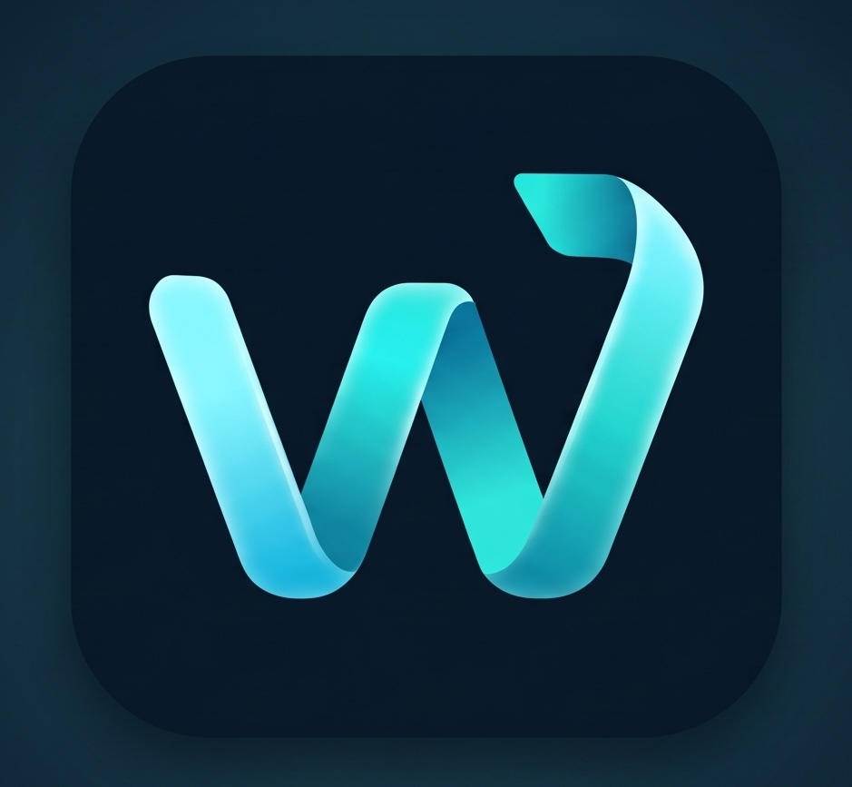

<!doctype html>
<html lang="pl"><head><meta charset="utf-8">
<meta name="viewport" content="width=device-width,initial-scale=1,viewport-fit=cover">
<meta name="color-scheme" content="dark">
<meta name="theme-color" content="#04111D">
<meta name="apple-mobile-web-app-capable" content="yes">
<title>Wyjdź z bańki</title>
<meta name="description" content="Porównuj, jak różne media opisują to samo wydarzenie. Odróżniaj fakty od opinii i emocji.">
<link rel="icon" type="image/png" href="favicon.png">
<link rel="apple-touch-icon" href="apple-touch-icon.png">
<link rel="manifest" href="manifest.webmanifest">
<meta name="apple-mobile-web-app-title" content="Wyjdź z bańki">
<meta property="og:type" content="website">
<meta property="og:title" content="Wyjdź z bańki">
<meta property="og:description" content="Porównuj, jak media opisują to samo wydarzenie. Odróżniaj fakty od opinii i emocji. Wersja testowa.">
<meta property="og:image" content="https://wyjdz-z-banki-648u.vercel.app/og.png">
<meta property="og:image:width" content="1200"><meta property="og:image:height" content="630">
<meta name="twitter:card" content="summary_large_image">

<link rel="preconnect" href="https://fonts.googleapis.com">
<link rel="stylesheet" href="https://fonts.googleapis.com/css2?family=Sora:wght@600;700;800&family=Manrope:wght@500;600;700;800&display=swap">
<style>
html,body{margin:0;height:100%;background:#04111D;overflow:hidden;color-scheme:dark;-webkit-text-size-adjust:100%;text-size-adjust:100%}
body{position:fixed;left:0;top:0;width:100%;height:100%;overflow:hidden;contain:paint}
a{color:inherit;text-decoration:none}
button,input{font-family:inherit}
input::placeholder{color:#8FB3BE;opacity:1}
#stage{position:absolute;left:0;top:0;width:390px;height:844px;transform-origin:0 0;overflow:hidden}
a,button{transition:transform .14s ease,filter .14s ease}
a:active,button:active{transform:scale(.96);filter:brightness(1.15)}
svg[width="390"] circle{transform-box:fill-box;transform-origin:center;animation:bob 6s ease-in-out infinite}
svg[width="390"] circle:nth-of-type(2n){animation-duration:8s;animation-delay:-2s}
svg[width="390"] circle:nth-of-type(3n){animation-duration:10s;animation-delay:-5s}
svg[width="390"] polygon{animation:ray 7s ease-in-out infinite alternate}
svg[width="390"] polygon:nth-of-type(2n){animation-duration:9s;animation-delay:-3s}
@keyframes streakPop{0%{transform:scale(.3);opacity:0}60%{transform:scale(1.25);opacity:1}100%{transform:scale(1)}}

.ob-back{position:absolute;left:0;top:0;width:390px;height:844px;z-index:60;background:rgba(2,10,20,.78);-webkit-backdrop-filter:blur(6px);backdrop-filter:blur(6px);display:flex;align-items:flex-end;animation:obFade .3s ease both}
.ob-card{box-sizing:border-box;width:100%;padding:12px 24px 28px;border-radius:28px 28px 0 0;background:linear-gradient(180deg,#0E4263,#06182A);border-top:1px solid rgba(94,230,214,.4);color:#E8F6F8;font-family:'Manrope',system-ui,sans-serif;animation:obRise .45s cubic-bezier(.2,.8,.2,1) both}
.ob-slide{animation:obIn .35s cubic-bezier(.2,.8,.2,1) both}
.ob-card h2{margin:14px 0 0;font-family:'Sora','Manrope',system-ui,sans-serif;font-size:22px;line-height:28px;font-weight:800;letter-spacing:-.3px}
.ob-card p{margin:8px 0 0;font-size:15px;line-height:22px;font-weight:500;color:#CFE6EC}
.ob-btn{height:48px;border-radius:14px;font-size:16px;font-weight:800;cursor:pointer;font-family:inherit}
.ob-demo{margin-top:14px;box-sizing:border-box;padding:12px 14px;border-radius:16px;background:rgba(255,255,255,.07);border:1px solid rgba(255,255,255,.16);font-size:15px;line-height:28px;font-weight:500}
@keyframes obFade{from{opacity:0}to{opacity:1}}
@keyframes obRise{from{transform:translateY(60px);opacity:0}to{transform:none;opacity:1}}
@keyframes obIn{from{opacity:0;transform:translateX(24px)}to{opacity:1;transform:none}}

@keyframes dotBob{0%,100%{transform:translateY(0)}50%{transform:translateY(-3px)}}
.src-dot{animation:dotBob 3.2s ease-in-out infinite;transition:transform .2s cubic-bezier(.2,.8,.2,1),box-shadow .2s}
@keyframes shakeX{0%,100%{transform:none}25%{transform:translateX(-6px)}75%{transform:translateX(6px)}}

/* Desktop: the phone-sized app is centred and scaled to the window height, with a side menu and a "open on phone" panel */
#side,#side2{display:none}
.desk body{background:radial-gradient(900px 600px at 50% 40%,#0E4263 0%,#06182A 55%,#030C14 100%)}
.desk.light body{background:radial-gradient(900px 600px at 50% 40%,#FFFFFF 0%,#D5ECF2 60%,#BFE0E9 100%)}
.desk #stage{border-radius:44px;box-shadow:0 0 0 10px rgba(255,255,255,.06),0 0 0 11px rgba(94,230,214,.25),0 40px 90px rgba(0,0,0,.55)}
.desk #side,.desk #side2{display:flex;position:fixed;top:50%;transform:translateY(-50%);width:270px;flex-direction:column;gap:14px;font-family:'Manrope',system-ui,sans-serif;color:#E8F6F8}
.desk.light #side,.desk.light #side2{color:#06182A}
.desk .sd-h{margin:0;font-family:'Sora','Manrope',system-ui,sans-serif;font-size:28px;line-height:34px;font-weight:800;letter-spacing:-.4px}
.desk .sd-p{margin:0;font-size:14px;line-height:21px;font-weight:500;opacity:.8}
.desk .sd-link{display:flex;align-items:center;gap:12px;height:48px;padding:0 14px;border-radius:14px;font-size:15px;font-weight:700;color:inherit;opacity:.85;border:1px solid transparent;transition:background .2s,opacity .2s,transform .14s}
.desk .sd-link:hover{background:rgba(94,230,214,.1);opacity:1}
.desk .sd-link[aria-current="page"]{background:rgba(94,230,214,.16);border-color:rgba(94,230,214,.4);opacity:1;color:#5EE6D6}
.desk.light .sd-link[aria-current="page"]{color:#0B6E66}
.desk .sd-card{padding:14px 16px;border-radius:18px;background:rgba(255,255,255,.07);border:1px solid rgba(255,255,255,.16);font-size:13px;line-height:19px;font-weight:600}
.desk.light .sd-card{background:rgba(255,255,255,.7);border-color:rgba(6,24,42,.15)}
.desk .sd-btn{height:44px;margin-top:10px;width:100%;border-radius:12px;border:1px solid rgba(94,230,214,.55);background:rgba(94,230,214,.12);color:inherit;font-size:14px;font-weight:800;cursor:pointer;font-family:inherit}
.desk kbd{display:inline-block;padding:1px 7px;border-radius:6px;border:1px solid rgba(255,255,255,.3);font:700 12px 'Manrope',sans-serif}
@keyframes bob{0%,100%{transform:translateY(0)}50%{transform:translateY(-9px)}}
@keyframes ray{from{opacity:.55}to{opacity:1}}
@keyframes pop{from{opacity:0;transform:translateY(10px) scale(.96)}to{opacity:1;transform:none}}
section[aria-live],#stage button[onclick]{animation:pop .28s ease both}
/* Tab bar: active item (aria-current="page") gets a soft pill behind its icon */
.tabbar .tab{--ease:cubic-bezier(.2,.8,.2,1);color:#A9CBD4;font-weight:700;transition:color .3s var(--ease),transform .14s ease,filter .14s ease}
.tabbar .tab-pill{position:relative;display:grid;place-items:center;width:54px;height:30px;border-radius:999px}
.tabbar .tab-pill::before{content:"";position:absolute;inset:0;border-radius:inherit;background:rgba(94,230,214,.15);box-shadow:inset 0 0 0 1px rgba(94,230,214,.22),0 0 14px rgba(94,230,214,.12);opacity:0;transform:scaleX(.55) scaleY(.8);transition:opacity .3s var(--ease),transform .4s var(--ease),background-color .3s var(--ease)}
.tabbar .tab-pill svg{position:relative;transition:transform .35s var(--ease)}
.tabbar .tab:hover:not([aria-current="page"]),.tabbar .tab:focus-visible:not([aria-current="page"]){color:#D6ECF1}
.tabbar .tab:hover:not([aria-current="page"]) .tab-pill::before,.tabbar .tab:focus-visible:not([aria-current="page"]) .tab-pill::before{opacity:.45;transform:scaleX(.8) scaleY(.9);background-color:rgba(169,203,212,.12)}
.tabbar .tab:focus-visible{outline:none}
.tabbar .tab:focus-visible .tab-pill{outline:2px solid rgba(94,230,214,.7);outline-offset:2px}
.tabbar .tab[aria-current="page"]{color:#5EE6D6;font-weight:800}
.tabbar .tab[aria-current="page"] .tab-pill::before{opacity:1;transform:none}
.tabbar .tab[aria-current="page"] .tab-pill svg{transform:translateY(-.5px) scale(1.06)}
/* Article: analysed fragments act as buttons that open an explanation bubble */
.mark{cursor:pointer;border-radius:4px;-webkit-tap-highlight-color:transparent;transition:filter .18s ease,box-shadow .2s ease,opacity .2s ease,background-color .2s ease}
.mark:hover{filter:brightness(1.25)}
.mark:focus-visible{outline:2px solid #E8F6F8;outline-offset:2px}
.mark:active{filter:brightness(1.4)}
.mark-backdrop{position:fixed;inset:0;z-index:20;margin:0;padding:0;border:0;background:transparent;cursor:default}
.mark-backdrop:active{transform:none;filter:none}
.mark-tip{position:absolute;z-index:21;width:268px;box-sizing:border-box;padding:10px 10px 12px 12px;border-radius:16px;background:rgba(9,32,50,.97);border:1px solid color-mix(in srgb,var(--accent) 45%,transparent);box-shadow:0 12px 32px rgba(0,0,0,.45),0 0 0 4px var(--accent-bg);transform-origin:var(--arrow) 0;animation:tip-in .24s cubic-bezier(.2,.8,.2,1) .12s both}
.mark-tip::before{content:"";position:absolute;top:-7px;left:calc(var(--arrow) - 6px);width:12px;height:12px;background:rgba(9,32,50,.97);border-left:1px solid color-mix(in srgb,var(--accent) 45%,transparent);border-top:1px solid color-mix(in srgb,var(--accent) 45%,transparent);border-top-left-radius:3px;transform:rotate(45deg)}
.mark-tip-close{flex:none;width:32px;height:32px;margin:-4px -2px -4px 0;padding:0;border:0;border-radius:999px;background:rgba(255,255,255,.08);color:#A9CBD4;display:grid;place-items:center;cursor:pointer}
.mark-tip-close:hover{color:#E8F6F8;background:rgba(255,255,255,.14)}
.mark-tip-close:focus-visible{outline:2px solid var(--accent);outline-offset:2px}
/* Achievements tree: unlocked badge breathes a soft glow; in-progress badge has a slowly rotating dashed ring */
.badge-unlocked{animation:badge-glow 2.6s ease-in-out infinite}
@keyframes badge-glow{0%,100%{box-shadow:0 0 0 0 rgba(94,230,214,.45),0 0 10px rgba(94,230,214,.25)}50%{box-shadow:0 0 0 6px rgba(94,230,214,0),0 0 22px rgba(94,230,214,.55)}}
.badge-progress::before{content:"";position:absolute;inset:0;border-radius:inherit;border:2px dashed #5EE6D6;box-sizing:border-box;animation:badge-spin 9s linear infinite;pointer-events:none}
@keyframes badge-spin{to{transform:rotate(360deg)}}
@keyframes tip-in{from{opacity:0;transform:translateY(-6px) scale(.94)}to{opacity:1;transform:none}}
/* Quiz: answer feedback — pop + spinning check for correct, short shake for wrong */
.quiz-opt.is-pop{animation:quiz-pop .5s cubic-bezier(.3,1.5,.5,1) both}
.quiz-opt.is-pop .quiz-icon-ok{animation:quiz-check .55s cubic-bezier(.3,1.6,.5,1) .05s both}
.quiz-opt.is-reveal .quiz-icon-ok{animation:quiz-check .45s cubic-bezier(.3,1.4,.5,1) .3s both}
.quiz-opt.is-shake{animation:quiz-shake .32s ease-in-out both}
.quiz-opt.is-shake .quiz-icon-bad{animation:quiz-bad .3s ease-out both}
@keyframes quiz-pop{0%{transform:scale(1);box-shadow:0 0 0 0 rgba(94,230,214,.55)}35%{transform:scale(1.035);box-shadow:0 0 0 6px rgba(94,230,214,.28)}70%{transform:scale(.995)}100%{transform:none;box-shadow:0 0 0 12px rgba(94,230,214,0)}}
@keyframes quiz-check{from{opacity:0;transform:scale(.3) rotate(-120deg)}to{opacity:1;transform:none}}
@keyframes quiz-shake{0%,100%{transform:none}20%{transform:translateX(-5px)}40%{transform:translateX(4px)}60%{transform:translateX(-3px)}80%{transform:translateX(2px)}}
@keyframes quiz-bad{from{opacity:0;transform:scale(.6)}to{opacity:1;transform:none}}
/* Charts: bars grow from 0 to their target value on every screen entry */
.chart-grow-x{animation:chart-grow-x .8s ease-out .15s both}
.chart-grow-y{transform-box:fill-box;transform-origin:top;animation:chart-grow-y .8s ease-out .15s both}
.chart-depth-marker{animation:chart-depth .8s ease-out .15s both}
.chart-fade-in{animation:chart-fade .4s ease-out .85s both}
@keyframes chart-grow-x{from{width:0}}
@keyframes chart-grow-y{from{transform:scaleY(0)}}
@keyframes chart-depth{from{transform:translateY(var(--depth,0))}}
@keyframes chart-fade{from{opacity:0}}
.screen-ghost [class*="chart-"]{animation:none!important}
/* Main: "Analizuj wiadomość" loading state */
.analyze-btn{position:relative;overflow:hidden}
.analyze-btn.is-loading{cursor:progress;background:#7FF0E0!important;pointer-events:none}
.analyze-btn.is-loading::after{content:"";position:absolute;top:0;bottom:0;left:-40%;width:40%;background:linear-gradient(90deg,transparent,rgba(255,255,255,.55),transparent);animation:scan-sweep 1.1s ease-in-out infinite}
.scan-spinner{width:18px;height:18px;box-sizing:border-box;border-radius:50%;border:2.5px solid rgba(4,32,43,.25);border-top-color:#04202B;animation:scan-spin .75s linear infinite}
@keyframes scan-spin{to{transform:rotate(360deg)}}
@keyframes scan-sweep{to{left:100%}}
@media (prefers-reduced-motion:reduce){*{animation:none!important;transition:none!important}}
.no-motion *{animation:none!important;transition:none!important}

/* Dialogs keep a padded, scrollable content area; controls never squeeze text. */
.app-modal{display:flex;flex-direction:column;gap:14px;flex:none;max-height:86%;overflow:hidden}
.app-modal-handle{flex:none;width:40px;height:4px;border-radius:4px;background:rgba(255,255,255,.25);margin:0 auto}
.modal-body{min-height:0;overflow-y:auto;overflow-x:hidden;overscroll-behavior:contain;-webkit-overflow-scrolling:touch;padding:0 2px 8px;scrollbar-gutter:stable}
.modal-body>*{box-sizing:border-box;max-width:100%;overflow-wrap:anywhere}
.modal-body p{margin:8px 0 14px}
.modal-body h3{margin:20px 0 8px;font-size:16px;line-height:22px}
.modal-body>button{display:block;min-height:48px;height:auto!important;margin-top:18px!important;padding:12px 16px;line-height:22px;white-space:normal}
.article-scroll>*,.compare-scroll>*{flex-shrink:0}
.compare-scroll{overflow-y:auto;overscroll-behavior:contain;-webkit-overflow-scrolling:touch;padding-bottom:20px!important;scrollbar-width:thin;scrollbar-color:#5EE6D6 transparent}
</style><link rel="stylesheet" href="/visual-polish.css"><link rel="stylesheet" href="/analysis-details.css"><link rel="stylesheet" href="/app-design.css"><link rel="stylesheet" href="/desktop-ui.css"><link rel="stylesheet" href="/interaction-ui.css"></head><body>
<div id="stage"></div>
<aside id="side" aria-label="Menu aplikacji">
<div style="display:flex;align-items:center;gap:12px"><span style="display:block;width:56px;height:54px;overflow:hidden;border-radius:16px;position:relative;box-shadow:0 0 0 1px rgba(94,230,214,.35)"></span><span style="font-family:'Sora','Manrope',sans-serif;font-weight:700;font-size:18px">Wyjdź z bańki</span></div>
<h1 class="sd-h">Zobacz więcej niż jedną stronę</h1>
<p class="sd-p">Wersja testowa na komputer. Dane są przykładowe, a media fikcyjne.</p><p class="sd-p" id="sdVer" style="opacity:.6"></p>
<nav class="tabbar" aria-label="Menu na komputerze" style="display:flex;flex-direction:column;gap:4px">
<a class="sd-link" data-tab="0" href="Main.dc.html"><svg width="20" height="20" viewBox="0 0 24 24" fill="none" stroke="currentColor" stroke-width="2" stroke-linecap="round" stroke-linejoin="round" aria-hidden="true"><circle cx="10" cy="14" r="6"/><circle cx="18" cy="6" r="2.5"/></svg>Start</a>
<a class="sd-link" data-tab="1" href="Compare.dc.html"><svg width="20" height="20" viewBox="0 0 24 24" fill="none" stroke="currentColor" stroke-width="2" stroke-linecap="round" stroke-linejoin="round" aria-hidden="true"><circle cx="9" cy="12" r="6"/><circle cx="15" cy="12" r="6"/></svg>Porównaj</a>
<a class="sd-link" data-tab="2" href="Article.dc.html"><svg width="20" height="20" viewBox="0 0 24 24" fill="none" stroke="currentColor" stroke-width="2" stroke-linecap="round" stroke-linejoin="round" aria-hidden="true"><circle cx="11" cy="11" r="6.5"/><path d="M16 16l5 5"/></svg>Analiza</a>
<a class="sd-link" data-tab="3" href="Learn.dc.html"><svg width="20" height="20" viewBox="0 0 24 24" fill="none" stroke="currentColor" stroke-width="2" stroke-linecap="round" stroke-linejoin="round" aria-hidden="true"><path d="M4 5h7a1 1 0 0 1 1 1v14a1 1 0 0 0-1-1H4zM20 5h-7a1 1 0 0 0-1 1v14a1 1 0 0 1 1-1h7z"/></svg>Nauka</a>
</nav></aside>
<aside id="side2" aria-label="Wskazówki">
<div class="sd-card"><strong>Otwórz na telefonie</strong><br>Ta sama strona dopasuje się do telefonu. Skopiuj adres i wyślij go sobie.<button type="button" class="sd-btn" id="copyLink">Skopiuj link</button></div>
<div class="sd-card"><strong>Skróty</strong><br><kbd>Esc</kbd> zamyka okna i samouczek<br><kbd>Tab</kbd> przechodzi między elementami</div>
</aside>

<script src="/account-session.js"></script>
<script src="/account-data.js"></script>
<script src="/auth-return.js"></script>
<script src="/analysis-method.js"></script>
<script src="/analysis-details.js"></script>
<script src="/article-flow.js"></script>
<script src="/guest-session.js"></script>
<script src="/quota-view.js"></script>
<script src="/profile.js"></script>
<script src="/privacy-config.js"></script>
<script src="/privacy.js"></script>
<script src="/transparency.js"></script>
<script src="/visual-polish.js"></script>
<script src="/modal.js"></script>
<script src="/welcome-ui.js"></script>
<script src="/desktop-ui.js"></script>
<script src="/app-layout.js"></script>
<script src="/app-entry.js"></script>
<script>
/* App version: bump this on every release (shown on the splash, in Settings and in the desktop side panel) */
const APP_VERSION='Beta 0.81';
/* Where tester feedback goes. Set ONE of these: a form endpoint (POST JSON, e.g. Formspree) or an e-mail address. With both empty, the tester gets the text to share/copy. */
const PREFS_KEY='wzb-settings',PREF_DEFAULTS={motion:true,haptics:true,splash:true,light:false,timer:true,sound:false};
let PREFS=(()=>{try{return Object.assign({},PREF_DEFAULTS,JSON.parse(localStorage.getItem(PREFS_KEY)||'{}'))}catch(_){return Object.assign({},PREF_DEFAULTS)}})();
function applyPrefs(){document.documentElement.classList.toggle('no-motion',!PREFS.motion);document.documentElement.classList.toggle('light',!!PREFS.light);const t=document.querySelector('meta[name=theme-color]');if(t)t.setAttribute('content',PREFS.light?'#E4F2F6':'#04111D')}
function setPref(k,v){PREFS[k]=v;if(!motionOK())stopVisualMotion();try{localStorage.setItem(PREFS_KEY,JSON.stringify(PREFS))}catch(_){}applyPrefs();if(k==='sound')applySoundPreference(true)}
function resetPrefs(){PREFS=Object.assign({},PREF_DEFAULTS);try{localStorage.removeItem(PREFS_KEY);localStorage.removeItem('wzb-onboarded');resetAccountProgress()}catch(_){}applyPrefs();applySoundPreference()}
function motionOK(){return !!PREFS.motion&&matchMedia('(prefers-reduced-motion: no-preference)').matches}
/* Article: tactile "press" on a tapped fragment (0.95 → 1.05 → 1, ~0.3s). Runs after the re-render, on the fresh node.
   Inline text can't be transformed, so single-line fragments become inline-block for the duration (layout-neutral);
   multi-line fragments would re-wrap, so they get the same rhythm as a brightness press instead. */
function pulseMark(i){
  if(!motionOK())return;
  const m=document.querySelectorAll('#stage .mark')[i];
  if(!m||!m.animate)return;
  const o={duration:300,easing:'cubic-bezier(.3,.7,.4,1)'};
  if(m.getClientRects().length===1){
    m.style.display='inline-block';m.style.transformOrigin='50% 50%';
    const an=m.animate([{transform:'scale(1)'},{transform:'scale(.95)',offset:.25},{transform:'scale(1.05)',offset:.6},{transform:'scale(1)'}],o);
    const end=()=>{m.style.display='';m.style.transformOrigin=''};an.onfinish=end;an.oncancel=end;
  }else{
    m.animate([{filter:'brightness(1)'},{filter:'brightness(.8)',offset:.25},{filter:'brightness(1.45)',offset:.6},{filter:'brightness(1)'}],o);
  }
}
applyPrefs();
/* Shared demo data: events → articles. Tag (Informacja/Komentarz/Emocje) is derived from the sentence analysis. */
const NEWS=[
 {title:'Nowelizacja ustawy o transporcie regionalnym',date:'3 listopada',featured:['ds','w24','mo'],
  docs:[['doc','Druk sejmowy: projekt ustawy','Dokument · oryginał'],['data','Wynik głosowania z 30 października','Dane · oryginał']],
  articles:[
   {id:'ds',name:'Dziennik Stołeczny',lean:'C',pct:12,head:'Sejm przyjął nowelizację: regiony dostaną na transport o 2 mld zł więcej',s:[
    ['fact','Sejm przyjął w piątek nowelizację ustawy o publicznym transporcie zbiorowym, która zwiększa dotacje dla regionów o 2 mld zł.'],
    ['fact','Za ustawą głosowało 231 posłów, przeciw było 198.'],
    ['fact','Pieniądze mają trafić głównie na połączenia autobusowe i kolejowe w powiatach, w których dziś nie kursuje żaden przewoźnik.'],
    ['opinion','Zdaniem części ekspertów ta kwota może jednak nie wystarczyć na trwałą poprawę sytuacji.'],
    ['fact','Ustawa trafi teraz do Senatu.']]},
   {id:'rp',name:'Rzecz Publiczna',lean:'C',pct:18,head:'Regiony z większymi dotacjami na autobusy i pociągi. Ustawa trafi do Senatu',s:[
    ['fact','Posłowie uchwalili nowelizację, która podnosi dotacje na regionalny transport zbiorowy o 2 mld zł.'],
    ['fact','Według uzasadnienia projektu z nowych połączeń może skorzystać ok. 1,2 tys. gmin.'],
    ['opinion','Opozycja przekonuje, że pieniądze rozdzielono zbyt pośpiesznie.'],
    ['fact','Głosowanie zakończyło się wynikiem 231 do 198.']]},
   {id:'br',name:'Biuletyn Regionów',lean:'L',pct:22,head:'Więcej pieniędzy na lokalne połączenia. Gminy czekają na wytyczne',s:[
    ['fact','Sejm zwiększył o 2 mld zł dotacje dla samorządów na organizację transportu zbiorowego.'],
    ['fact','Środki będzie można przeznaczyć na nowe linie autobusowe i dopłaty do biletów.'],
    ['opinion','Dla mniejszych gmin to szansa, której nie powinny zmarnować.'],
    ['fact','Ministerstwo zapowiada, że szczegółowe zasady podziału pieniędzy opublikuje do końca roku.']]},
   {id:'kg',name:'Kurier Gospodarczy',lean:'C',pct:29,head:'2 mld zł więcej na transport regionalny. Co to oznacza dla budżetu?',s:[
    ['fact','Nowelizacja przyjęta przez Sejm zwiększa wydatki budżetu na transport regionalny o 2 mld zł rocznie.'],
    ['fact','Środki mają pochodzić z Funduszu Rozwoju Przewozów Autobusowych.'],
    ['opinion','Ekonomiści obawiają się, że bez kontroli kosztów część pieniędzy zostanie wydana nieefektywnie.'],
    ['emotion','Przewoźnicy mówią o „ostatniej desce ratunku” dla nierentownych linii.'],
    ['fact','Za ustawą głosowało 231 posłów.']]},
   {id:'go',name:'Głos Obywatelski',lean:'R',pct:35,head:'Kosztowna ustawa transportowa. [o]Rząd znów obiecuje więcej, niż może dać[/o]',s:[
    ['fact','Sejm przyjął nowelizację zwiększającą dotacje na transport regionalny o 2 mld zł.'],
    ['opinion','To kolejna obietnica, której realizacja będzie trudna bez reformy samych przewoźników.'],
    ['opinion','Pieniądze powinny trafiać do gmin, które przygotują realne plany, a nie do wszystkich po równo.'],
    ['emotion','Mieszkańcy wsi mają już dość pustych zapowiedzi.']]},
   {id:'mo',name:'Magazyn Opinii',lean:'L',pct:47,head:'Ustawa o transporcie to [o]pozorowany sukces[/o], który nie rozwiąże problemu wykluczenia',s:[
    ['fact','Rząd podkreśla, że regiony dostaną na transport o 2 mld zł więcej.'],
    ['opinion','To jednak pozorowany sukces – bez stałego finansowania nowe linie znikną po roku lub dwóch.'],
    ['opinion','Wykluczenie komunikacyjne to problem systemowy, a nie kwestia jednorazowej dotacji.'],
    ['emotion','Trudno oprzeć się wrażeniu, że chodzi głównie o efektowne zdjęcia przy nowych autobusach.'],
    ['opinion','Potrzebna jest strategia na dekadę, a nie na jedną kampanię.']]},
   {id:'tk',name:'Tygodnik Kontrapunkt',lean:'R',pct:58,head:'[o]Ustawa transportowa faworyzuje duże województwa[/o]. [e]Reszta znowu zapłaci[/e]',s:[
    ['fact','Za nowelizacją głosowało 231 posłów, przeciw było 198.'],
    ['opinion','Podział 2 mld zł faworyzuje duże województwa, które i tak mają najlepsze połączenia.'],
    ['emotion','Mniejsze powiaty znowu zostały z niczym!'],
    ['opinion','Senat powinien wprowadzić poprawki, które zagwarantują równy dostęp do środków.'],
    ['opinion','Bez takich zmian ustawa nie spełni swojej roli.']]},
   {id:'ed',name:'Echo Dnia',lean:'C',pct:66,head:'[e]Wielkie pieniądze[/e], [o]wątpliwe efekty[/o]. Ustawa transportowa przyjęta',s:[
    ['fact','Sejm przyjął w piątek ustawę zwiększającą dotacje na regionalny transport o 2 mld zł.'],
    ['emotion','Wielkie pieniądze to jednak nie wszystko – mieszkańcy od lat czekają na autobus, który nigdy nie przyjeżdża.'],
    ['opinion','Bez dobrego planowania tras dotacje mogą rozpłynąć się w biurokracji.'],
    ['opinion','Samorządy powinny wspólnie projektować sieć połączeń, zamiast działać na własną rękę.'],
    ['opinion','Najwięcej zależeć będzie od tego, jak szybko gminy ogłoszą przetargi.'],
    ['emotion','Ludzie są zmęczeni czekaniem.']]},
   {id:'w24',name:'Wiadomości 24h',lean:'R',pct:81,head:'[e]Skandal w Sejmie![/e] Rząd wydaje miliardy, a [e]pociągi dalej nie jadą[/e]',s:[
    ['fact','Sejm przyjął w piątek nowelizację ustawy, która zwiększa dotacje dla regionów na transport zbiorowy o 2 mld zł.'],
    ['emotion','Rząd po raz kolejny bezwstydnie wyrzuca pieniądze w błoto,'],
    ['opinion','a mieszkańcy małych miast i tak nie zobaczą żadnego nowego pociągu.'],
    ['fact','Za ustawą głosowało 231 posłów, przeciw było 198.'],
    ['emotion','To skandal, na który nikt nie powinien się godzić!'],
    ['emotion','Ludzie mają prawo być wściekli.']]},
  ]},
 {title:'Spór o budżet szkół na przyszły rok',date:'2 listopada',featured:['rp','br','go','w24'],
  docs:[['doc','Projekt ustawy budżetowej – część oświatowa','Dokument · oryginał'],['doc','Stanowisko Komisji Wspólnej Rządu i Samorządu','Dokument · oryginał']],
  articles:[
   {id:'rp',name:'Rzecz Publiczna',lean:'C',pct:15,head:'Subwencja oświatowa wzrośnie o 4%. Samorządy chciały 10%',s:[
    ['fact','Projekt budżetu na przyszły rok przewiduje wzrost subwencji oświatowej o 4%, do 68,4 mld zł.'],
    ['fact','Związek Miast Polskich wnioskował o podwyżkę o 10%, wskazując na rosnące koszty utrzymania szkół.'],
    ['fact','Komisja Wspólna Rządu i Samorządu nie wydała w tej sprawie pozytywnej opinii.'],
    ['opinion','Zdaniem części ekspertów różnica będzie najbardziej odczuwalna w małych gminach.'],
    ['fact','Ministerstwo Edukacji zapowiada, że pensje nauczycieli wzrosną od stycznia o 5%.']]},
   {id:'br',name:'Biuletyn Regionów',lean:'L',pct:27,head:'Gminy liczą koszty: wyższa subwencja nie pokryje podwyżek dla nauczycieli',s:[
    ['fact','Według wyliczeń samorządów wzrost subwencji o 4% nie pokryje w całości zapowiedzianych 5% podwyżek dla nauczycieli.'],
    ['fact','Brakującą kwotę gminy szacują na ok. 1,8 mld zł.'],
    ['opinion','Bez dodatkowych pieniędzy część mniejszych szkół może być zagrożona.'],
    ['emotion','Dyrektorzy mówią o „dramatycznej” sytuacji w budżetach placówek.'],
    ['fact','Rozmowy rządu z samorządowcami mają być kontynuowane w przyszłym tygodniu.']]},
   {id:'go',name:'Głos Obywatelski',lean:'R',pct:52,head:'[o]Samorządy chcą więcej, ale same powinny szukać oszczędności[/o]',s:[
    ['fact','Rząd zaproponował wzrost subwencji oświatowej o 4%.'],
    ['opinion','Samorządy domagają się 10%, ale nie pokazują, gdzie same mogłyby oszczędzić.'],
    ['opinion','Utrzymywanie szkół z kilkunastoma uczniami w klasie to luksus, na który nie stać wielu gmin.'],
    ['emotion','Kolejne krzyki o „katastrofie” w oświacie niczego nie załatwią.'],
    ['opinion','Najpierw potrzebna jest rzetelna rozmowa o sieci szkół.']]},
   {id:'w24',name:'Wiadomości 24h',lean:'R',pct:74,head:'[e]Dramat w szkołach![/e] Rząd [e]zostawia nauczycieli na lodzie[/e]',s:[
    ['fact','Rząd zaproponował wzrost subwencji oświatowej o 4%, choć samorządy chciały 10%.'],
    ['emotion','To policzek wymierzony w nauczycieli i rodziców!'],
    ['emotion','Szkoły już teraz ledwo wiążą koniec z końcem, a władza udaje, że problemu nie ma.'],
    ['opinion','Bez większych pieniędzy jakość nauczania na pewno spadnie.'],
    ['emotion','Rodzice mają prawo czuć się oszukani.']]},
  ]},
 {title:'Nowe przepisy o jawności umów publicznych',date:'1 listopada',featured:['ds','kg','mo'],
  docs:[['doc','Projekt ustawy o jawności umów','Dokument · oryginał'],['data','Ocena skutków regulacji','Dane · oryginał']],
  articles:[
   {id:'ds',name:'Dziennik Stołeczny',lean:'C',pct:10,head:'Umowy urzędów powyżej 10 tys. zł trafią do jawnego rejestru',s:[
    ['fact','Rada Ministrów przyjęła projekt ustawy, zgodnie z którym urzędy i spółki komunalne będą publikować umowy o wartości powyżej 10 tys. zł.'],
    ['fact','Dokumenty mają trafiać do centralnego rejestru w ciągu 14 dni od podpisania.'],
    ['fact','Przepisy miałyby wejść w życie 1 lipca przyszłego roku.'],
    ['opinion','Organizacje strażnicze oceniają projekt pozytywnie, ale uważają, że powinien objąć także fundacje spółek Skarbu Państwa.']]},
   {id:'kg',name:'Kurier Gospodarczy',lean:'C',pct:21,head:'Rejestr umów publicznych od lipca. Firmy pytają o tajemnicę handlową',s:[
    ['fact','Projekt przewiduje publikację w rejestrze umów zawieranych przez urzędy i spółki komunalne powyżej 10 tys. zł.'],
    ['fact','Z obowiązku wyłączone będą informacje stanowiące tajemnicę przedsiębiorstwa.'],
    ['opinion','Przedsiębiorcy obawiają się, że granica między jawnością a tajemnicą handlową będzie interpretowana zbyt szeroko.'],
    ['fact','Za niepublikowanie umowy kierownikowi jednostki grozić ma grzywna.']]},
   {id:'mo',name:'Magazyn Opinii',lean:'L',pct:38,head:'Jawność umów to [o]dobry początek[/o], ale [o]wyjątków jest za dużo[/o]',s:[
    ['fact','Rząd przyjął projekt, który ma ujawnić umowy urzędów i spółek komunalnych.'],
    ['opinion','To dobry początek, bo obywatele mają prawo wiedzieć, na co idą publiczne pieniądze.'],
    ['opinion','Wyjątek dla tajemnicy przedsiębiorstwa jest jednak sformułowany zbyt szeroko.'],
    ['opinion','Łatwo sobie wyobrazić, że najbardziej kontrowersyjne umowy nadal pozostaną niejawne.'],
    ['fact','Projekt trafi teraz do Sejmu.']]},
  ]},
];
attachDemoMetadata(NEWS);
const NEWS_LEANS={L:{label:'Lewica',color:'#5AA2FF'},C:{label:'Centrum',color:'#CFE6EC'},R:{label:'Prawica',color:'#B58CFF'}};
const NEWS_TAGS={
 fact:{label:'Twierdzenia',bg:'rgba(207,230,236,0.08)',color:'#CFE6EC',icon:'M6 3h9l4 4v14H6zM9 12h7M9 16h7'},
 opinion:{label:'Komentarz',bg:'rgba(242,201,76,0.16)',color:'#F5D874',icon:'M4 5h16v11H9l-5 4z'},
 emotion:{label:'Emocje',bg:'rgba(255,122,102,0.18)',color:'#FFB0A4',icon:'M13 3L5 14h6l-1 7 8-11h-6z'}};
const NEWS_MARK={emotion:'text-decoration: underline wavy #FF7A66; text-underline-offset: 4px; background: rgba(255,122,102,0.14);',opinion:'border-bottom: 2px dashed #F2C94C; background: rgba(242,201,76,0.12);'};
function newsCounts(a){if(a.analysisVersion===2){const summary=AnalysisMethod.summarize(analysisRows(a));return {fact:summary.checkable,opinion:summary.opinions,emotion:summary.emotional}}const c={fact:0,opinion:0,emotion:0};a.s.forEach(x=>c[x[0]]++);return c}
function newsTag(a){const c=newsCounts(a);const k=['fact','opinion','emotion'].reduce((m,k)=>c[k]>c[m]?k:m,'fact');return Object.assign({key:k},NEWS_TAGS[k])}
function newsHead(a){const out=[];a.head.replace(/\[(e|o)\](.*?)\[\/\1\]|([^\[]+)/g,(_,k,t,p)=>{out.push(p!=null?{text:p,css:''}:{text:t,css:NEWS_MARK[k==='e'?'emotion':'opinion']})});return out}
function newsBar(p){return p<=33?'#5EE6D6':(p<=66?'#F2C94C':'#FF7A66')}
let SEL=(()=>{try{return Object.assign({ev:0,src:null,from:'Compare'},JSON.parse(sessionStorage.getItem('wzb-sel')||'{}'))}catch(_){return {ev:0,src:null,from:'Compare'}}})();
function select(p){Object.assign(SEL,p);try{sessionStorage.setItem('wzb-sel',JSON.stringify(SEL))}catch(_){}}
function curEvent(){return NEWS[SEL.ev]||NEWS[0]}
function curArticle(){const e=curEvent();return e.articles.find(a=>a.id===SEL.src)||e.articles.find(a=>a.id===e.featured[0])}
class DCLogic{constructor(r){this.state={};this._r=r}setState(p){this.state=Object.assign({},this.state,p);this._r()}}
const SCREENS={"Splash": {"html": "<div style=\"position: relative; width: 390px; height: 844px; box-sizing: border-box; display: flex; flex-direction: column; overflow: hidden; background: linear-gradient(180deg, #1B6A8F 0%, #0E4263 18%, #0A2A43 45%, #06182A 75%, #04111D 100%); color: #E8F6F8; font-family: 'Manrope', system-ui, sans-serif\">\n\n  <svg width=\"390\" height=\"844\" viewBox=\"0 0 390 844\" aria-hidden=\"true\" style=\"position: absolute; left: 0; top: 0; pointer-events: none\">\n    <defs>\n      <linearGradient id=\"rays-sp\" x1=\"0\" y1=\"0\" x2=\"0\" y2=\"1\">\n        <stop offset=\"0\" stop-color=\"#BFFAF3\" stop-opacity=\"0.28\"></stop>\n        <stop offset=\"1\" stop-color=\"#BFFAF3\" stop-opacity=\"0\"></stop>\n      </linearGradient>\n      <radialGradient id=\"bubble-sp\" cx=\"0.35\" cy=\"0.3\" r=\"0.8\">\n        <stop offset=\"0\" stop-color=\"#9FF3EA\" stop-opacity=\"0.35\"></stop>\n        <stop offset=\"0.6\" stop-color=\"#5EE6D6\" stop-opacity=\"0.08\"></stop>\n        <stop offset=\"1\" stop-color=\"#5EE6D6\" stop-opacity=\"0.02\"></stop>\n      </radialGradient>\n    </defs>\n    <polygon points=\"20,0 110,0 250,560 60,560\" fill=\"url(#rays-sp)\"></polygon>\n    <polygon points=\"230,0 300,0 390,480 290,480\" fill=\"url(#rays-sp)\"></polygon>\n    <g transform=\"translate(0,-80)\">\n      <circle cx=\"150\" cy=\"330\" r=\"118\" fill=\"url(#bubble-sp)\" stroke=\"#5EE6D6\" stroke-opacity=\"0.65\" stroke-width=\"2.5\"></circle>\n      <path d=\"M84 292a74 74 0 0 1 52-46\" fill=\"none\" stroke=\"#E8F6F8\" stroke-opacity=\"0.7\" stroke-width=\"5\" stroke-linecap=\"round\"></path>\n      <circle cx=\"246\" cy=\"236\" r=\"44\" fill=\"rgba(94,230,214,0.12)\" stroke=\"#5EE6D6\" stroke-width=\"2.5\"></circle>\n      <path d=\"M224 222a24 24 0 0 1 18-12\" fill=\"none\" stroke=\"#E8F6F8\" stroke-opacity=\"0.7\" stroke-width=\"3.5\" stroke-linecap=\"round\"></path>\n      <circle cx=\"300\" cy=\"168\" r=\"14\" fill=\"none\" stroke=\"#5EE6D6\" stroke-opacity=\"0.6\" stroke-width=\"2\"></circle>\n      <circle cx=\"324\" cy=\"120\" r=\"8\" fill=\"none\" stroke=\"#5EE6D6\" stroke-opacity=\"0.5\" stroke-width=\"2\"></circle>\n      <circle cx=\"340\" cy=\"84\" r=\"5\" fill=\"none\" stroke=\"#5EE6D6\" stroke-opacity=\"0.4\" stroke-width=\"1.5\"></circle>\n    </g>\n    <circle cx=\"48\" cy=\"520\" r=\"12\" fill=\"none\" stroke=\"#5EE6D6\" stroke-opacity=\"0.3\" stroke-width=\"1.5\"></circle>\n    <circle cx=\"352\" cy=\"500\" r=\"18\" fill=\"none\" stroke=\"#5EE6D6\" stroke-opacity=\"0.25\" stroke-width=\"1.5\"></circle>\n    <path d=\"M0 760c40-14 80-14 120 0s80 14 120 0 80-14 150 0v84H0z\" fill=\"rgba(94,230,214,0.06)\"></path>\n  </svg>\n\n  <div style=\"position: relative; flex: 1; min-height: 0; box-sizing: border-box; padding: 0 28px; display: flex; flex-direction: column; justify-content: flex-end; gap: 14px\">\n    <div style=\"display: flex; align-items: center; gap: 14px\">\n      <span style=\"position: relative; flex: none; display: block; width: 88px; height: 85px; overflow: hidden; border-radius: 22px; box-shadow: 0 0 0 1px rgba(94,230,214,0.35), 0 10px 30px rgba(0,0,0,0.45)\">\n        \n      </span>\n      <span style=\"font-family: 'Sora', 'Manrope', system-ui, sans-serif; font-size: 20px; line-height: 26px; font-weight: 700; letter-spacing: -0.2px\">Wyjdź z bańki</span>\n    </div>\n    <h1 style=\"margin: 0; font-family: 'Sora', 'Manrope', system-ui, sans-serif; font-size: 36px; line-height: 44px; font-weight: 800; letter-spacing: -0.8px\">Zobacz więcej niż jedną stronę wydarzenia</h1>\n    <p style=\"margin: 0; font-size: 16px; line-height: 24px; font-weight: 500; color: #CFE6EC\">Porównuj, jak różne media opisują to samo. Odróżniaj fakty od opinii i emocji. Zanurz się głębiej niż nagłówek.</p>\n  </div>\n\n  <div style=\"position: relative; box-sizing: border-box; padding: 24px 28px 36px; display: flex; flex-direction: column; gap: 12px\">\n    <button id=\"start-account\" type=\"button\" onclick=\"{{ startAccount }}\" style=\"width:100%;min-height:52px;padding:10px;border:0;border-radius:18px;background:#5EE6D6;color:#04202B;font:800 16px Manrope,system-ui,sans-serif;cursor:pointer\">Zaloguj się / Utwórz konto</button>\n    <button id=\"start-guest\" type=\"button\" onclick=\"{{ enterGuest }}\" style=\"width:100%;min-height:48px;padding:10px;border:1px solid rgba(255,255,255,.28);border-radius:18px;background:rgba(255,255,255,.07);color:#E8F6F8;font:800 16px Manrope,system-ui,sans-serif;cursor:pointer\">{{ guestLabel }}</button>\n    <p style=\"margin:0;text-align:center;font-size:12px;line-height:18px;color:#A9CBD4\">Gość: 2 analizy AI dziennie. Konto: 5 analiz i zapisywanie postępów.</p>\n    <div style=\"text-align: center; font-size: 12px; line-height: 18px; font-weight: 600; color: #A9CBD4\">{{ splashNote }}</div>\n  </div>\n</div>", "js": "class Component extends DCLogic {\n  renderVals() {\n    return {};\n  }\n}\n(function(){const rv=Component.prototype.renderVals;Component.prototype.renderVals=function(){const v=rv.call(this)||{};return Object.assign(v,EXTRA.Splash.call(this,v))}})();\n"}, "Main": {"html": "<div style=\"position: relative; width: 390px; height: 844px; box-sizing: border-box; display: flex; flex-direction: column; overflow: hidden; background: linear-gradient(180deg, #0E4263 0%, #0A2A43 28%, #06182A 68%, #04111D 100%); color: #E8F6F8; font-family: 'Manrope', system-ui, sans-serif\">\n\n  <svg width=\"390\" height=\"844\" viewBox=\"0 0 390 844\" aria-hidden=\"true\" style=\"position: absolute; left: 0; top: 0; pointer-events: none\">\n    <defs>\n      <linearGradient id=\"rays-main\" x1=\"0\" y1=\"0\" x2=\"0\" y2=\"1\">\n        <stop offset=\"0\" stop-color=\"#9FF3EA\" stop-opacity=\"0.18\"></stop>\n        <stop offset=\"1\" stop-color=\"#9FF3EA\" stop-opacity=\"0\"></stop>\n      </linearGradient>\n    </defs>\n    <polygon points=\"40,0 120,0 230,430 90,430\" fill=\"url(#rays-main)\"></polygon>\n    <polygon points=\"240,0 300,0 390,380 300,380\" fill=\"url(#rays-main)\"></polygon>\n    <circle cx=\"344\" cy=\"168\" r=\"22\" fill=\"rgba(94,230,214,0.05)\" stroke=\"#5EE6D6\" stroke-opacity=\"0.35\" stroke-width=\"1.5\"></circle>\n    <circle cx=\"358\" cy=\"124\" r=\"8\" fill=\"none\" stroke=\"#5EE6D6\" stroke-opacity=\"0.35\" stroke-width=\"1.5\"></circle>\n    <circle cx=\"26\" cy=\"548\" r=\"14\" fill=\"rgba(94,230,214,0.05)\" stroke=\"#5EE6D6\" stroke-opacity=\"0.3\" stroke-width=\"1.5\"></circle>\n    <circle cx=\"366\" cy=\"690\" r=\"26\" fill=\"rgba(94,230,214,0.04)\" stroke=\"#5EE6D6\" stroke-opacity=\"0.25\" stroke-width=\"1.5\"></circle>\n  </svg>\n\n  <div style=\"position: relative; flex: 1; min-height: 0; box-sizing: border-box; padding: 28px 24px 16px; display: flex; flex-direction: column; gap: 12px; overflow-y: auto; overscroll-behavior: contain\">\n\n    <header style=\"display: flex; align-items: center; justify-content: space-between\">\n      <div style=\"display: flex; align-items: center; gap: 12px\">\n        <span style=\"width: 44px; height: 44px; border-radius: 999px; background: rgba(94,230,214,0.14); border: 1px solid rgba(94,230,214,0.55); color: #5EE6D6; display: flex; align-items: center; justify-content: center\">\n          <svg width=\"24\" height=\"24\" viewBox=\"0 0 24 24\" fill=\"none\" stroke=\"currentColor\" stroke-width=\"1.8\" stroke-linecap=\"round\" stroke-linejoin=\"round\" aria-hidden=\"true\"><circle cx=\"10\" cy=\"14\" r=\"6\"></circle><circle cx=\"18\" cy=\"6\" r=\"2.5\"></circle></svg>\n        </span>\n        <div>\n          <div style=\"font-size: 13px; line-height: 18px; font-weight: 600; color: #A9CBD4\">Wtorek, 3 listopada</div>\n          <h1 style=\"margin: 0; font-family: 'Sora', 'Manrope', system-ui, sans-serif; font-size: 24px; line-height: 30px; font-weight: 800; letter-spacing: -0.3px\">Wyjdź z bańki</h1>\n        </div>\n      </div>\n      <a href=\"Settings.dc.html\" aria-label=\"Ustawienia\" style=\"width: 44px; height: 44px; box-sizing: border-box; border-radius: 999px; border: 1px solid rgba(255,255,255,0.22); background: rgba(255,255,255,0.07); color: #E8F6F8; display: flex; align-items: center; justify-content: center; text-decoration: none\">\n        <svg width=\"20\" height=\"20\" viewBox=\"0 0 24 24\" fill=\"none\" stroke=\"currentColor\" stroke-width=\"2\" stroke-linecap=\"round\" stroke-linejoin=\"round\" aria-hidden=\"true\"><circle cx=\"12\" cy=\"12\" r=\"3\"></circle><path d=\"M19.4 15a1.65 1.65 0 0 0 .33 1.82l.06.06a2 2 0 1 1-2.83 2.83l-.06-.06a1.65 1.65 0 0 0-1.82-.33 1.65 1.65 0 0 0-1 1.51V21a2 2 0 1 1-4 0v-.09A1.65 1.65 0 0 0 9 19.4a1.65 1.65 0 0 0-1.82.33l-.06.06a2 2 0 1 1-2.83-2.83l.06-.06A1.65 1.65 0 0 0 4.6 15a1.65 1.65 0 0 0-1.51-1H3a2 2 0 1 1 0-4h.09A1.65 1.65 0 0 0 4.6 9a1.65 1.65 0 0 0-.33-1.82l-.06-.06a2 2 0 1 1 2.83-2.83l.06.06A1.65 1.65 0 0 0 9 4.6a1.65 1.65 0 0 0 1-1.51V3a2 2 0 1 1 4 0v.09a1.65 1.65 0 0 0 1 1.51 1.65 1.65 0 0 0 1.82-.33l.06-.06a2 2 0 1 1 2.83 2.83l-.06.06A1.65 1.65 0 0 0 19.4 9a1.65 1.65 0 0 0 1.51 1H21a2 2 0 1 1 0 4h-.09a1.65 1.65 0 0 0-1.51 1z\"></path></svg>\n      </a>\n    </header>\n\n    <div style=\"display:flex;flex-direction:column;gap:6px\"><button id=\"main-account\" type=\"button\" onclick=\"{{ startAccount }}\" style=\"min-height:42px;border:1px solid rgba(94,230,214,.4);border-radius:14px;background:rgba(255,255,255,.07);color:#7FF0E0;font:800 14px Manrope,system-ui,sans-serif;cursor:pointer\">{{ entryLabel }}</button><span style=\"font-size:12px;line-height:17px;color:#A9CBD4\">{{ entryNote }}</span></div>\n    <p id=\"analysis-quota\" role=\"status\" aria-live=\"polite\" style=\"margin:0;font-size:13px;line-height:19px;font-weight:700;color:#7FF0E0\">Sprawdzam pozostałe analizy AI…</p>\n    <section aria-label=\"Analiza własnego materiału\" style=\"box-sizing: border-box; padding: 14px; background: rgba(255,255,255,0.07); border: 1px solid rgba(255,255,255,0.16); border-radius: 20px; display: flex; flex-direction: column; gap: 10px\">\n      <div style=\"position: relative\">\n        <textarea id=\"link\" rows=\"1\" wrap=\"soft\" oninput=\"{{ resizeInput }}\" aria-label=\"Link lub tekst wiadomości do analizy\" placeholder=\"Wklej link lub tekst\" style=\"display:block;width:100%;height:48px;min-height:48px;max-height:148px;box-sizing:border-box;padding:11px 52px 11px 14px;border-radius:14px;border:1px solid rgba(255,255,255,0.28);background:rgba(4,17,29,0.6);color:#E8F6F8;font:inherit;font-size:16px;line-height:24px;resize:none;overflow-y:auto;overflow-x:hidden;overflow-wrap:anywhere;white-space:pre-wrap\"></textarea>\n        <button type=\"button\" onclick=\"{{ paste }}\" aria-label=\"Wklej ze schowka\" style=\"position: absolute; right: 2px; top: 2px; width: 44px; height: 44px; padding: 0; border: 0; border-radius: 12px; background: transparent; color: #5EE6D6; display: flex; align-items: center; justify-content: center; cursor: pointer\">\n          <svg width=\"22\" height=\"22\" viewBox=\"0 0 24 24\" fill=\"none\" stroke=\"currentColor\" stroke-width=\"2\" stroke-linecap=\"round\" stroke-linejoin=\"round\" aria-hidden=\"true\"><path d=\"M9 4h6v3H9z\"></path><path d=\"M9 5.5H7a1 1 0 0 0-1 1V20a1 1 0 0 0 1 1h10a1 1 0 0 0 1-1V6.5a1 1 0 0 0-1-1h-2\"></path></svg>\n        </button>\n      </div>\n      <button type=\"button\" class=\"analyze-btn\" onclick=\"{{analyze}}\" style=\"width: 100%; height: 48px; border: 0; border-radius: 14px; background: #5EE6D6; color: #04202B; display: flex; align-items: center; justify-content: center; gap: 8px; font-size: 16px; font-weight: 800; cursor: pointer\">\n        Analizuj wiadomość\n        <svg width=\"20\" height=\"20\" viewBox=\"0 0 24 24\" fill=\"none\" stroke=\"currentColor\" stroke-width=\"2.4\" stroke-linecap=\"round\" stroke-linejoin=\"round\" aria-hidden=\"true\"><path d=\"M12 4v15M6 13l6 6 6-6\"></path></svg>\n      </button>\n      <div id=\"analyze-msg\" role=\"status\" aria-live=\"polite\" style=\"display: none; font-size: 13px; line-height: 18px; font-weight: 700\"></div>\n    </section>\n\n    <a href=\"Report.dc.html\" aria-label=\"{{ depthAria }}\" style=\"box-sizing: border-box; padding: 14px 16px; background: rgba(255,255,255,0.07); border: 1px solid rgba(255,255,255,0.16); border-radius: 20px; display: flex; align-items: center; gap: 16px; color: inherit; text-decoration: none\">\n      <div style=\"flex: none; font-family: 'Sora', 'Manrope', system-ui, sans-serif; font-size: 32px; line-height: 36px; font-weight: 800; color: #5EE6D6\">{{ depthText }}</div>\n      <div style=\"flex: 1; min-width: 0\">\n        <div style=\"display: flex; justify-content: space-between; gap: 8px; font-size: 13px; line-height: 18px; font-weight: 600; color: #A9CBD4\"><span>Głębokość analizy</span><span>cel: 30 m</span></div>\n        <div style=\"margin-top: 8px; height: 8px; border-radius: 999px; background: rgba(255,255,255,0.16)\"><div style=\"width: {{ depthPct }}; height: 8px; border-radius: 999px; background: linear-gradient(90deg, #5EE6D6, #7FB6FF)\"></div></div>\n        <div style=\"margin-top: 6px; font-size: 13px; line-height: 18px; color: #A9CBD4\">1 m = 1 minuta analizy w tym tygodniu</div>\n      </div>\n      <svg width=\"20\" height=\"20\" viewBox=\"0 0 24 24\" fill=\"none\" stroke=\"#A9CBD4\" stroke-width=\"2.2\" stroke-linecap=\"round\" stroke-linejoin=\"round\" aria-hidden=\"true\" style=\"flex: none\"><path d=\"M9 6l6 6-6 6\"></path></svg>\n    </a>\n\n    <section style=\"display: flex; flex-direction: column; gap: 12px\">\n      <h2 style=\"margin: 0; font-family: 'Sora', 'Manrope', system-ui, sans-serif; font-size: 17px; line-height: 24px; font-weight: 700\">Wydarzenia do porównania</h2>\n      <div style=\"display: flex; flex-direction: column; gap: 10px\">\n\n        <a href=\"Compare.dc.html\" onclick=\"{{ pick0 }}\" style=\"display: block; box-sizing: border-box; padding: 14px 16px; background: rgba(255,255,255,0.07); border: 1px solid rgba(255,255,255,0.16); border-radius: 20px; color: inherit; text-decoration: none\">\n          <div style=\"font-family: 'Sora', 'Manrope', system-ui, sans-serif; font-size: 16px; line-height: 22px; font-weight: 700\">Nowelizacja ustawy o transporcie regionalnym</div>\n          <div style=\"margin-top: 8px; display: flex; align-items: center; justify-content: space-between; gap: 8px\">\n            <span style=\"font-size: 13px; line-height: 18px; font-weight: 600; color: #A9CBD4\">Transport · 9 źródeł</span>\n            <span style=\"display: inline-flex; align-items: center; gap: 6px; height: 26px; padding: 0 10px; border-radius: 999px; background: rgba(255,122,102,0.18); color: #FFB0A4; font-size: 12px; font-weight: 700\">\n              <svg width=\"12\" height=\"12\" viewBox=\"0 0 24 24\" fill=\"none\" stroke=\"currentColor\" stroke-width=\"3\" stroke-linecap=\"round\" stroke-linejoin=\"round\" aria-hidden=\"true\"><path d=\"M3 15l5-6 4 6 5-6 4 6\"></path></svg>\n              Duża rozbieżność\n            </span>\n          </div>\n        </a>\n\n        <a href=\"Compare.dc.html\" onclick=\"{{ pick1 }}\" style=\"display: block; box-sizing: border-box; padding: 14px 16px; background: rgba(255,255,255,0.07); border: 1px solid rgba(255,255,255,0.16); border-radius: 20px; color: inherit; text-decoration: none\">\n          <div style=\"font-family: 'Sora', 'Manrope', system-ui, sans-serif; font-size: 16px; line-height: 22px; font-weight: 700\">Spór o budżet szkół na przyszły rok</div>\n          <div style=\"margin-top: 8px; display: flex; align-items: center; justify-content: space-between; gap: 8px\">\n            <span style=\"font-size: 13px; line-height: 18px; font-weight: 600; color: #A9CBD4\">Edukacja · 4 źródła</span>\n            <span style=\"display: inline-flex; align-items: center; gap: 6px; height: 26px; padding: 0 10px; border-radius: 999px; background: rgba(242,201,76,0.16); color: #F5D874; font-size: 12px; font-weight: 700\">\n              <svg width=\"12\" height=\"12\" viewBox=\"0 0 24 24\" fill=\"none\" stroke=\"currentColor\" stroke-width=\"3\" stroke-linecap=\"round\" stroke-linejoin=\"round\" aria-hidden=\"true\"><path d=\"M3 12h4l3-4 4 8 3-4h4\"></path></svg>\n              Średnia rozbieżność\n            </span>\n          </div>\n        </a>\n\n        <a href=\"Compare.dc.html\" onclick=\"{{ pick2 }}\" style=\"display: block; box-sizing: border-box; padding: 14px 16px; background: rgba(255,255,255,0.07); border: 1px solid rgba(255,255,255,0.16); border-radius: 20px; color: inherit; text-decoration: none\">\n          <div style=\"font-family: 'Sora', 'Manrope', system-ui, sans-serif; font-size: 16px; line-height: 22px; font-weight: 700\">Nowe przepisy o jawności umów publicznych</div>\n          <div style=\"margin-top: 8px; display: flex; align-items: center; justify-content: space-between; gap: 8px\">\n            <span style=\"font-size: 13px; line-height: 18px; font-weight: 600; color: #A9CBD4\">Administracja · 3 źródła</span>\n            <span style=\"display: inline-flex; align-items: center; gap: 6px; height: 26px; padding: 0 10px; border-radius: 999px; background: rgba(94,230,214,0.16); color: #7FF0E0; font-size: 12px; font-weight: 700\">\n              <svg width=\"12\" height=\"12\" viewBox=\"0 0 24 24\" fill=\"none\" stroke=\"currentColor\" stroke-width=\"3\" stroke-linecap=\"round\" stroke-linejoin=\"round\" aria-hidden=\"true\"><path d=\"M3 12h18\"></path></svg>\n              Niska rozbieżność\n            </span>\n          </div>\n        </a>\n\n      </div>\n    </section>\n\n    <sc-if value=\"{{ hasSaved }}\" hint-placeholder-val=\"{{ false }}\">\n    <section aria-label=\"Zapisane porównania\" style=\"flex: none; display: flex; flex-direction: column; gap: 12px\">\n      <h2 style=\"margin: 0; font-family: 'Sora', 'Manrope', system-ui, sans-serif; font-size: 17px; line-height: 24px; font-weight: 700\">Zapisane porównania</h2>\n      <sc-for list=\"{{ saved }}\" as=\"sv\" hint-placeholder-count=\"1\">\n        <a href=\"Compare.dc.html\" onclick=\"{{ sv.open }}\" style=\"flex: none; display: flex; align-items: center; gap: 12px; box-sizing: border-box; padding: 12px 16px; background: rgba(255,255,255,0.07); border: 1px solid rgba(94,230,214,0.4); border-radius: 20px; color: inherit; text-decoration: none\">\n          <svg width=\"18\" height=\"18\" viewBox=\"0 0 24 24\" fill=\"#5EE6D6\" stroke=\"#5EE6D6\" stroke-width=\"2\" stroke-linecap=\"round\" stroke-linejoin=\"round\" aria-hidden=\"true\" style=\"flex: none\"><path d=\"M7 4h10a1 1 0 0 1 1 1v15l-6-4-6 4V5a1 1 0 0 1 1-1z\"/></svg>\n          <span style=\"flex: 1; min-width: 0\"><span style=\"display: block; font-size: 15px; line-height: 20px; font-weight: 700\">{{ sv.title }}</span><span style=\"display: block; font-size: 12px; line-height: 16px; font-weight: 600; color: #A9CBD4\">{{ sv.sub }}</span></span>\n        </a>\n      </sc-for>\n    </section>\n    </sc-if>\n\n  </div>\n\n  <nav class=\"tabbar\" aria-label=\"Nawigacja\" style=\"position: relative; box-sizing: border-box; height: 84px; padding: 8px 12px 20px; background: rgba(4,17,29,0.92); border-top: 1px solid rgba(255,255,255,0.12); display: grid; grid-template-columns: repeat(4, minmax(0, 1fr))\">\n    <a class=\"tab\" href=\"Main.dc.html\" aria-current=\"page\" style=\"min-height: 44px; display: flex; flex-direction: column; align-items: center; justify-content: center; gap: 2px; font-size: 12px; line-height: 16px; text-decoration: none\">\n      <span class=\"tab-pill\" aria-hidden=\"true\"><svg width=\"22\" height=\"22\" viewBox=\"0 0 24 24\" fill=\"none\" stroke=\"currentColor\" stroke-width=\"2\" stroke-linecap=\"round\" stroke-linejoin=\"round\" aria-hidden=\"true\"><circle cx=\"10\" cy=\"14\" r=\"6\"></circle><circle cx=\"18\" cy=\"6\" r=\"2.5\"></circle></svg></span>\n      Start\n    </a>\n    <a class=\"tab\" href=\"Compare.dc.html\" style=\"min-height: 44px; display: flex; flex-direction: column; align-items: center; justify-content: center; gap: 2px; font-size: 12px; line-height: 16px; text-decoration: none\">\n      <span class=\"tab-pill\" aria-hidden=\"true\"><svg width=\"22\" height=\"22\" viewBox=\"0 0 24 24\" fill=\"none\" stroke=\"currentColor\" stroke-width=\"2\" stroke-linecap=\"round\" stroke-linejoin=\"round\" aria-hidden=\"true\"><circle cx=\"9\" cy=\"12\" r=\"6\"></circle><circle cx=\"15\" cy=\"12\" r=\"6\"></circle></svg></span>\n      Porównaj\n    </a>\n    <a class=\"tab\" href=\"Article.dc.html\" style=\"min-height: 44px; display: flex; flex-direction: column; align-items: center; justify-content: center; gap: 2px; font-size: 12px; line-height: 16px; text-decoration: none\">\n      <span class=\"tab-pill\" aria-hidden=\"true\"><svg width=\"22\" height=\"22\" viewBox=\"0 0 24 24\" fill=\"none\" stroke=\"currentColor\" stroke-width=\"2\" stroke-linecap=\"round\" stroke-linejoin=\"round\" aria-hidden=\"true\"><circle cx=\"11\" cy=\"11\" r=\"6.5\"></circle><path d=\"M16 16l5 5\"></path></svg></span>\n      Analiza\n    </a>\n    <a class=\"tab\" href=\"Learn.dc.html\" style=\"min-height: 44px; display: flex; flex-direction: column; align-items: center; justify-content: center; gap: 2px; font-size: 12px; line-height: 16px; text-decoration: none\">\n      <span class=\"tab-pill\" aria-hidden=\"true\"><svg width=\"22\" height=\"22\" viewBox=\"0 0 24 24\" fill=\"none\" stroke=\"currentColor\" stroke-width=\"2\" stroke-linecap=\"round\" stroke-linejoin=\"round\" aria-hidden=\"true\"><path d=\"M4 5h7a1 1 0 0 1 1 1v14a1 1 0 0 0-1-1H4zM20 5h-7a1 1 0 0 0-1 1v14a1 1 0 0 1 1-1h7z\"></path></svg></span>\n      Nauka\n    </a>\n  </nav>\n</div>", "js": "class Component extends DCLogic {\n  renderVals() {\n    const pick = (i) => () => select({ ev: i, src: null, from: 'Compare' });\n    const say = (t, ok) => {\n      const m = document.getElementById('analyze-msg');\n      if (!m) return;\n      m.textContent = t; m.style.display = t ? 'block' : 'none'; m.style.color = ok ? '#7FF0E0' : '#FFB0A4';\n    };\n    const field = () => document.getElementById('link');\n    const paste = async () => {\n      try {\n        const t = ((await navigator.clipboard.readText()) || '').trim();\n        const f = field();\n        if (f && t) { f.value = t; resizeMaterialInput(f); f.focus(); say('Wklejono ze schowka.', true); }\n        else say('Schowek jest pusty.', false);\n      } catch (_) { say('Przeglądarka nie pozwala odczytać schowka. Wklej tekst ręcznie.', false); }\n    };\n    const analyze = (e) => analyzeOwnMaterial(e, say);\n    return { pick0: pick(0), pick1: pick(1), pick2: pick(2), analyze: analyze, paste: paste, resizeInput: (e) => resizeMaterialInput(e.currentTarget) };\n  }\n}\n\n(function(){const rv=Component.prototype.renderVals;Component.prototype.renderVals=function(){const v=rv.call(this)||{};return Object.assign(v,EXTRA.Main.call(this,v))}})();\n"}, "Compare": {"html": "<div style=\"position: relative; width: 390px; height: 844px; box-sizing: border-box; display: flex; flex-direction: column; overflow: hidden; background: linear-gradient(180deg, #0E4263 0%, #0A2A43 28%, #06182A 68%, #04111D 100%); color: #E8F6F8; font-family: 'Manrope', system-ui, sans-serif\">\n\n  <svg width=\"390\" height=\"844\" viewBox=\"0 0 390 844\" aria-hidden=\"true\" style=\"position: absolute; left: 0; top: 0; pointer-events: none\">\n    <defs>\n      <linearGradient id=\"rays-cmp\" x1=\"0\" y1=\"0\" x2=\"0\" y2=\"1\">\n        <stop offset=\"0\" stop-color=\"#9FF3EA\" stop-opacity=\"0.16\"/>\n        <stop offset=\"1\" stop-color=\"#9FF3EA\" stop-opacity=\"0\"/>\n      </linearGradient>\n    </defs>\n    <polygon points=\"200,0 280,0 380,420 250,420\" fill=\"url(#rays-cmp)\"/>\n    <circle cx=\"352\" cy=\"96\" r=\"16\" fill=\"rgba(94,230,214,0.05)\" stroke=\"#5EE6D6\" stroke-opacity=\"0.32\" stroke-width=\"1.5\"/>\n    <circle cx=\"22\" cy=\"470\" r=\"11\" fill=\"none\" stroke=\"#5EE6D6\" stroke-opacity=\"0.28\" stroke-width=\"1.5\"/>\n    <circle cx=\"368\" cy=\"700\" r=\"24\" fill=\"rgba(94,230,214,0.04)\" stroke=\"#5EE6D6\" stroke-opacity=\"0.25\" stroke-width=\"1.5\"/>\n  </svg>\n\n  <div class=\"compare-scroll\" style=\"position: relative; flex: 1; min-height: 0; box-sizing: border-box; padding: 28px 24px 0; display: flex; flex-direction: column; gap: 14px\">\n\n    <header style=\"display: flex; align-items: center; justify-content: space-between; gap: 12px\">\n      <a href=\"Main.dc.html\" aria-label=\"Wróć na start\" style=\"flex: none; width: 44px; height: 44px; box-sizing: border-box; border-radius: 999px; border: 1px solid rgba(255,255,255,0.22); background: rgba(255,255,255,0.07); color: #E8F6F8; display: flex; align-items: center; justify-content: center; text-decoration: none\">\n        <svg width=\"20\" height=\"20\" viewBox=\"0 0 24 24\" fill=\"none\" stroke=\"currentColor\" stroke-width=\"2.2\" stroke-linecap=\"round\" stroke-linejoin=\"round\" aria-hidden=\"true\"><path d=\"M15 6l-6 6 6 6\"/></svg>\n      </a>\n      <h1 style=\"margin: 0; font-family: 'Sora', 'Manrope', system-ui, sans-serif; font-size: 18px; line-height: 24px; font-weight: 700\">Porównanie</h1>\n      <button type=\"button\" onclick=\"{{ bookmark }}\" aria-pressed=\"{{ bmOn }}\" aria-label=\"Zapisz porównanie\" style=\"flex: none; width: 44px; height: 44px; padding: 0; border-radius: 999px; border: 1px solid rgba(255,255,255,0.22); background: rgba(255,255,255,0.07); color: #E8F6F8; display: flex; align-items: center; justify-content: center; cursor: pointer\">\n        <svg width=\"20\" height=\"20\" viewBox=\"0 0 24 24\" fill=\"{{ bmFill }}\" stroke=\"currentColor\" stroke-width=\"2\" stroke-linecap=\"round\" stroke-linejoin=\"round\" aria-hidden=\"true\"><path d=\"M7 4h10a1 1 0 0 1 1 1v15l-6-4-6 4V5a1 1 0 0 1 1-1z\"/></svg>\n      </button>\n    </header>\n\n    <div>\n      <h2 style=\"margin: 0; font-family: 'Sora', 'Manrope', system-ui, sans-serif; font-size: 20px; line-height: 26px; font-weight: 700\">{{ title }}</h2>\n      <div style=\"margin-top: 4px; font-size: 13px; line-height: 18px; font-weight: 600; color: #A9CBD4\">{{ sub }}</div>\n      <div style=\"margin-top: 8px; display: flex; align-items: center; gap: 12px; flex-wrap: wrap; font-size: 12px; line-height: 18px; font-weight: 600; color: #A9CBD4\">\n        <span>Podkreślenia:</span>\n        <span style=\"padding: 0 4px; color: #E8F6F8; background: rgba(255,122,102,0.14); text-decoration: underline wavy #FF7A66; text-underline-offset: 4px\">język emocjonalny</span>\n        <span style=\"padding: 0 4px; color: #E8F6F8; background: rgba(242,201,76,0.12); border-bottom: 2px dashed #F2C94C\">opinia</span>\n      </div>\n    </div>\n\n    <div style=\"display:flex;gap:10px;align-items:stretch\"><a href=\"Sources.dc.html\" style=\"flex: none; box-sizing: border-box; flex:1;min-width:0; min-height:48px;padding:8px; border-radius: 14px; border: 1px solid rgba(94,230,214,0.55); background: rgba(94,230,214,0.12); color: #7FF0E0; display: flex; align-items: center; justify-content: center; gap: 8px; font-size:13px; font-weight: 800; text-decoration: none\">\n      {{ allLabel }}\n      <svg width=\"18\" height=\"18\" viewBox=\"0 0 24 24\" fill=\"none\" stroke=\"currentColor\" stroke-width=\"2.6\" stroke-linecap=\"round\" stroke-linejoin=\"round\" aria-hidden=\"true\"><path d=\"M5 12h14M13 6l6 6-6 6\"/></svg>\n    </a><button id=\"jump-comparison-articles\" type=\"button\" onclick=\"{{ jumpArticles }}\" style=\"flex:1;min-width:0;min-height:48px;padding:8px;border:1px solid rgba(94,230,214,.35);border-radius:14px;background:transparent;color:#7FF0E0;font:800 13px Manrope,system-ui,sans-serif;cursor:pointer\">Podgląd ({{ previewCount }}) ↓</button></div>\n    <button id=\"comparison-why\" type=\"button\" onclick=\"{{ comparisonWhy }}\" aria-haspopup=\"dialog\" style=\"min-height:44px;padding:10px 14px;border:1px solid rgba(94,230,214,.35);border-radius:14px;background:rgba(255,255,255,.07);color:#7FF0E0;text-align:left;font:800 14px Manrope,system-ui,sans-serif;cursor:pointer\">ⓘ Dlaczego te artykuły?</button>\n    <p style=\"margin:0;font-size:12px;line-height:18px;color:#A9CBD4\">Przykładowe zestawienie: fikcyjne media i ręczny dobór. Procenty opisują język, nie wiarygodność źródeł.</p>\n    <section aria-label=\"Mapa źródeł: nastawienie i emocjonalność języka\" style=\"flex: none; box-sizing: border-box; padding: 10px 12px 10px; background: rgba(255,255,255,0.07); border: 1px solid rgba(255,255,255,0.16); border-radius: 20px\">\n      <div style=\"display: flex; justify-content: space-between; gap: 8px; font-size: 12px; line-height: 16px; font-weight: 700; color: #A9CBD4\"><span>Mapa źródeł</span><span>wyżej = więcej emocji</span></div>\n      <div style=\"position: relative; height: 100px; margin-top: 6px; border-radius: 14px; overflow: hidden; background: linear-gradient(90deg, rgba(90,162,255,0.16) 0%, rgba(90,162,255,0.16) 33.33%, rgba(207,230,236,0.08) 33.33%, rgba(207,230,236,0.08) 66.66%, rgba(181,140,255,0.16) 66.66%, rgba(181,140,255,0.16) 100%)\">\n        <span style=\"position: absolute; left: 0; right: 0; top: 33%; border-top: 1px dashed rgba(255,255,255,0.16)\"></span>\n        <span style=\"position: absolute; left: 0; right: 0; top: 66%; border-top: 1px dashed rgba(255,255,255,0.16)\"></span>\n        <span style=\"position: absolute; left: 6px; top: 3px; font-size: 10px; line-height: 12px; font-weight: 700; color: #A9CBD4\">dużo</span>\n        <span style=\"position: absolute; left: 6px; bottom: 3px; font-size: 10px; line-height: 12px; font-weight: 700; color: #A9CBD4\">mało</span>\n        <sc-for list=\"{{ dots }}\" as=\"d\" hint-placeholder-count=\"4\">\n          <button type=\"button\" onclick=\"{{ d.pick }}\" aria-pressed=\"{{ d.on }}\" aria-label=\"{{ d.label }}\" style=\"position: absolute; left: {{ d.x }}; top: {{ d.y }}; width: 44px; height: 44px; margin: -22px 0 0 -22px; padding: 0; border: 0; background: transparent; cursor: pointer; display: flex; align-items: center; justify-content: center\">\n            <span class=\"src-dot\" style=\"animation-delay: {{ d.delay }}; width: 30px; height: 30px; border-radius: 999px; background: radial-gradient(circle at 32% 26%, rgba(255,255,255,0.7) 0, rgba(255,255,255,0) 42%), {{ d.bg }}; color: #04202B; font-size: 11px; font-weight: 800; display: flex; align-items: center; justify-content: center; transform: scale({{ d.scale }}); box-shadow: {{ d.ring }}\">{{ d.pct }}</span>\n          </button>\n        </sc-for>\n      </div>\n      <div style=\"display: grid; grid-template-columns: repeat(3, minmax(0, 1fr)); margin-top: 6px; text-align: center; font-size: 12px; line-height: 16px; font-weight: 800\">\n        <span style=\"color: #5AA2FF\">Lewica</span><span style=\"color: #CFE6EC\">Centrum</span><span style=\"color: #B58CFF\">Prawica</span>\n      </div>\n      <div aria-live=\"polite\" style=\"margin-top: 8px; min-height: 44px; display: flex; align-items: center\">\n        <sc-if value=\"{{ noSel }}\" hint-placeholder-val=\"{{ true }}\">\n          <span style=\"font-size: 13px; line-height: 18px; font-weight: 600; color: #A9CBD4\">Dotknij kółka, aby zobaczyć źródło.</span>\n        </sc-if>\n        <sc-if value=\"{{ hasSel }}\" hint-placeholder-val=\"{{ false }}\">\n          <div style=\"width: 100%; display: flex; align-items: center; gap: 10px\">\n            <div style=\"flex: 1; min-width: 0\"><div style=\"font-size: 14px; line-height: 20px; font-weight: 800\">{{ selName }}</div><div style=\"font-size: 12px; line-height: 16px; font-weight: 600; color: #A9CBD4\">{{ selSub }}</div></div>\n            <button type=\"button\" onclick=\"{{ selOpen }}\" style=\"flex: none; height: 44px; padding: 0 14px; border: 0; border-radius: 12px; background: #5EE6D6; color: #04202B; font-size: 14px; font-weight: 800; cursor: pointer\">Otwórz analizę</button>\n          </div>\n        </sc-if>\n      </div>\n    </section>\n\n    <div style=\"display:flex;justify-content:space-between;align-items:center;gap:12px\"><h3 style=\"margin:0;font-size:16px;line-height:22px\">Artykuły w podglądzie ({{ previewCount }})</h3><span style=\"font-size:12px;line-height:18px;color:#7FF0E0\">Przewiń w dół ↓</span></div>\n    <div id=\"comparison-articles\" style=\"display:flex;flex-direction:column;gap:12px\">\n      <sc-for list=\"{{ cards }}\" as=\"c\" hint-placeholder-count=\"3\">\n      <a href=\"Article.dc.html\" data-card=\"{{ c.id }}\" onclick=\"{{ c.open }}\" style=\"flex: none; display: block; box-sizing: border-box; padding: 14px 16px; background: rgba(255,255,255,0.07); border: 1px solid {{ c.border }}; box-shadow: {{ c.glow }}; border-radius: 20px; color: inherit; text-decoration: none\">\n        <div style=\"display: flex; align-items: center; justify-content: space-between; gap: 8px\">\n          <span style=\"font-size: 14px; line-height: 20px; font-weight: 800\">{{ c.name }}</span>\n          <span style=\"flex: none; display: inline-flex; align-items: center; gap: 6px; height: 26px; padding: 0 10px; border-radius: 999px; background: {{ c.tagBg }}; color: {{ c.tagColor }}; font-size: 12px; font-weight: 700\">\n            <svg width=\"12\" height=\"12\" viewBox=\"0 0 24 24\" fill=\"none\" stroke=\"currentColor\" stroke-width=\"2.6\" stroke-linecap=\"round\" stroke-linejoin=\"round\" aria-hidden=\"true\"><path d=\"{{ c.tagIcon }}\"/></svg>\n            {{ c.tagLabel }}\n          </span>\n        </div>\n        <div style=\"margin-top: 10px; font-size: 16px; line-height: 22px; font-weight: 700\"><sc-for list=\"{{ c.head }}\" as=\"hd\"><span style=\"{{ hd.css }}\">{{ hd.text }}</span></sc-for></div>\n        <div style=\"margin-top: 12px; display: flex; justify-content: space-between; font-size: 12px; line-height: 16px; font-weight: 700; color: #A9CBD4\"><span>Emocjonalność języka</span><span>{{ c.pct }}</span></div>\n        <div style=\"margin-top: 6px; height: 6px; border-radius: 999px; background: rgba(255,255,255,0.16)\"><div class=\"chart-grow-x\" style=\"width: {{ c.pct }}; height: 6px; border-radius: 999px; background: {{ c.barColor }}\"></div></div>\n      </a>\n      </sc-for>\n    </div>\n\n\n  </div>\n\n  <nav class=\"tabbar\" aria-label=\"Nawigacja\" style=\"position: relative; box-sizing: border-box; height: 84px; padding: 8px 12px 20px; background: rgba(4,17,29,0.92); border-top: 1px solid rgba(255,255,255,0.12); display: grid; grid-template-columns: repeat(4, minmax(0, 1fr))\">\n    <a class=\"tab\" href=\"Main.dc.html\" style=\"min-height: 44px; display: flex; flex-direction: column; align-items: center; justify-content: center; gap: 2px; font-size: 12px; line-height: 16px; text-decoration: none\">\n      <span class=\"tab-pill\" aria-hidden=\"true\"><svg width=\"22\" height=\"22\" viewBox=\"0 0 24 24\" fill=\"none\" stroke=\"currentColor\" stroke-width=\"2\" stroke-linecap=\"round\" stroke-linejoin=\"round\" aria-hidden=\"true\"><circle cx=\"10\" cy=\"14\" r=\"6\"/><circle cx=\"18\" cy=\"6\" r=\"2.5\"/></svg></span>\n      Start\n    </a>\n    <a class=\"tab\" href=\"Compare.dc.html\" aria-current=\"page\" style=\"min-height: 44px; display: flex; flex-direction: column; align-items: center; justify-content: center; gap: 2px; font-size: 12px; line-height: 16px; text-decoration: none\">\n      <span class=\"tab-pill\" aria-hidden=\"true\"><svg width=\"22\" height=\"22\" viewBox=\"0 0 24 24\" fill=\"none\" stroke=\"currentColor\" stroke-width=\"2\" stroke-linecap=\"round\" stroke-linejoin=\"round\" aria-hidden=\"true\"><circle cx=\"9\" cy=\"12\" r=\"6\"/><circle cx=\"15\" cy=\"12\" r=\"6\"/></svg></span>\n      Porównaj\n    </a>\n    <a class=\"tab\" href=\"Article.dc.html\" style=\"min-height: 44px; display: flex; flex-direction: column; align-items: center; justify-content: center; gap: 2px; font-size: 12px; line-height: 16px; text-decoration: none\">\n      <span class=\"tab-pill\" aria-hidden=\"true\"><svg width=\"22\" height=\"22\" viewBox=\"0 0 24 24\" fill=\"none\" stroke=\"currentColor\" stroke-width=\"2\" stroke-linecap=\"round\" stroke-linejoin=\"round\" aria-hidden=\"true\"><circle cx=\"11\" cy=\"11\" r=\"6.5\"/><path d=\"M16 16l5 5\"/></svg></span>\n      Analiza\n    </a>\n    <a class=\"tab\" href=\"Learn.dc.html\" style=\"min-height: 44px; display: flex; flex-direction: column; align-items: center; justify-content: center; gap: 2px; font-size: 12px; line-height: 16px; text-decoration: none\">\n      <span class=\"tab-pill\" aria-hidden=\"true\"><svg width=\"22\" height=\"22\" viewBox=\"0 0 24 24\" fill=\"none\" stroke=\"currentColor\" stroke-width=\"2\" stroke-linecap=\"round\" stroke-linejoin=\"round\" aria-hidden=\"true\"><path d=\"M4 5h7a1 1 0 0 1 1 1v14a1 1 0 0 0-1-1H4zM20 5h-7a1 1 0 0 0-1 1v14a1 1 0 0 1 1-1h7z\"/></svg></span>\n      Nauka\n    </a>\n  </nav>\n</div>", "js": "class Component extends DCLogic {\n  renderVals() {\n    const ev = curEvent();\n    const selId = (this.state && this.state.sel) || '';\n    const all = ev.articles.length, n = ev.featured.length;\n    const pl = (k) => (k === 1 ? 'źródło' : (k % 10 >= 2 && k % 10 <= 4 && (k % 100 < 12 || k % 100 > 14)) ? 'źródła' : 'źródeł');\n    const cards = ev.featured.map((id) => {\n      const a = ev.articles.find((x) => x.id === id);\n      const t = newsTag(a);\n      return {\n        id: a.id, border: selId === a.id ? '#5EE6D6' : 'rgba(255,255,255,0.16)', glow: selId === a.id ? '0 0 0 1px #5EE6D6, 0 0 18px rgba(94,230,214,0.25)' : 'none',\n        name: a.name, head: newsHead(a), pct: a.pct + '%', barColor: newsBar(a.pct),\n        tagLabel: t.label, tagBg: t.bg, tagColor: t.color, tagIcon: t.icon,\n        open: () => select({ src: a.id, from: 'Compare' }),\n      };\n    });\n    const zones = { L: [], C: [], R: [] };\n    ev.featured.forEach((id) => { const a = ev.articles.find((x) => x.id === id); (zones[a.lean] || zones.C).push(a); });\n    const LEAN = { L: 'lewica', C: 'centrum', R: 'prawica' };\n    const dots = [];\n    ['L', 'C', 'R'].forEach((z, zi) => {\n      zones[z].sort((p, q) => p.pct - q.pct).forEach((a, i, arr) => {\n        const on = selId === a.id;\n        dots.push({\n          x: ((zi + 0.06 + 0.88 * (i + 0.5) / arr.length) / 3 * 100).toFixed(2) + '%',\n          y: (16 + (1 - a.pct / 100) * 66).toFixed(1) + 'px',\n          bg: newsBar(a.pct), pct: a.pct, on: on ? 'true' : 'false',\n          scale: on ? 1.25 : 1, delay: (-(i * 0.7 + zi * 0.4)).toFixed(1) + 's',\n          ring: on ? '0 0 0 3px #E8F6F8, 0 0 16px 4px rgba(232,246,248,0.35)' : '0 0 0 3px rgba(4,17,29,0.55)',\n          label: a.name + ', ' + LEAN[a.lean] + ', emocjonalność ' + a.pct + '%',\n          pick: () => {\n            const cur = (this.state && this.state.sel) || '';\n            this.setState({ sel: cur === a.id ? '' : a.id });\n            if (cur !== a.id) requestAnimationFrame(() => { const el = document.querySelector('#stage [data-card=\"' + a.id + '\"]'); if (el && el.scrollIntoView) el.scrollIntoView({ block: 'nearest', behavior: motionOK() ? 'smooth' : 'auto' }); });\n          },\n        });\n      });\n    });\n    const selA = selId ? ev.articles.find((x) => x.id === selId) : null;\n    return {\n      dots: dots,\n      noSel: !selA, hasSel: !!selA,\n      selName: selA ? selA.name : '',\n      selSub: selA ? NEWS_LEANS[selA.lean].label + ' · emocjonalność ' + selA.pct + '%' : '',\n      selOpen: () => { if (selA) { select({ src: selA.id, from: 'Compare' }); navMode = 'push'; dir = 1; location.hash = 'Article'; } },\n      title: ev.title,\n      sub: (n < all ? n + ' z ' + all + ' źródeł' : n + ' ' + pl(n)) + ' · przykładowe dane i fikcyjne media',\n      cards: cards,\n      allLabel: 'Wszystkie ' + all + ' ' + pl(all),\n    };\n  }\n}\n\n(function(){const rv=Component.prototype.renderVals;Component.prototype.renderVals=function(){const v=rv.call(this)||{};return Object.assign(v,EXTRA.Compare.call(this,v))}})();\n"}, "Article": {"html": "<div style=\"position: relative; width: 390px; height: 844px; box-sizing: border-box; display: flex; flex-direction: column; overflow: hidden; background: linear-gradient(180deg, #0E4263 0%, #0A2A43 28%, #06182A 68%, #04111D 100%); color: #E8F6F8; font-family: 'Manrope', system-ui, sans-serif\">\n\n  <svg width=\"390\" height=\"844\" viewBox=\"0 0 390 844\" aria-hidden=\"true\" style=\"position: absolute; left: 0; top: 0; pointer-events: none\">\n    <defs>\n      <linearGradient id=\"rays-art\" x1=\"0\" y1=\"0\" x2=\"0\" y2=\"1\">\n        <stop offset=\"0\" stop-color=\"#9FF3EA\" stop-opacity=\"0.15\"/>\n        <stop offset=\"1\" stop-color=\"#9FF3EA\" stop-opacity=\"0\"/>\n      </linearGradient>\n    </defs>\n    <polygon points=\"30,0 100,0 200,400 70,400\" fill=\"url(#rays-art)\"/>\n    <circle cx=\"358\" cy=\"120\" r=\"14\" fill=\"rgba(94,230,214,0.05)\" stroke=\"#5EE6D6\" stroke-opacity=\"0.3\" stroke-width=\"1.5\"/>\n    <circle cx=\"370\" cy=\"620\" r=\"20\" fill=\"none\" stroke=\"#5EE6D6\" stroke-opacity=\"0.22\" stroke-width=\"1.5\"/>\n    <circle cx=\"18\" cy=\"720\" r=\"10\" fill=\"none\" stroke=\"#5EE6D6\" stroke-opacity=\"0.25\" stroke-width=\"1.5\"/>\n  </svg>\n\n  <div class=\"article-scroll\" style=\"position: relative; flex: 1; min-height: 0; box-sizing: border-box; padding: 28px 24px 24px; display: flex; flex-direction: column; gap: 14px; overflow-y: auto; -webkit-overflow-scrolling: touch; overscroll-behavior: contain\">\n\n    <header style=\"display: flex; align-items: center; justify-content: space-between; gap: 12px\">\n      <a href=\"{{ backHref }}\" aria-label=\"{{ backLabel }}\" style=\"flex: none; width: 44px; height: 44px; box-sizing: border-box; border-radius: 999px; border: 1px solid rgba(255,255,255,0.22); background: rgba(255,255,255,0.07); color: #E8F6F8; display: flex; align-items: center; justify-content: center; text-decoration: none\">\n        <svg width=\"20\" height=\"20\" viewBox=\"0 0 24 24\" fill=\"none\" stroke=\"currentColor\" stroke-width=\"2.2\" stroke-linecap=\"round\" stroke-linejoin=\"round\" aria-hidden=\"true\"><path d=\"M15 6l-6 6 6 6\"/></svg>\n      </a>\n      <h1 style=\"margin: 0; font-family: 'Sora', 'Manrope', system-ui, sans-serif; font-size: 18px; line-height: 24px; font-weight: 700\">Analiza artykułu</h1>\n      <button type=\"button\" onclick=\"{{ share }}\" aria-label=\"Udostępnij analizę\" style=\"flex: none; width: 44px; height: 44px; padding: 0; border-radius: 999px; border: 1px solid rgba(255,255,255,0.22); background: rgba(255,255,255,0.07); color: #E8F6F8; display: flex; align-items: center; justify-content: center; cursor: pointer\">\n        <svg width=\"20\" height=\"20\" viewBox=\"0 0 24 24\" fill=\"none\" stroke=\"currentColor\" stroke-width=\"2\" stroke-linecap=\"round\" stroke-linejoin=\"round\" aria-hidden=\"true\"><path d=\"M12 15V4M7 8l5-5 5 5M5 13v6a1 1 0 0 0 1 1h12a1 1 0 0 0 1-1v-6\"/></svg>\n      </button>\n    </header>\n\n    <div style=\"flex: none; display: flex; align-items: center; justify-content: space-between; gap: 8px\">\n      <span style=\"font-size: 14px; line-height: 20px; font-weight: 800\">{{ outlet }} <span style=\"font-weight: 600; color: #A9CBD4\">{{ date }}</span></span>\n      <span style=\"flex: none; display: inline-flex; align-items: center; gap: 6px; height: 26px; padding: 0 10px; border-radius: 999px; background: {{ tagBg }}; color: {{ tagColor }}; font-size: 12px; font-weight: 700\">\n        <svg width=\"12\" height=\"12\" viewBox=\"0 0 24 24\" fill=\"none\" stroke=\"currentColor\" stroke-width=\"2.6\" stroke-linecap=\"round\" stroke-linejoin=\"round\" aria-hidden=\"true\"><path d=\"{{ tagIcon }}\"/></svg>\n        {{ tagLabel }}\n      </span>\n    </div>\n\n    <sc-if value=\"{{ hasClickableTitle }}\">    <h2 style=\"flex: none; margin: -4px 0 0; font-family: 'Sora', 'Manrope', system-ui, sans-serif; font-size: 18px; line-height: 25px; font-weight: 700\"><button id=\"analysis-headline\" class=\"analysis-headline\" type=\"button\" onclick=\"{{ titleExplanation }}\" aria-haspopup=\"dialog\" aria-label=\"Wyjaśnij ocenę nagłówka: {{ titleText }}\"><sc-for list=\"{{ head }}\" as=\"hd\"><span style=\"{{ hd.css }}\">{{ hd.text }}</span></sc-for><span class=\"headline-hint\">ⓘ Dlaczego tak oceniono nagłówek?</span></button></h2></sc-if>\n    <sc-if value=\"{{ legacyResult }}\">    <h2 style=\"flex: none; margin: -4px 0 0; font-family: 'Sora', 'Manrope', system-ui, sans-serif; font-size: 18px; line-height: 25px; font-weight: 700\"><sc-for list=\"{{ head }}\" as=\"hd\"><span style=\"{{ hd.css }}\">{{ hd.text }}</span></sc-for></h2></sc-if>\n    <sc-if value=\"{{ untitledAnalysis }}\">    <h2 style=\"flex: none; margin: -4px 0 0; font-family: 'Sora', 'Manrope', system-ui, sans-serif; font-size: 18px; line-height: 25px; font-weight: 700\"><sc-for list=\"{{ head }}\" as=\"hd\"><span style=\"{{ hd.css }}\">{{ hd.text }}</span></sc-for></h2></sc-if>\n\n    <sc-if value=\"{{ detailedAnalysis }}\">\n      <section id=\"emotion-summary\" class=\"analysis-summary-v2\" aria-label=\"Zasięg i intensywność języka emocjonalnego\"><div style=\"display:flex;align-items:center;justify-content:space-between;gap:8px\"><h3>Język tekstu</h3><button type=\"button\" onclick=\"{{ analysisInfo }}\" aria-label=\"Jak działa nasza analiza?\" style=\"flex:none;width:44px;height:44px;border:0;border-radius:50%;background:transparent;color:#7FF0E0;font-size:22px;cursor:pointer\">ⓘ</button></div><h3>{{ coverageLabel }}</h3><strong class=\"analysis-peak\" data-level=\"{{ peakLevel }}\" style=\"color:{{ peakColor }}\">{{ peakLabel }}</strong><p>{{ samplingShort }}</p><div class=\"result-distribution\" aria-label=\"Skala intensywności od 0 do 3\" style=\"display:flex;gap:4px;margin-top:12px;height:12px\"><sc-for list=\"{{ intensitySteps }}\" as=\"step\"><span class=\"result-segment\" data-active=\"{{ step.active }}\" style=\"flex:1;background:{{ step.color }};border-radius:4px\"></span></sc-for></div><details style=\"margin-top:12px\"><summary style=\"cursor:pointer;color:#7FF0E0;font-size:13px;font-weight:800\">Zakres próbki i oznaczenia</summary><p>{{ attributionLabel }}</p><p>{{ authorPeakLabel }}</p><p>{{ independentCounts }}</p><p>{{ samplingLabel }}</p><p>{{ titleAnalysis }}</p></details><p>{{ methodCaution }}</p></section>\n    </sc-if>\n    <div role=\"group\" aria-label=\"Filtr oznaczeń w tekście\" style=\"flex: none; display: flex; align-items: center; gap: 8px; flex-wrap: wrap\">\n      <sc-for list=\"{{ chips }}\" as=\"c\" hint-placeholder-count=\"3\">\n        <button type=\"button\" onClick=\"{{ c.toggle }}\" aria-pressed=\"{{ c.on }}\" style=\"display: inline-flex; align-items: center; height: 44px; padding: 0 14px; box-sizing: border-box; border-radius: 12px; border-width: 0; color: #E8F6F8; font-size: 14px; font-weight: 700; cursor: pointer; {{ c.css }}\">{{ c.label }}</button>\n      </sc-for>\n    </div>\n\n    <button id=\"source-details\" type=\"button\" onclick=\"{{ sourceDetails }}\" aria-haspopup=\"dialog\" style=\"flex:none;height:auto;min-height:64px;box-sizing:border-box;line-height:20px;white-space:normal;padding:12px 14px;border:1px solid rgba(94,230,214,.35);border-radius:14px;background:rgba(255,255,255,.07);color:#7FF0E0;text-align:left;font:800 14px Manrope,system-ui,sans-serif;cursor:pointer\">Źródło i oryginał<span style=\"display:block;margin-top:4px;color:#A9CBD4;font-size:12px;font-weight:500\">{{ sourceSummary }}</span></button>\n    <section aria-label=\"Sposób analizy\" style=\"padding:12px 14px;border:1px solid rgba(94,230,214,.35);border-radius:16px;background:rgba(255,255,255,.07)\"><strong id=\"analysis-mode\" style=\"font-size:14px;color:#7FF0E0\">{{ analysisMode }}</strong><p style=\"margin:6px 0 0;font-size:12px;line-height:18px;color:#CFE6EC\">{{ analysisExplanation }} Oznaczenie „twierdzenie sprawdzalne” nie potwierdza prawdziwości informacji. Sprawdź informację w źródłach.</p></section>\n    <sc-if value=\"{{ hasAnalyzedTitle }}\"><button type=\"button\" class=\"analysis-title\" onclick=\"{{ titleExplanation }}\" aria-haspopup=\"dialog\" style=\"text-align:left;color:inherit;cursor:pointer;border-top:0;border-right:0;border-bottom:0;font-family:inherit\"><strong>Ocena nagłówka ⓘ</strong><p>{{ titleAnalysis }}</p></button></sc-if>\n    <section aria-label=\"Treść artykułu\" style=\"position: relative; flex: none; box-sizing: border-box; padding: 16px; background: rgba(255,255,255,0.07); border: 1px solid rgba(255,255,255,0.16); border-radius: 20px; font-size: 15px; line-height: 26px; font-weight: 500\">\n      <sc-for list=\"{{ sentences }}\" as=\"s\" hint-placeholder-count=\"5\">\n        <div class=\"analysis-unit\"><sc-if value=\"{{ s.detailed }}\"><span class=\"analysis-position\">{{ s.position }}</span></sc-if>\n        <span class=\"mark mark-{{ s.kind }}\" role=\"button\" tabindex=\"0\" aria-haspopup=\"dialog\" aria-label=\"{{ s.aria }}\" onClick=\"{{ s.open_ }}\" onKeyDown=\"{{ s.key_ }}\" style=\"margin-right: 5px; {{ s.css }}\">{{ s.text }}</span><sc-if value=\"{{ s.detailed }}\"><span class=\"analysis-flags\">{{ s.flags }}</span></sc-if></div>\n      </sc-for>\n    </section>\n\n    <sc-if value=\"{{ legacyResult }}\">    <section aria-label=\"Wynik analizy\" style=\"flex: none; box-sizing: border-box; padding: 14px 16px; background: rgba(255,255,255,0.07); border: 1px solid rgba(255,255,255,0.16); border-radius: 20px\">\n      <div style=\"display: flex; align-items: center; justify-content: space-between; gap: 8px; margin: -8px -10px -2px 0\">\n        <h2 style=\"margin: 0; font-family: 'Sora', 'Manrope', system-ui, sans-serif; font-size: 15px; line-height: 20px; font-weight: 700\">Wynik analizy</h2>\n        <button type=\"button\" onclick=\"{{ analysisInfo }}\" aria-label=\"Jak działa nasza analiza?\" aria-haspopup=\"dialog\" style=\"flex: none; width: 44px; height: 44px; box-sizing: border-box; border-radius: 999px; border:0; background:transparent; cursor:pointer; color: #5EE6D6; display: flex; align-items: center; justify-content: center; text-decoration: none\">\n          <svg width=\"20\" height=\"20\" viewBox=\"0 0 24 24\" fill=\"none\" stroke=\"currentColor\" stroke-width=\"2\" stroke-linecap=\"round\" stroke-linejoin=\"round\" aria-hidden=\"true\"><circle cx=\"12\" cy=\"12\" r=\"9\"/><path d=\"M12 11v5\"/><circle cx=\"12\" cy=\"7.8\" r=\"0.6\" fill=\"currentColor\"/></svg>\n        </button>\n      </div>\n      <div class=\"result-distribution\" style=\"margin-top: 10px; display: flex; gap: 4px; height: 10px\">\n        <sc-for list=\"{{ bars }}\" as=\"b\"><div class=\"result-segment\" style=\"flex: {{ b.flex }}; border-radius: 999px; background: {{ b.color }}\"></div></sc-for>\n      </div>\n      <div style=\"margin-top: 10px; display: grid; grid-template-columns: repeat(3, minmax(0, 1fr)); gap: 8px\">\n        <div><span style=\"font-family: 'Sora', 'Manrope', system-ui, sans-serif; font-size: 20px; line-height: 26px; font-weight: 800; color: #7FF0E0\">{{ nFact }}</span> <span style=\"font-size: 13px; font-weight: 600; color: #A9CBD4\">{{ lFact }}</span></div>\n        <div><span style=\"font-family: 'Sora', 'Manrope', system-ui, sans-serif; font-size: 20px; line-height: 26px; font-weight: 800; color: #F5D874\">{{ nOp }}</span> <span style=\"font-size: 13px; font-weight: 600; color: #A9CBD4\">{{ lOp }}</span></div>\n        <div><span style=\"font-family: 'Sora', 'Manrope', system-ui, sans-serif; font-size: 20px; line-height: 26px; font-weight: 800; color: #FFB0A4\">{{ nEm }}</span> <span style=\"font-size: 13px; font-weight: 600; color: #A9CBD4\">{{ lEm }}</span></div>\n      </div>\n    </section></sc-if>\n\n    <section style=\"flex: none; display: flex; flex-direction: column; gap: 8px\">\n      <h2 style=\"margin: 0; font-family: 'Sora', 'Manrope', system-ui, sans-serif; font-size: 15px; line-height: 20px; font-weight: 700\">Źródła i oryginały</h2>\n      <sc-for list=\"{{ docs }}\" as=\"dc\" hint-placeholder-count=\"2\">\n      <button type=\"button\" onclick=\"{{ dc.open }}\" style=\"box-sizing: border-box; width: 100%; min-height: 52px; padding: 8px 12px; display: flex; align-items: center; gap: 12px; text-align: left; border-radius: 16px; border: 1px solid rgba(255,255,255,0.16); background: rgba(255,255,255,0.07); color: #E8F6F8; cursor: pointer\">\n        <svg width=\"20\" height=\"20\" viewBox=\"0 0 24 24\" fill=\"none\" stroke=\"#5EE6D6\" stroke-width=\"2\" stroke-linecap=\"round\" stroke-linejoin=\"round\" aria-hidden=\"true\" style=\"flex: none\"><path d=\"{{ dc.icon }}\"/></svg>\n        <span style=\"flex: 1; min-width: 0\"><span style=\"display: block; font-size: 14px; line-height: 20px; font-weight: 700\">{{ dc.title }}</span><span style=\"display: block; font-size: 12px; line-height: 16px; font-weight: 600; color: #A9CBD4\">{{ dc.kind }}</span></span>\n        <svg width=\"18\" height=\"18\" viewBox=\"0 0 24 24\" fill=\"none\" stroke=\"#A9CBD4\" stroke-width=\"2.2\" stroke-linecap=\"round\" stroke-linejoin=\"round\" aria-hidden=\"true\" style=\"flex: none\"><path d=\"M9 6l6 6-6 6\"/></svg>\n      </button>\n      </sc-for>\n    </section>\n\n  </div>\n\n  <nav class=\"tabbar\" aria-label=\"Nawigacja\" style=\"position: relative; box-sizing: border-box; height: 84px; padding: 8px 12px 20px; background: rgba(4,17,29,0.92); border-top: 1px solid rgba(255,255,255,0.12); display: grid; grid-template-columns: repeat(4, minmax(0, 1fr))\">\n    <a class=\"tab\" href=\"Main.dc.html\" style=\"min-height: 44px; display: flex; flex-direction: column; align-items: center; justify-content: center; gap: 2px; font-size: 12px; line-height: 16px; text-decoration: none\">\n      <span class=\"tab-pill\" aria-hidden=\"true\"><svg width=\"22\" height=\"22\" viewBox=\"0 0 24 24\" fill=\"none\" stroke=\"currentColor\" stroke-width=\"2\" stroke-linecap=\"round\" stroke-linejoin=\"round\" aria-hidden=\"true\"><circle cx=\"10\" cy=\"14\" r=\"6\"/><circle cx=\"18\" cy=\"6\" r=\"2.5\"/></svg></span>\n      Start\n    </a>\n    <a class=\"tab\" href=\"Compare.dc.html\" style=\"min-height: 44px; display: flex; flex-direction: column; align-items: center; justify-content: center; gap: 2px; font-size: 12px; line-height: 16px; text-decoration: none\">\n      <span class=\"tab-pill\" aria-hidden=\"true\"><svg width=\"22\" height=\"22\" viewBox=\"0 0 24 24\" fill=\"none\" stroke=\"currentColor\" stroke-width=\"2\" stroke-linecap=\"round\" stroke-linejoin=\"round\" aria-hidden=\"true\"><circle cx=\"9\" cy=\"12\" r=\"6\"/><circle cx=\"15\" cy=\"12\" r=\"6\"/></svg></span>\n      Porównaj\n    </a>\n    <a class=\"tab\" href=\"Article.dc.html\" aria-current=\"page\" style=\"min-height: 44px; display: flex; flex-direction: column; align-items: center; justify-content: center; gap: 2px; font-size: 12px; line-height: 16px; text-decoration: none\">\n      <span class=\"tab-pill\" aria-hidden=\"true\"><svg width=\"22\" height=\"22\" viewBox=\"0 0 24 24\" fill=\"none\" stroke=\"currentColor\" stroke-width=\"2\" stroke-linecap=\"round\" stroke-linejoin=\"round\" aria-hidden=\"true\"><circle cx=\"11\" cy=\"11\" r=\"6.5\"/><path d=\"M16 16l5 5\"/></svg></span>\n      Analiza\n    </a>\n    <a class=\"tab\" href=\"Learn.dc.html\" style=\"min-height: 44px; display: flex; flex-direction: column; align-items: center; justify-content: center; gap: 2px; font-size: 12px; line-height: 16px; text-decoration: none\">\n      <span class=\"tab-pill\" aria-hidden=\"true\"><svg width=\"22\" height=\"22\" viewBox=\"0 0 24 24\" fill=\"none\" stroke=\"currentColor\" stroke-width=\"2\" stroke-linecap=\"round\" stroke-linejoin=\"round\" aria-hidden=\"true\"><path d=\"M4 5h7a1 1 0 0 1 1 1v14a1 1 0 0 0-1-1H4zM20 5h-7a1 1 0 0 0-1 1v14a1 1 0 0 1 1-1h7z\"/></svg></span>\n      Nauka\n    </a>\n  </nav>\n</div>", "js": "class Component extends DCLogic {\n  renderVals() {\n    const st = this.state || {};\n    const ev = curEvent();\n    const a = curArticle();\n    const key = SEL.ev + ':' + (a.uid || a.id);\n    const focus = st.key === key ? (st.focus || '') : '';\n    const kinds = {\n      fact: { label: 'Twierdzenie sprawdzalne', css: '' },\n      opinion: { label: 'Opinia', css: NEWS_MARK.opinion },\n      emotion: { label: 'Emocje', css: NEWS_MARK.emotion },\n    };\n    const counts = newsCounts(a);\n    const tag = newsTag(a);\n    const pl = (n, one, few, many) => (n === 1 ? one : (n % 10 >= 2 && n % 10 <= 4 && (n % 100 < 12 || n % 100 > 14)) ? few : many);\n    const why = {\n      fact: { title: 'Twierdzenie sprawdzalne', body: 'To zdanie opisuje sprawdzalne twierdzenie, zdarzenie, liczbę lub decyzję. Ta etykieta nie oznacza, że prawdziwość informacji została potwierdzona.' },\n      opinion: { title: 'Opinia', body: 'To jest opinia, ponieważ wyraża subiektywną ocenę, a nie weryfikowalny fakt' },\n      emotion: { title: 'Emocje', body: 'To jest fraza emocjonalna, ponieważ ma wywołać silne uczucia, a nie przekazać informację.' },\n    };\n    const tipAt = null;\n    const openTip = (i, e) => {\n      if(e.currentTarget?.focus)e.currentTarget.focus({preventScroll:true});\n      openSentenceExplanation(a,i);pulseMark(i);\n    };\n    const sentences = a.s.map((d, i) => ({\n      text: d[1], kind: d[0], position: sentenceAssessment(a,i)?.position || '', flags: sentenceAssessment(a,i)?.flags || '', detailed: a.analysisVersion===2,\n      css: sentenceStyle(a,i,focus) + (tipAt && tipAt.i === i ? ' box-shadow: 0 0 0 2px ' + NEWS_TAGS[d[0]].color + ';' : ''),\n      open: String(!!(tipAt && tipAt.i === i)),\n      aria: kinds[d[0]].label + ': ' + d[1] + ' Pokaż wyjaśnienie.',\n      open_: (e) => openTip(i, e),\n      key_: (e) => { if (e.key === 'Enter' || e.key === ' ') { e.preventDefault(); openTip(i, e); }  },\n    }));\n    const tip = null;\n    const chips = ['fact', 'opinion', 'emotion'].map((k) => {\n      const on = focus === k;\n      let css = kinds[k].css;\n      if (on) { css += ' outline: 2px solid #E8F6F8; outline-offset: 2px;'; }\n      else if (focus) { css += ' opacity: 0.6;'; }\n      return {\n        label: (k === 'fact' ? 'Twierdzenia' : kinds[k].label) + ' · ' + counts[k], css: css, on: on,\n        toggle: () => { const s = this.state || {}; const cur = s.key === key ? (s.focus || '') : ''; this.setState({ key: key, focus: cur === k ? '' : k, tip: null }); },\n      };\n    });\n    const colors = { fact: '#5EE6D6', opinion: '#F2C94C', emotion: '#FF7A66' };\n    const bars = ['fact', 'opinion', 'emotion'].filter((k) => counts[k] > 0).map((k) => ({ flex: counts[k], color: colors[k] }));\n    const icons = { doc: 'M6 3h9l4 4v14H6zM9 12h7M9 16h7', data: 'M5 20V10M12 20V4M19 20v-7' };\n    const fromSources = SEL.from === 'Sources';\n    return {\n      chips: chips, sentences: sentences, bars: bars, tip: tip,\n      outlet: a.name, date: '· ' + ev.date, head: newsHead(a),\n      tagLabel: tag.label, tagBg: tag.bg, tagColor: tag.color, tagIcon: tag.icon,\n      nFact: counts.fact, lFact: pl(counts.fact, 'fakt', 'fakty', 'faktów'),\n      nOp: counts.opinion, lOp: pl(counts.opinion, 'opinia', 'opinie', 'opinii'),\n      nEm: counts.emotion, lEm: pl(counts.emotion, 'fraza emocji', 'frazy emocji', 'fraz emocji'),\n      docs: ev.docs.map((d) => ({ icon: icons[d[0]], title: d[1], kind: d[2] })),\n      backHref: fromSources ? 'Sources.dc.html' : (SEL.from === 'Main' ? 'Main.dc.html' : 'Compare.dc.html'),\n      backLabel: fromSources ? 'Wróć do bazy źródeł' : (SEL.from === 'Main' ? 'Wróć do strony głównej' : 'Wróć do porównania'),\n    };\n  }\n}\n\n(function(){const rv=Component.prototype.renderVals;Component.prototype.renderVals=function(){const v=rv.call(this)||{};return Object.assign(v,EXTRA.Article.call(this,v))}})();\n"}, "Quiz": {"html": "<div style=\"position: relative; width: 390px; height: 844px; box-sizing: border-box; display: flex; flex-direction: column; overflow: hidden; background: linear-gradient(180deg, #0E4263 0%, #0A2A43 28%, #06182A 68%, #04111D 100%); color: #E8F6F8; font-family: 'Manrope', system-ui, sans-serif\">\n\n  <svg width=\"390\" height=\"844\" viewBox=\"0 0 390 844\" aria-hidden=\"true\" style=\"position: absolute; left: 0; top: 0; pointer-events: none\">\n    <defs>\n      <linearGradient id=\"rays-quiz\" x1=\"0\" y1=\"0\" x2=\"0\" y2=\"1\">\n        <stop offset=\"0\" stop-color=\"#9FF3EA\" stop-opacity=\"0.15\"/>\n        <stop offset=\"1\" stop-color=\"#9FF3EA\" stop-opacity=\"0\"/>\n      </linearGradient>\n    </defs>\n    <polygon points=\"250,0 330,0 390,380 280,380\" fill=\"url(#rays-quiz)\"/>\n    <circle cx=\"30\" cy=\"150\" r=\"12\" fill=\"none\" stroke=\"#5EE6D6\" stroke-opacity=\"0.28\" stroke-width=\"1.5\"/>\n    <circle cx=\"362\" cy=\"560\" r=\"22\" fill=\"rgba(94,230,214,0.04)\" stroke=\"#5EE6D6\" stroke-opacity=\"0.25\" stroke-width=\"1.5\"/>\n    <circle cx=\"372\" cy=\"520\" r=\"7\" fill=\"none\" stroke=\"#5EE6D6\" stroke-opacity=\"0.25\" stroke-width=\"1.5\"/>\n  </svg>\n\n  <div style=\"position: relative; flex: 1; min-height: 0; box-sizing: border-box; padding: 28px 24px 16px; display: flex; flex-direction: column; gap: 12px; overflow-y: auto; overscroll-behavior: contain\">\n\n    <sc-if value=\"{{ inQuiz }}\" hint-placeholder-val=\"{{ true }}\">\n    <header style=\"display: flex; align-items: center; justify-content: space-between; gap: 12px\">\n      <a href=\"Learn.dc.html\" aria-label=\"Wróć do nauki\" style=\"flex: none; width: 44px; height: 44px; box-sizing: border-box; border-radius: 999px; border: 1px solid rgba(255,255,255,0.22); background: rgba(255,255,255,0.07); color: #E8F6F8; display: flex; align-items: center; justify-content: center; text-decoration: none\">\n        <svg width=\"20\" height=\"20\" viewBox=\"0 0 24 24\" fill=\"none\" stroke=\"currentColor\" stroke-width=\"2.2\" stroke-linecap=\"round\" stroke-linejoin=\"round\" aria-hidden=\"true\"><path d=\"M15 6l-6 6 6 6\"/></svg>\n      </a>\n      <div style=\"flex: 1; min-width: 0\">\n        <div style=\"font-size: 13px; line-height: 18px; font-weight: 600; color: #A9CBD4\">{{ counter }}</div>\n        <h1 style=\"margin: 0; font-family: 'Sora', 'Manrope', system-ui, sans-serif; font-size: 24px; line-height: 30px; font-weight: 800; letter-spacing: -0.3px\">{{ title }}</h1>\n      </div>\n      <a href=\"Achievements.dc.html\" aria-label=\"Twoje osiągnięcia\" style=\"flex: none; width: 44px; height: 44px; box-sizing: border-box; border-radius: 999px; border: 1px solid rgba(242,201,76,0.6); background: rgba(242,201,76,0.14); color: #F5D874; display: flex; align-items: center; justify-content: center; text-decoration: none\">\n        <svg width=\"22\" height=\"22\" viewBox=\"0 0 24 24\" fill=\"none\" stroke=\"currentColor\" stroke-width=\"2\" stroke-linecap=\"round\" stroke-linejoin=\"round\" aria-hidden=\"true\"><path d=\"M8 4h8v5a4 4 0 0 1-8 0zM8 6H5v2a3 3 0 0 0 3 3M16 6h3v2a3 3 0 0 1-3 3M12 13v4M8 20h8M10 17h4\"/></svg>\n      </a>\n    </header>\n\n    <div style=\"display: flex; align-items: center; justify-content: space-between; gap: 12px; height: 44px; box-sizing: border-box; padding: 0 16px; border-radius: 14px; background: rgba(94,230,214,0.12); border: 1px solid rgba(94,230,214,0.4)\">\n      <span style=\"display: inline-flex; align-items: center; gap: 8px; color: #7FF0E0; font-size: 14px; font-weight: 800\">\n        <svg width=\"18\" height=\"18\" viewBox=\"0 0 24 24\" fill=\"none\" stroke=\"currentColor\" stroke-width=\"2.4\" stroke-linecap=\"round\" stroke-linejoin=\"round\" aria-hidden=\"true\"><path d=\"M2 12c3-4 5-4 8 0s5 4 8 0 3-3 4-2\"/></svg>\n        Poziom: Płycizna\n      </span>\n      <span style=\"font-size: 13px; font-weight: 600; color: #B9D6DE\">następny: Rafa</span>\n    </div>\n\n    <div role=\"img\" aria-label=\"{{ counter }}\" style=\"display: flex; align-items: center; gap: 6px\">\n      <sc-for list=\"{{ segs }}\" as=\"g\" hint-placeholder-count=\"5\">\n        <span style=\"flex: 1; height: 8px; border-radius: 999px; background: {{ g.bg }}\"></span>\n      </sc-for>\n    </div>\n\n    <sc-if value=\"{{ showTimer }}\" hint-placeholder-val=\"{{ false }}\">\n    <div style=\"display: flex; align-items: center; gap: 10px\">\n      <svg width=\"18\" height=\"18\" viewBox=\"0 0 24 24\" fill=\"none\" stroke=\"#A9CBD4\" stroke-width=\"2.2\" stroke-linecap=\"round\" stroke-linejoin=\"round\" aria-hidden=\"true\" style=\"flex: none\"><path d=\"M12 7v5l3 2M12 4a8 8 0 1 0 0 16 8 8 0 0 0 0-16zM9 2h6\"/></svg>\n      <div style=\"flex: 1; height: 8px; border-radius: 8px; background: rgba(255,255,255,0.16); overflow: hidden\"><div data-qbar style=\"height: 100%; width: 100%; border-radius: 8px; background: #5EE6D6\"></div></div>\n      <span data-qtxt style=\"flex: none; min-width: 34px; text-align: right; font-size: 13px; font-weight: 800; color: #E8F6F8\">15 s</span>\n    </div>\n    </sc-if>\n\n    <section aria-label=\"Pytanie\" style=\"box-sizing: border-box; padding: 16px; background: rgba(255,255,255,0.07); border: 1px solid rgba(255,255,255,0.16); border-radius: 20px\">\n      <div style=\"font-size: 12px; line-height: 16px; font-weight: 700; color: #A9CBD4; letter-spacing: 0.4px; text-transform: uppercase\">{{ source }}</div>\n      <p style=\"margin: 10px 0 0; font-family: 'Sora', 'Manrope', system-ui, sans-serif; font-size: 20px; line-height: 28px; font-weight: 700\">{{ prompt }}</p>\n    </section>\n\n    <div role=\"group\" aria-label=\"Odpowiedzi\" style=\"display: flex; flex-direction: column; gap: 10px\">\n      <sc-for list=\"{{ options }}\" as=\"o\" hint-placeholder-count=\"3\">\n        <button type=\"button\" class=\"quiz-opt {{ o.fx }}\" onClick=\"{{ o.pick }}\" style=\"box-sizing: border-box; width: 100%; min-height: 60px; padding: 10px 14px; display: flex; align-items: center; gap: 12px; text-align: left; border-radius: 16px; color: #E8F6F8; cursor: pointer; background: {{ o.bg }}; border: 2px solid {{ o.border }}\">\n          <span style=\"flex: none; width: 24px; height: 24px; display: flex; align-items: center; justify-content: center\">\n            <sc-if value=\"{{ o.isCorrect }}\" hint-placeholder-val=\"{{ false }}\">\n              <svg class=\"quiz-icon quiz-icon-ok\" width=\"24\" height=\"24\" viewBox=\"0 0 24 24\" fill=\"none\" stroke=\"#5EE6D6\" stroke-width=\"2.6\" stroke-linecap=\"round\" stroke-linejoin=\"round\" aria-hidden=\"true\"><circle cx=\"12\" cy=\"12\" r=\"10\"/><path d=\"M7.5 12.5l3 3 6-7\"/></svg>\n            </sc-if>\n            <sc-if value=\"{{ o.isWrong }}\" hint-placeholder-val=\"{{ false }}\">\n              <svg class=\"quiz-icon quiz-icon-bad\" width=\"24\" height=\"24\" viewBox=\"0 0 24 24\" fill=\"none\" stroke=\"#FF8F7F\" stroke-width=\"2.6\" stroke-linecap=\"round\" stroke-linejoin=\"round\" aria-hidden=\"true\"><circle cx=\"12\" cy=\"12\" r=\"10\"/><path d=\"M8.5 8.5l7 7M15.5 8.5l-7 7\"/></svg>\n            </sc-if>\n            <sc-if value=\"{{ o.idle }}\" hint-placeholder-val=\"{{ true }}\">\n              <svg width=\"24\" height=\"24\" viewBox=\"0 0 24 24\" fill=\"none\" stroke=\"#A9CBD4\" stroke-width=\"2\" aria-hidden=\"true\"><circle cx=\"12\" cy=\"12\" r=\"10\"/></svg>\n            </sc-if>\n          </span>\n          <span style=\"flex: 1; min-width: 0\">\n            <span style=\"display: block; font-size: 16px; line-height: 22px; font-weight: 800\">{{ o.label }}</span>\n            <span style=\"display: block; font-size: 13px; line-height: 18px; font-weight: 600; color: #B9D6DE\">{{ o.sub }}</span>\n          </span>\n        </button>\n      </sc-for>\n    </div>\n\n    <sc-if value=\"{{ answered }}\" hint-placeholder-val=\"{{ false }}\">\n      <section aria-live=\"polite\" style=\"box-sizing: border-box; padding: 14px 16px; border-radius: 18px; background: {{ fbBg }}; border: 1px solid {{ fbBorder }}\">\n        <div style=\"font-family: 'Sora', 'Manrope', system-ui, sans-serif; font-size: 16px; line-height: 22px; font-weight: 700\">{{ fbTitle }}</div>\n        <div style=\"margin-top: 4px; font-size: 14px; line-height: 20px; font-weight: 500\">{{ fbText }}</div>\n      </section>\n    </sc-if>\n\n    <sc-if value=\"{{ answered }}\" hint-placeholder-val=\"{{ false }}\">\n      <button type=\"button\" onClick=\"{{ next }}\" style=\"width: 100%; height: 52px; border: 0; border-radius: 16px; background: #5EE6D6; color: #04202B; display: flex; align-items: center; justify-content: center; gap: 8px; font-size: 16px; font-weight: 800; cursor: pointer\">\n        {{ nextLabel }}\n        <svg width=\"20\" height=\"20\" viewBox=\"0 0 24 24\" fill=\"none\" stroke=\"currentColor\" stroke-width=\"2.6\" stroke-linecap=\"round\" stroke-linejoin=\"round\" aria-hidden=\"true\"><path d=\"M5 12h14M13 6l6 6-6 6\"/></svg>\n      </button>\n    </sc-if>\n    </sc-if>\n\n    <sc-if value=\"{{ finished }}\" hint-placeholder-val=\"{{ false }}\">\n      <header>\n        <div style=\"font-size: 13px; line-height: 18px; font-weight: 600; color: #A9CBD4\">Quiz zakończony</div>\n        <h1 style=\"margin: 0; font-family: 'Sora', 'Manrope', system-ui, sans-serif; font-size: 24px; line-height: 30px; font-weight: 800; letter-spacing: -0.3px\">Twój wynik</h1>\n      </header>\n\n      <section aria-live=\"polite\" style=\"box-sizing: border-box; padding: 12px 16px; text-align: center; background: rgba(94,230,214,0.12); border: 1px solid rgba(94,230,214,0.5); border-radius: 22px\">\n        <div style=\"font-family: 'Sora', 'Manrope', system-ui, sans-serif; font-size: 44px; line-height: 50px; font-weight: 800; color: #7FF0E0\">{{ score }}<span style=\"font-size: 28px; color: #B9D6DE\"> / {{ total }}</span></div>\n        <div style=\"margin-top: 4px; font-family: 'Sora', 'Manrope', system-ui, sans-serif; font-size: 18px; line-height: 24px; font-weight: 700\">{{ verdict }}</div>\n        <div style=\"margin-top: 6px; font-size: 14px; line-height: 20px; font-weight: 500; color: #CFE6EC\">{{ verdictText }}</div>\n      </section>\n\n      <section aria-label=\"{{ streakLabel }}\" style=\"box-sizing: border-box; padding: 12px 14px; background: rgba(255,255,255,0.07); border: 1px solid rgba(255,255,255,0.16); border-radius: 20px\">\n        <div style=\"display: flex; align-items: center; justify-content: space-between; gap: 8px\">\n          <span style=\"display: inline-flex; align-items: center; gap: 8px; font-family: 'Sora', 'Manrope', system-ui, sans-serif; font-size: 15px; line-height: 20px; font-weight: 700\">\n            <svg width=\"18\" height=\"18\" viewBox=\"0 0 24 24\" fill=\"none\" stroke=\"#F5D874\" stroke-width=\"2.2\" stroke-linecap=\"round\" stroke-linejoin=\"round\" aria-hidden=\"true\"><path d=\"M12 3c1 3 5 5 5 10a5 5 0 0 1-10 0c0-2 1-3 2-4 0 2 1 3 2 3 0-3-1-5 1-9z\"/></svg>\n            {{ streakTitle }}\n          </span>\n          <span style=\"font-size: 12px; font-weight: 700; color: #B9D6DE\">{{ streakSub }}</span>\n        </div>\n        <div style=\"margin-top: 10px; display: flex; justify-content: space-between\">\n          <sc-for list=\"{{ week }}\" as=\"d\" hint-placeholder-count=\"7\">\n            <div style=\"display: flex; flex-direction: column; align-items: center; gap: 4px; width: 38px\">\n              <span style=\"{{ d.css }}\">\n                <sc-if value=\"{{ d.done }}\" hint-placeholder-val=\"{{ true }}\">\n                  <svg width=\"14\" height=\"14\" viewBox=\"0 0 24 24\" fill=\"none\" stroke=\"currentColor\" stroke-width=\"3.2\" stroke-linecap=\"round\" stroke-linejoin=\"round\" aria-hidden=\"true\"><path d=\"M5 12.5l4.5 4.5L19 7.5\"/></svg>\n                </sc-if>\n              </span>\n              <span style=\"font-size: 11px; line-height: 14px; font-weight: 700; color: {{ d.labelColor }}\">{{ d.name }}</span>\n            </div>\n          </sc-for>\n        </div>\n      </section>\n\n      <div role=\"list\" aria-label=\"Odpowiedzi w quizie\" style=\"display: flex; flex-direction: column; gap: 6px\">\n        <sc-for list=\"{{ review }}\" as=\"r\" hint-placeholder-count=\"5\">\n          <div role=\"listitem\" style=\"box-sizing: border-box; min-height: 38px; padding: 5px 12px; display: flex; align-items: center; gap: 10px; border-radius: 14px; background: rgba(255,255,255,0.07); border: 1px solid rgba(255,255,255,0.16)\">\n            <sc-if value=\"{{ r.ok }}\" hint-placeholder-val=\"{{ true }}\">\n              <svg width=\"20\" height=\"20\" viewBox=\"0 0 24 24\" fill=\"none\" stroke=\"#5EE6D6\" stroke-width=\"2.6\" stroke-linecap=\"round\" stroke-linejoin=\"round\" aria-hidden=\"true\" style=\"flex: none\"><circle cx=\"12\" cy=\"12\" r=\"10\"/><path d=\"M7.5 12.5l3 3 6-7\"/></svg>\n            </sc-if>\n            <sc-if value=\"{{ r.bad }}\" hint-placeholder-val=\"{{ false }}\">\n              <svg width=\"20\" height=\"20\" viewBox=\"0 0 24 24\" fill=\"none\" stroke=\"#FF8F7F\" stroke-width=\"2.6\" stroke-linecap=\"round\" stroke-linejoin=\"round\" aria-hidden=\"true\" style=\"flex: none\"><circle cx=\"12\" cy=\"12\" r=\"10\"/><path d=\"M8.5 8.5l7 7M15.5 8.5l-7 7\"/></svg>\n            </sc-if>\n            <span style=\"flex: 1; min-width: 0; font-size: 14px; line-height: 18px; font-weight: 700\">{{ r.text }}</span>\n            <span style=\"flex: none; font-size: 12px; font-weight: 700; color: #B9D6DE\">{{ r.status }}</span>\n          </div>\n        </sc-for>\n      </div>\n\n      <button type=\"button\" onClick=\"{{ share }}\" style=\"flex: none; width: 100%; height: 48px; border-radius: 16px; border: 1px solid rgba(94,230,214,0.55); background: rgba(94,230,214,0.12); color: #7FF0E0; display: flex; align-items: center; justify-content: center; gap: 8px; font-size: 15px; font-weight: 800; cursor: pointer\">\n        <svg width=\"18\" height=\"18\" viewBox=\"0 0 24 24\" fill=\"none\" stroke=\"currentColor\" stroke-width=\"2.2\" stroke-linecap=\"round\" stroke-linejoin=\"round\" aria-hidden=\"true\"><path d=\"M12 15V4M7 8l5-5 5 5M5 13v6a1 1 0 0 0 1 1h12a1 1 0 0 0 1-1v-6\"/></svg>\n        Udostępnij wynik\n      </button>\n      <div role=\"status\" aria-live=\"polite\" style=\"min-height: 0; margin-top: -6px; text-align: center; font-size: 12px; line-height: 16px; font-weight: 700; color: #7FF0E0\">{{ shareMsg }}</div>\n\n      <div style=\"display: flex; gap: 10px\">\n        <button type=\"button\" onClick=\"{{ restart }}\" style=\"flex: 1; height: 52px; border: 0; border-radius: 16px; background: #5EE6D6; color: #04202B; font-size: 16px; font-weight: 800; cursor: pointer\">Zagraj ponownie</button>\n        <a href=\"Achievements.dc.html\" style=\"flex: 1; height: 52px; box-sizing: border-box; border-radius: 16px; border: 1px solid rgba(242,201,76,0.6); background: rgba(242,201,76,0.14); color: #F5D874; display: flex; align-items: center; justify-content: center; font-size: 15px; font-weight: 800; text-decoration: none\">Osiągnięcia</a>\n      </div>\n    </sc-if>\n\n  </div>\n\n  <nav class=\"tabbar\" aria-label=\"Nawigacja\" style=\"position: relative; box-sizing: border-box; height: 84px; padding: 8px 12px 20px; background: rgba(4,17,29,0.92); border-top: 1px solid rgba(255,255,255,0.12); display: grid; grid-template-columns: repeat(4, minmax(0, 1fr))\">\n    <a class=\"tab\" href=\"Main.dc.html\" style=\"min-height: 44px; display: flex; flex-direction: column; align-items: center; justify-content: center; gap: 2px; font-size: 12px; line-height: 16px; text-decoration: none\">\n      <span class=\"tab-pill\" aria-hidden=\"true\"><svg width=\"22\" height=\"22\" viewBox=\"0 0 24 24\" fill=\"none\" stroke=\"currentColor\" stroke-width=\"2\" stroke-linecap=\"round\" stroke-linejoin=\"round\" aria-hidden=\"true\"><circle cx=\"10\" cy=\"14\" r=\"6\"/><circle cx=\"18\" cy=\"6\" r=\"2.5\"/></svg></span>\n      Start\n    </a>\n    <a class=\"tab\" href=\"Compare.dc.html\" style=\"min-height: 44px; display: flex; flex-direction: column; align-items: center; justify-content: center; gap: 2px; font-size: 12px; line-height: 16px; text-decoration: none\">\n      <span class=\"tab-pill\" aria-hidden=\"true\"><svg width=\"22\" height=\"22\" viewBox=\"0 0 24 24\" fill=\"none\" stroke=\"currentColor\" stroke-width=\"2\" stroke-linecap=\"round\" stroke-linejoin=\"round\" aria-hidden=\"true\"><circle cx=\"9\" cy=\"12\" r=\"6\"/><circle cx=\"15\" cy=\"12\" r=\"6\"/></svg></span>\n      Porównaj\n    </a>\n    <a class=\"tab\" href=\"Article.dc.html\" style=\"min-height: 44px; display: flex; flex-direction: column; align-items: center; justify-content: center; gap: 2px; font-size: 12px; line-height: 16px; text-decoration: none\">\n      <span class=\"tab-pill\" aria-hidden=\"true\"><svg width=\"22\" height=\"22\" viewBox=\"0 0 24 24\" fill=\"none\" stroke=\"currentColor\" stroke-width=\"2\" stroke-linecap=\"round\" stroke-linejoin=\"round\" aria-hidden=\"true\"><circle cx=\"11\" cy=\"11\" r=\"6.5\"/><path d=\"M16 16l5 5\"/></svg></span>\n      Analiza\n    </a>\n    <a class=\"tab\" href=\"Learn.dc.html\" aria-current=\"page\" style=\"min-height: 44px; display: flex; flex-direction: column; align-items: center; justify-content: center; gap: 2px; font-size: 12px; line-height: 16px; text-decoration: none\">\n      <span class=\"tab-pill\" aria-hidden=\"true\"><svg width=\"22\" height=\"22\" viewBox=\"0 0 24 24\" fill=\"none\" stroke=\"currentColor\" stroke-width=\"2\" stroke-linecap=\"round\" stroke-linejoin=\"round\" aria-hidden=\"true\"><path d=\"M4 5h7a1 1 0 0 1 1 1v14a1 1 0 0 0-1-1H4zM20 5h-7a1 1 0 0 0-1 1v14a1 1 0 0 1 1-1h7z\"/></svg></span>\n      Nauka\n    </a>\n  </nav>\n</div>", "js": "class Component extends DCLogic {\n  syncTimer(idx, active) {\n    const LIMIT = 15;\n    if (!active) { if (this._iv) { clearInterval(this._iv); this._iv = null; } this._tIdx = -1; return; }\n    if (this._iv && this._tIdx === idx) return;\n    if (this._iv) clearInterval(this._iv);\n    this._tIdx = idx; this._t0 = Date.now();\n    this._iv = setInterval(() => {\n      if (current !== 'Quiz') { clearInterval(this._iv); this._iv = null; this._tIdx = -1; return; }\n      const left = Math.max(0, LIMIT - (Date.now() - this._t0) / 1000);\n      const bar = document.querySelector('#stage [data-qbar]'), tx = document.querySelector('#stage [data-qtxt]');\n      if (bar) { bar.style.width = (left / LIMIT * 100) + '%'; bar.style.background = left > 8 ? '#5EE6D6' : (left > 4 ? '#F2C94C' : '#FF7A66'); }\n      if (tx) tx.textContent = Math.ceil(left) + ' s';\n      if (left <= 0) {\n        clearInterval(this._iv); this._iv = null; this._tIdx = -1;\n        const s = this.state || {};\n        if (s.picked) return;\n        const i = s.idx || 0, arr = (s.answers || []).slice();\n        arr[i] = false;\n        try { PREFS.haptics && navigator.vibrate && navigator.vibrate([22, 40, 22]); } catch (_) {}\n        sfx('bad');\n        this.setState({ picked: '__t', answers: arr, pickedAt: Date.now() });\n      }\n    }, 100);\n  }\n  renderVals() {\n    const QS = [\n      { title: 'Fakt czy opinia?', source: 'Zdanie z nagłówka', prompt: '„Sejm przyjął nowelizację ustawy 238 głosami za.”', correct: 'fact', short: 'Wynik głosowania w Sejmie',\n        opts: [ { id: 'fact', label: 'Fakt', hint: 'Da się to sprawdzić w danych lub dokumentach' }, { id: 'opinion', label: 'Opinia', hint: 'To ocena lub pogląd autora' }, { id: 'unknown', label: 'Nie da się ustalić', hint: 'Brakuje kontekstu' } ],\n        why: 'Wynik głosowania jest zapisany w protokole Sejmu, więc można go sprawdzić. To fakt.' },\n      { title: 'Fakt czy opinia?', source: 'Zdanie z wpisu w mediach społecznościowych', prompt: '„Ta ustawa to najgorsza decyzja Sejmu od lat.”', correct: 'opinion', short: 'Wpis o „najgorszej decyzji”',\n        opts: [ { id: 'fact', label: 'Fakt', hint: 'Da się to sprawdzić w danych lub dokumentach' }, { id: 'opinion', label: 'Opinia', hint: 'To ocena lub pogląd autora' }, { id: 'unknown', label: 'Nie da się ustalić', hint: 'Brakuje kontekstu' } ],\n        why: 'Słowo „najgorsza” to ocena autora. Nie da się jej sprawdzić w dokumentach ani danych, więc to opinia.' },\n      { title: 'Język emocjonalny', source: 'Tytuł z portalu informacyjnego', prompt: '„Skandaliczna ustawa uderzy w zwykłych Polaków!”', correct: 'emo', short: 'Tytuł ze „skandaliczną ustawą”',\n        opts: [ { id: 'neutral', label: 'Neutralny opis', hint: 'Bez ocen i nacechowanych słów' }, { id: 'emo', label: 'Język emocjonalny', hint: 'Słowa budzące emocje zamiast faktów' }, { id: 'fact', label: 'Sprawdzalny fakt', hint: 'Da się to zweryfikować w danych' } ],\n        why: 'Słowa „skandaliczna” i „uderzy” oraz wykrzyknik mają wzbudzić emocje. Tytuł nie podaje żadnych sprawdzalnych danych.' },\n      { title: 'Źródło informacji', source: 'Fragment artykułu', prompt: '„Według anonimowych źródeł w rządzie ustawa może zostać zmieniona.”', correct: 'unknown', short: 'Anonimowe źródła w rządzie',\n        opts: [ { id: 'fact', label: 'Potwierdzony fakt', hint: 'Jest dokument lub dane' }, { id: 'opinion', label: 'Opinia autora', hint: 'To ocena autora tekstu' }, { id: 'unknown', label: 'Nie da się ustalić', hint: 'Nie można sprawdzić źródła' } ],\n        why: 'Anonimowego źródła nie da się zweryfikować, a słowo „może” nic nie przesądza. Z tego zdania nie wiemy, czy to prawda.' },\n      { title: 'Fakt czy opinia?', source: 'Zdanie z serwisu informacyjnego', prompt: '„Bezrobocie spadło w tym roku do 5,1%, podał GUS.”', correct: 'fact', short: 'Dane GUS o bezrobociu',\n        opts: [ { id: 'fact', label: 'Fakt', hint: 'Da się to sprawdzić w danych lub dokumentach' }, { id: 'opinion', label: 'Opinia', hint: 'To ocena lub pogląd autora' }, { id: 'unknown', label: 'Nie da się ustalić', hint: 'Brakuje kontekstu' } ],\n        why: 'Liczba ma wskazane źródło (GUS) i można ją sprawdzić w publicznych danych. To fakt.' },\n    ];\n    const total = QS.length;\n    const st = this.state || {};\n    const idx = st.idx || 0;\n    const picked = st.picked || '';\n    const answers = st.answers || [];\n    const finished = !!st.done;\n    const inQuiz = !finished;\n    const q = QS[Math.min(idx, total - 1)];\n    const answered = picked !== '';\n    // Feedback animations play only on the render right after a pick (not when the screen is re-opened later)\n    const fresh = answered && st.pickedAt && (Date.now() - st.pickedAt) < 700;\n    const pickedOk = picked === q.correct;\n    const options = q.opts.map((d) => {\n      const isCorrect = answered && d.id === q.correct;\n      const isWrong = answered && picked === d.id && d.id !== q.correct;\n      let bg = 'rgba(255,255,255,0.07)';\n      let border = 'rgba(255,255,255,0.22)';\n      let sub = d.hint;\n      if (isCorrect) { bg = 'rgba(94,230,214,0.18)'; border = '#5EE6D6'; sub = 'Poprawna odpowiedź'; }\n      if (isWrong) { bg = 'rgba(255,122,102,0.18)'; border = '#FF7A66'; sub = 'Twój wybór, ale to nie ta odpowiedź'; }\n      return {\n        label: d.label, sub: sub, bg: bg, border: border,\n        isCorrect: isCorrect, isWrong: isWrong, idle: !isCorrect && !isWrong,\n        fx: !fresh ? '' : (isCorrect ? (pickedOk ? 'is-pop' : 'is-reveal') : (isWrong ? 'is-shake' : '')),\n        pick: () => {\n          const s = this.state || {};\n          if (s.picked) { return; }\n          const i = s.idx || 0;\n          const arr = (s.answers || []).slice();\n          arr[i] = (d.id === QS[i].correct);\n          try { PREFS.haptics && navigator.vibrate && navigator.vibrate(arr[i] ? 15 : [22, 40, 22]); } catch (_) {} sfx(arr[i] ? 'ok' : 'bad');\n          this.setState({ picked: d.id, answers: arr, pickedAt: Date.now() });\n        },\n      };\n    });\n    const ok = answered && picked === q.correct;\n    const showTimer = !!PREFS.timer && inQuiz && !answered;\n    this.syncTimer(idx, showTimer);\n    const segs = QS.map((_, i) => {\n      let bg = 'rgba(255,255,255,0.25)';\n      if (i < idx || (i === idx && answered)) { bg = answers[i] ? '#5EE6D6' : '#FF7A66'; }\n      else if (i === idx) { bg = '#F2C94C'; }\n      return { bg: bg };\n    });\n    const score = answers.filter((x) => x).length;\n    const verdicts = [\n      ['Warto powtórzyć', 'Spróbuj jeszcze raz. Zwracaj uwagę na słowa, które oceniają, zamiast opisywać.'],\n      ['Warto powtórzyć', 'Spróbuj jeszcze raz. Zwracaj uwagę na słowa, które oceniają, zamiast opisywać.'],\n      ['Dobry początek', 'Rozpoznajesz podstawy. Przyjrzyj się pytaniom, w których pojawił się błąd.'],\n      ['Dobrze Ci idzie', 'Większość zdań rozpoznajesz trafnie. Jeszcze trochę do rafy.'],\n      ['Świetnie!', 'Prawie bezbłędnie odróżniasz fakty od opinii i emocji.'],\n      ['Mistrz bańki!', 'Komplet punktów. Rozpoznajesz fakty, opinie i emocje bez pudła.'],\n    ];\n    const v = verdicts[score];\n    const review = QS.map((x, i) => ({\n      text: (i + 1) + '. ' + x.short,\n      ok: !!answers[i],\n      bad: !answers[i],\n      status: answers[i] ? 'Dobrze' : 'Błąd',\n    }));\n    return {\n      inQuiz: inQuiz,\n      finished: finished,\n      counter: 'Pytanie ' + (idx + 1) + ' z ' + total,\n      title: q.title,\n      source: q.source,\n      prompt: q.prompt,\n      segs: segs,\n      options: options,\n      answered: answered,\n      fbBg: ok ? 'rgba(94,230,214,0.12)' : 'rgba(255,122,102,0.12)',\n      fbBorder: ok ? 'rgba(94,230,214,0.6)' : 'rgba(255,122,102,0.6)',\n      fbTitle: ok ? 'Dobrze!' : (picked === '__t' ? 'Czas minął.' : 'Nie tym razem.'),\n      showTimer: showTimer,\n      fbText: q.why,\n      nextLabel: idx >= total - 1 ? 'Zobacz wynik' : 'Następne pytanie',\n      next: () => {\n        const s = this.state || {};\n        const i = s.idx || 0;\n        if (i >= total - 1) { markStreak(); addQuizStats(); if (answers.filter((x) => x).length >= 3) setTimeout(() => sfx('win'), 150); this.setState({ done: true, doneAt: Date.now() }); }\n        else { this.setState({ idx: i + 1, picked: '' }); }\n      },\n      score: score,\n      total: total,\n      verdict: v[0],\n      verdictText: v[1],\n      review: review,\n      streakLabel: 'Seria nauki',\n      streakTitle: streakInfo().count + ' ' + (streakInfo().count === 1 ? 'dzień' : 'dni') + ' z rzędu',\n      streakSub: 'Dzisiejszy quiz zaliczony',\n      week: streakInfo().week.map((d) => ({\n        name: d.name, done: d.done,\n        labelColor: d.today ? '#E8F6F8' : '#A9CBD4',\n        css: 'box-sizing: border-box; width: 30px; height: 30px; border-radius: 999px; display: flex; align-items: center; justify-content: center; ' +\n          (d.done ? 'background: #5EE6D6; color: #04202B;' : 'border: 2px dashed rgba(255,255,255,0.35);') +\n          (d.today && d.done && this.state && this.state.doneAt && (Date.now() - this.state.doneAt) < 900 && motionOK() ? ' animation: streakPop .7s cubic-bezier(.2,.8,.2,1) .15s both;' : '') +\n          (d.today ? ' box-shadow: 0 0 0 3px rgba(94,230,214,0.3);' : ''),\n      })),\n      shareMsg: (this.state && this.state.shareMsg) || '',\n      share: async () => {\n        const msg = await shareCard(score, total, v[0]);\n        this.setState({ shareMsg: msg });\n      },\n      restart: () => { this.setState({ idx: 0, picked: '', answers: [], done: false }); },\n    };\n  }\n}"}, "QuizFeedback": {"html": "<div style=\"position: relative; width: 390px; height: 844px; box-sizing: border-box; display: flex; flex-direction: column; overflow: hidden; background: linear-gradient(180deg, #0E4263 0%, #0A2A43 28%, #06182A 68%, #04111D 100%); color: #E8F6F8; font-family: 'Manrope', system-ui, sans-serif\">\n\n  <svg width=\"390\" height=\"844\" viewBox=\"0 0 390 844\" aria-hidden=\"true\" style=\"position: absolute; left: 0; top: 0; pointer-events: none\">\n    <defs>\n      <linearGradient id=\"rays-qf\" x1=\"0\" y1=\"0\" x2=\"0\" y2=\"1\">\n        <stop offset=\"0\" stop-color=\"#9FF3EA\" stop-opacity=\"0.15\"/>\n        <stop offset=\"1\" stop-color=\"#9FF3EA\" stop-opacity=\"0\"/>\n      </linearGradient>\n    </defs>\n    <polygon points=\"250,0 330,0 390,380 280,380\" fill=\"url(#rays-qf)\"/>\n    <circle cx=\"30\" cy=\"150\" r=\"12\" fill=\"none\" stroke=\"#5EE6D6\" stroke-opacity=\"0.28\" stroke-width=\"1.5\"/>\n    <circle cx=\"364\" cy=\"610\" r=\"22\" fill=\"rgba(94,230,214,0.04)\" stroke=\"#5EE6D6\" stroke-opacity=\"0.25\" stroke-width=\"1.5\"/>\n  </svg>\n\n  <div style=\"position: relative; flex: 1; min-height: 0; box-sizing: border-box; padding: 28px 24px 0; display: flex; flex-direction: column; gap: 12px\">\n\n    <header>\n      <div style=\"font-size: 13px; line-height: 18px; font-weight: 600; color: #A9CBD4\">Pytanie 2 z 5</div>\n      <h1 style=\"margin: 0; font-family: 'Sora', 'Manrope', system-ui, sans-serif; font-size: 24px; line-height: 30px; font-weight: 800; letter-spacing: -0.3px\">Fakt czy opinia?</h1>\n    </header>\n\n    <div role=\"img\" aria-label=\"Postęp quizu: pytanie 2 z 5\" style=\"display: flex; align-items: center; gap: 6px\">\n      <span style=\"flex: none; width: 18px; height: 18px; border-radius: 999px; background: #5EE6D6; display: flex; align-items: center; justify-content: center\">\n        <svg width=\"10\" height=\"10\" viewBox=\"0 0 24 24\" fill=\"none\" stroke=\"#04202B\" stroke-width=\"4\" stroke-linecap=\"round\" stroke-linejoin=\"round\" aria-hidden=\"true\"><path d=\"M5 12.5l4.5 4.5L19 7.5\"/></svg>\n      </span>\n      <span style=\"flex: 1; height: 2px; background: #5EE6D6\"></span>\n      <span style=\"flex: none; width: 18px; height: 18px; border-radius: 999px; background: #5EE6D6; display: flex; align-items: center; justify-content: center\">\n        <svg width=\"10\" height=\"10\" viewBox=\"0 0 24 24\" fill=\"none\" stroke=\"#04202B\" stroke-width=\"4\" stroke-linecap=\"round\" stroke-linejoin=\"round\" aria-hidden=\"true\"><path d=\"M5 12.5l4.5 4.5L19 7.5\"/></svg>\n      </span>\n      <span style=\"flex: 1; height: 2px; background: rgba(255,255,255,0.25)\"></span>\n      <span style=\"flex: none; box-sizing: border-box; width: 18px; height: 18px; border-radius: 999px; border: 2px solid rgba(255,255,255,0.4)\"></span>\n      <span style=\"flex: 1; height: 2px; background: rgba(255,255,255,0.25)\"></span>\n      <span style=\"flex: none; box-sizing: border-box; width: 18px; height: 18px; border-radius: 999px; border: 2px solid rgba(255,255,255,0.4)\"></span>\n      <span style=\"flex: 1; height: 2px; background: rgba(255,255,255,0.25)\"></span>\n      <span style=\"flex: none; box-sizing: border-box; width: 18px; height: 18px; border-radius: 999px; border: 2px solid rgba(255,255,255,0.4)\"></span>\n    </div>\n\n    <section aria-label=\"Pytanie\" style=\"box-sizing: border-box; padding: 16px; background: rgba(255,255,255,0.07); border: 1px solid rgba(255,255,255,0.16); border-radius: 20px\">\n      <div style=\"font-size: 12px; line-height: 16px; font-weight: 700; color: #A9CBD4; letter-spacing: 0.4px; text-transform: uppercase\">Zdanie z wpisu w mediach społecznościowych</div>\n      <p style=\"margin: 10px 0 0; font-family: 'Sora', 'Manrope', system-ui, sans-serif; font-size: 20px; line-height: 32px; font-weight: 700\">„Ta ustawa to <span style=\"padding: 2px 4px; border-radius: 6px; background: rgba(242,201,76,0.32); border-bottom: 2px dashed #F2C94C\">najgorsza decyzja</span> Sejmu od lat.”</p>\n    </section>\n\n    <div role=\"group\" aria-label=\"Odpowiedzi\" style=\"display: flex; flex-direction: column; gap: 8px\">\n      <div style=\"box-sizing: border-box; min-height: 52px; padding: 8px 14px; display: flex; align-items: center; gap: 12px; border-radius: 16px; border: 2px solid rgba(255,255,255,0.18); background: rgba(255,255,255,0.05); color: #B9D6DE\">\n        <svg width=\"22\" height=\"22\" viewBox=\"0 0 24 24\" fill=\"none\" stroke=\"#A9CBD4\" stroke-width=\"2\" aria-hidden=\"true\" style=\"flex: none\"><circle cx=\"12\" cy=\"12\" r=\"10\"/></svg>\n        <span style=\"font-size: 16px; line-height: 22px; font-weight: 700\">Fakt</span>\n      </div>\n      <div style=\"box-sizing: border-box; min-height: 52px; padding: 8px 14px; display: flex; align-items: center; gap: 12px; border-radius: 16px; border: 2px solid #5EE6D6; background: rgba(94,230,214,0.18); color: #E8F6F8\">\n        <svg width=\"22\" height=\"22\" viewBox=\"0 0 24 24\" fill=\"none\" stroke=\"#5EE6D6\" stroke-width=\"2.6\" stroke-linecap=\"round\" stroke-linejoin=\"round\" aria-hidden=\"true\" style=\"flex: none\"><circle cx=\"12\" cy=\"12\" r=\"10\"/><path d=\"M7.5 12.5l3 3 6-7\"/></svg>\n        <span style=\"flex: 1; min-width: 0\"><span style=\"display: block; font-size: 16px; line-height: 22px; font-weight: 800\">Opinia</span><span style=\"display: block; font-size: 13px; line-height: 18px; font-weight: 600; color: #B9D6DE\">Twoja odpowiedź · poprawna</span></span>\n      </div>\n      <div style=\"box-sizing: border-box; min-height: 52px; padding: 8px 14px; display: flex; align-items: center; gap: 12px; border-radius: 16px; border: 2px solid rgba(255,255,255,0.18); background: rgba(255,255,255,0.05); color: #B9D6DE\">\n        <svg width=\"22\" height=\"22\" viewBox=\"0 0 24 24\" fill=\"none\" stroke=\"#A9CBD4\" stroke-width=\"2\" aria-hidden=\"true\" style=\"flex: none\"><circle cx=\"12\" cy=\"12\" r=\"10\"/></svg>\n        <span style=\"font-size: 16px; line-height: 22px; font-weight: 700\">Nie da się ustalić</span>\n      </div>\n    </div>\n\n    <section aria-live=\"polite\" style=\"box-sizing: border-box; padding: 14px 16px; border-radius: 18px; background: linear-gradient(135deg, rgba(94,230,214,0.16), rgba(242,201,76,0.14)); border: 1px solid rgba(94,230,214,0.55)\">\n      <div style=\"display: flex; align-items: center; gap: 8px\">\n        <svg width=\"22\" height=\"22\" viewBox=\"0 0 24 24\" fill=\"none\" stroke=\"#5EE6D6\" stroke-width=\"2.6\" stroke-linecap=\"round\" stroke-linejoin=\"round\" aria-hidden=\"true\"><circle cx=\"12\" cy=\"12\" r=\"10\"/><path d=\"M7.5 12.5l3 3 6-7\"/></svg>\n        <div style=\"font-family: 'Sora', 'Manrope', system-ui, sans-serif; font-size: 17px; line-height: 24px; font-weight: 700\">Dobrze! To jest opinia.</div>\n      </div>\n      <div style=\"margin-top: 6px; font-size: 14px; line-height: 21px; font-weight: 500\">Sformułowanie <span style=\"padding: 0 3px; border-radius: 4px; background: rgba(242,201,76,0.3); border-bottom: 2px dashed #F2C94C; font-weight: 700\">„najgorsza decyzja”</span> to subiektywna ocena autora – nie da się jej zmierzyć w danych ani dokumentach.</div>\n    </section>\n\n  </div>\n\n  <div style=\"position: relative; box-sizing: border-box; padding: 12px 24px 12px\">\n    <a href=\"Quiz.dc.html\" style=\"width: 100%; height: 52px; box-sizing: border-box; border-radius: 16px; background: #5EE6D6; color: #04202B; display: flex; align-items: center; justify-content: center; gap: 8px; font-size: 16px; font-weight: 800; text-decoration: none\">\n      Następne pytanie\n      <svg width=\"20\" height=\"20\" viewBox=\"0 0 24 24\" fill=\"none\" stroke=\"currentColor\" stroke-width=\"2.6\" stroke-linecap=\"round\" stroke-linejoin=\"round\" aria-hidden=\"true\"><path d=\"M5 12h14M13 6l6 6-6 6\"/></svg>\n    </a>\n  </div>\n\n  <nav class=\"tabbar\" aria-label=\"Nawigacja\" style=\"position: relative; box-sizing: border-box; height: 84px; padding: 8px 12px 20px; background: rgba(4,17,29,0.92); border-top: 1px solid rgba(255,255,255,0.12); display: grid; grid-template-columns: repeat(4, minmax(0, 1fr))\">\n    <a class=\"tab\" href=\"Main.dc.html\" style=\"min-height: 44px; display: flex; flex-direction: column; align-items: center; justify-content: center; gap: 2px; font-size: 12px; line-height: 16px; text-decoration: none\">\n      <span class=\"tab-pill\" aria-hidden=\"true\"><svg width=\"22\" height=\"22\" viewBox=\"0 0 24 24\" fill=\"none\" stroke=\"currentColor\" stroke-width=\"2\" stroke-linecap=\"round\" stroke-linejoin=\"round\" aria-hidden=\"true\"><circle cx=\"10\" cy=\"14\" r=\"6\"/><circle cx=\"18\" cy=\"6\" r=\"2.5\"/></svg></span>\n      Start\n    </a>\n    <a class=\"tab\" href=\"Compare.dc.html\" style=\"min-height: 44px; display: flex; flex-direction: column; align-items: center; justify-content: center; gap: 2px; font-size: 12px; line-height: 16px; text-decoration: none\">\n      <span class=\"tab-pill\" aria-hidden=\"true\"><svg width=\"22\" height=\"22\" viewBox=\"0 0 24 24\" fill=\"none\" stroke=\"currentColor\" stroke-width=\"2\" stroke-linecap=\"round\" stroke-linejoin=\"round\" aria-hidden=\"true\"><circle cx=\"9\" cy=\"12\" r=\"6\"/><circle cx=\"15\" cy=\"12\" r=\"6\"/></svg></span>\n      Porównaj\n    </a>\n    <a class=\"tab\" href=\"Article.dc.html\" style=\"min-height: 44px; display: flex; flex-direction: column; align-items: center; justify-content: center; gap: 2px; font-size: 12px; line-height: 16px; text-decoration: none\">\n      <span class=\"tab-pill\" aria-hidden=\"true\"><svg width=\"22\" height=\"22\" viewBox=\"0 0 24 24\" fill=\"none\" stroke=\"currentColor\" stroke-width=\"2\" stroke-linecap=\"round\" stroke-linejoin=\"round\" aria-hidden=\"true\"><circle cx=\"11\" cy=\"11\" r=\"6.5\"/><path d=\"M16 16l5 5\"/></svg></span>\n      Analiza\n    </a>\n    <a class=\"tab\" href=\"Learn.dc.html\" aria-current=\"page\" style=\"min-height: 44px; display: flex; flex-direction: column; align-items: center; justify-content: center; gap: 2px; font-size: 12px; line-height: 16px; text-decoration: none\">\n      <span class=\"tab-pill\" aria-hidden=\"true\"><svg width=\"22\" height=\"22\" viewBox=\"0 0 24 24\" fill=\"none\" stroke=\"currentColor\" stroke-width=\"2\" stroke-linecap=\"round\" stroke-linejoin=\"round\" aria-hidden=\"true\"><path d=\"M4 5h7a1 1 0 0 1 1 1v14a1 1 0 0 0-1-1H4zM20 5h-7a1 1 0 0 0-1 1v14a1 1 0 0 1 1-1h7z\"/></svg></span>\n      Nauka\n    </a>\n  </nav>\n</div>", "js": "class Component extends DCLogic {\n  renderVals() {\n    return {};\n  }\n}"}, "Report": {"html": "<div style=\"position: relative; width: 390px; height: 844px; box-sizing: border-box; display: flex; flex-direction: column; overflow: hidden; background: linear-gradient(180deg, #0E4263 0%, #0A2A43 28%, #06182A 68%, #04111D 100%); color: #E8F6F8; font-family: 'Manrope', system-ui, sans-serif\">\n\n  <svg width=\"390\" height=\"844\" viewBox=\"0 0 390 844\" aria-hidden=\"true\" style=\"position: absolute; left: 0; top: 0; pointer-events: none\">\n    <defs>\n      <linearGradient id=\"rays-rep\" x1=\"0\" y1=\"0\" x2=\"0\" y2=\"1\">\n        <stop offset=\"0\" stop-color=\"#9FF3EA\" stop-opacity=\"0.15\"/>\n        <stop offset=\"1\" stop-color=\"#9FF3EA\" stop-opacity=\"0\"/>\n      </linearGradient>\n    </defs>\n    <polygon points=\"30,0 100,0 200,360 70,360\" fill=\"url(#rays-rep)\"/>\n    <circle cx=\"362\" cy=\"110\" r=\"14\" fill=\"rgba(94,230,214,0.05)\" stroke=\"#5EE6D6\" stroke-opacity=\"0.3\" stroke-width=\"1.5\"/>\n    <circle cx=\"372\" cy=\"560\" r=\"20\" fill=\"none\" stroke=\"#5EE6D6\" stroke-opacity=\"0.22\" stroke-width=\"1.5\"/>\n  </svg>\n\n  <div style=\"position: relative; flex: 1; min-height: 0; box-sizing: border-box; padding: 28px 24px 20px; display: flex; flex-direction: column; gap: 12px; overflow-y: auto; overscroll-behavior: contain; -webkit-overflow-scrolling: touch\">\n\n    <header style=\"display: flex; align-items: center; justify-content: space-between; gap: 12px\">\n      <a href=\"Main.dc.html\" aria-label=\"Wróć na start\" style=\"flex: none; width: 44px; height: 44px; box-sizing: border-box; border-radius: 999px; border: 1px solid rgba(255,255,255,0.22); background: rgba(255,255,255,0.07); color: #E8F6F8; display: flex; align-items: center; justify-content: center; text-decoration: none\">\n        <svg width=\"20\" height=\"20\" viewBox=\"0 0 24 24\" fill=\"none\" stroke=\"currentColor\" stroke-width=\"2.2\" stroke-linecap=\"round\" stroke-linejoin=\"round\" aria-hidden=\"true\"><path d=\"M15 6l-6 6 6 6\"/></svg>\n      </a>\n      <h1 style=\"margin: 0; font-family: 'Sora', 'Manrope', system-ui, sans-serif; font-size: 18px; line-height: 24px; font-weight: 700\">Raport wyjścia z bańki</h1>\n      <span style=\"flex: none; width: 44px; height: 44px\"></span>\n    </header>\n\n    <section aria-label=\"Głębokość analizy\" style=\"box-sizing: border-box; padding: 14px 16px; background: rgba(255,255,255,0.07); border: 1px solid rgba(255,255,255,0.16); border-radius: 20px; display: flex; align-items: center; gap: 16px\">\n      <svg width=\"124\" height=\"184\" viewBox=\"0 0 124 184\" role=\"img\" aria-label=\"{{ gaugeAria }}\" style=\"flex: none\">\n        <rect x=\"46\" y=\"8\" width=\"18\" height=\"168\" rx=\"9\" fill=\"rgba(255,255,255,0.12)\"/>\n        <rect class=\"chart-grow-y\" x=\"46\" y=\"8\" width=\"18\" height=\"{{ gFill }}\" rx=\"9\" fill=\"#5EE6D6\" fill-opacity=\"0.55\"/>\n        <line x1=\"40\" y1=\"8\" x2=\"70\" y2=\"8\" stroke=\"#A9CBD4\" stroke-width=\"1.5\"/>\n        <line x1=\"40\" y1=\"64\" x2=\"70\" y2=\"64\" stroke=\"#A9CBD4\" stroke-width=\"1.5\"/>\n        <line x1=\"40\" y1=\"120\" x2=\"70\" y2=\"120\" stroke=\"#A9CBD4\" stroke-width=\"1.5\"/>\n        <line x1=\"40\" y1=\"176\" x2=\"70\" y2=\"176\" stroke=\"#F2C94C\" stroke-width=\"2\" stroke-dasharray=\"4 3\"/>\n        <text x=\"34\" y=\"12\" text-anchor=\"end\" font-size=\"11\" font-weight=\"700\" fill=\"#A9CBD4\" font-family=\"Manrope, sans-serif\">0 m</text>\n        <text x=\"34\" y=\"68\" text-anchor=\"end\" font-size=\"11\" font-weight=\"700\" fill=\"#A9CBD4\" font-family=\"Manrope, sans-serif\">10 m</text>\n        <text x=\"34\" y=\"124\" text-anchor=\"end\" font-size=\"11\" font-weight=\"700\" fill=\"#A9CBD4\" font-family=\"Manrope, sans-serif\">20 m</text>\n        <text x=\"34\" y=\"180\" text-anchor=\"end\" font-size=\"11\" font-weight=\"800\" fill=\"#F5D874\" font-family=\"Manrope, sans-serif\">30 m</text>\n        <g class=\"chart-depth-marker\" style=\"--depth: {{ gDepth }}\"><circle cx=\"55\" cy=\"{{ gY }}\" r=\"13\" fill=\"#04202B\" stroke=\"#5EE6D6\" stroke-width=\"2.5\"/>\n        <circle cx=\"55\" cy=\"{{ gY }}\" r=\"5\" fill=\"#5EE6D6\"/></g>\n        <g class=\"chart-fade-in\"><circle cx=\"76\" cy=\"94\" r=\"3.5\" fill=\"none\" stroke=\"#5EE6D6\" stroke-opacity=\"0.6\" stroke-width=\"1.5\"/>\n        <circle cx=\"86\" cy=\"80\" r=\"2.5\" fill=\"none\" stroke=\"#5EE6D6\" stroke-opacity=\"0.45\" stroke-width=\"1.5\"/>\n        <circle cx=\"94\" cy=\"68\" r=\"2\" fill=\"none\" stroke=\"#5EE6D6\" stroke-opacity=\"0.35\" stroke-width=\"1.5\"/></g>\n      </svg>\n      <div style=\"flex: 1; min-width: 0\">\n        <div style=\"font-size: 13px; line-height: 18px; font-weight: 600; color: #A9CBD4\">Twoja głębokość</div>\n        <div style=\"font-family: 'Sora', 'Manrope', system-ui, sans-serif; font-size: 40px; line-height: 46px; font-weight: 800; color: #5EE6D6\">{{ depthText }}</div>\n        <div style=\"font-size: 14px; line-height: 20px; font-weight: 600\">z 30 m celu tygodnia</div>\n        <div style=\"margin-top: 8px; font-size: 13px; line-height: 18px; color: #A9CBD4\">1 m = 1 minuta analizy. {{ missingText }}</div>\n      </div>\n    </section>\n\n    <section aria-label=\"Podsumowanie tygodnia\" style=\"display: grid; grid-template-columns: repeat(3, minmax(0, 1fr)); gap: 8px\">\n      <div style=\"box-sizing: border-box; padding: 10px 12px; background: rgba(255,255,255,0.07); border: 1px solid rgba(255,255,255,0.16); border-radius: 16px\">\n        <div style=\"font-family: 'Sora', 'Manrope', system-ui, sans-serif; font-size: 22px; line-height: 28px; font-weight: 800\">{{ nAnalyses }}</div>\n        <div style=\"font-size: 12px; line-height: 16px; font-weight: 600; color: #A9CBD4\">analiz</div>\n      </div>\n      <div style=\"box-sizing: border-box; padding: 10px 12px; background: rgba(255,255,255,0.07); border: 1px solid rgba(255,255,255,0.16); border-radius: 16px\">\n        <div style=\"font-family: 'Sora', 'Manrope', system-ui, sans-serif; font-size: 22px; line-height: 28px; font-weight: 800\">{{ nOutlets }}</div>\n        <div style=\"font-size: 12px; line-height: 16px; font-weight: 600; color: #A9CBD4\">różnych źródeł</div>\n      </div>\n      <div style=\"box-sizing: border-box; padding: 10px 12px; background: rgba(255,255,255,0.07); border: 1px solid rgba(255,255,255,0.16); border-radius: 16px\">\n        <div style=\"font-family: 'Sora', 'Manrope', system-ui, sans-serif; font-size: 22px; line-height: 28px; font-weight: 800\">{{ nStreak }}</div>\n        <div style=\"font-size: 12px; line-height: 16px; font-weight: 600; color: #A9CBD4\">{{ streakWord }}</div>\n      </div>\n    </section>\n\n    <section aria-label=\"Twój balans informacyjny\" style=\"box-sizing: border-box; padding: 14px 16px; background: rgba(255,255,255,0.07); border: 1px solid rgba(255,255,255,0.16); border-radius: 20px\">\n      <h2 style=\"margin: 0; font-family: 'Sora', 'Manrope', system-ui, sans-serif; font-size: 15px; line-height: 20px; font-weight: 700\">Twój balans informacyjny</h2>\n      <div role=\"img\" aria-label=\"{{ balAria }}\" class=\"chart-grow-x\" style=\"margin-top: 10px; display: flex; gap: 4px; height: 14px; width: 100%; overflow: hidden; border-radius: 999px\">\n        <div style=\"flex: {{ f1 }}; border-radius: 999px; background: #5EE6D6\"></div>\n        <div style=\"flex: {{ f2 }}; border-radius: 999px; background: #F2C94C\"></div>\n        <div style=\"flex: {{ f3 }}; border-radius: 999px; background: #FF7A66\"></div>\n      </div>\n      <div style=\"margin-top: 12px; display: flex; flex-direction: column; gap: 6px\">\n        <div style=\"display: flex; align-items: center; justify-content: space-between; gap: 8px; font-size: 14px; line-height: 20px; font-weight: 600\">\n          <span style=\"display: flex; align-items: center; gap: 8px\"><span style=\"width: 12px; height: 12px; border-radius: 4px; background: #5EE6D6\"></span>Czysta informacja</span>\n          <span style=\"font-weight: 800\">{{ l1 }}</span>\n        </div>\n        <div style=\"display: flex; align-items: center; justify-content: space-between; gap: 8px; font-size: 14px; line-height: 20px; font-weight: 600\">\n          <span style=\"display: flex; align-items: center; gap: 8px\"><span style=\"box-sizing: border-box; width: 12px; height: 12px; border-radius: 4px; background: #F2C94C; border-bottom: 2px dashed #7A5E00\"></span>Publicystyka i opinie</span>\n          <span style=\"font-weight: 800\">{{ l2 }}</span>\n        </div>\n        <div style=\"display: flex; align-items: center; justify-content: space-between; gap: 8px; font-size: 14px; line-height: 20px; font-weight: 600\">\n          <span style=\"display: flex; align-items: center; gap: 8px\"><span style=\"width: 12px; height: 12px; border-radius: 4px; background: #FF7A66\"></span>Treści emocjonalne</span>\n          <span style=\"font-weight: 800\">{{ l3 }}</span>\n        </div>\n      </div>\n    </section>\n\n    <section aria-label=\"Podpowiedź\" style=\"box-sizing: border-box; padding: 14px 16px; border-radius: 20px; background: rgba(242,201,76,0.12); border: 1px solid rgba(242,201,76,0.5)\">\n      <div style=\"display: flex; align-items: center; gap: 8px; color: #F5D874; font-family: 'Sora', 'Manrope', system-ui, sans-serif; font-size: 15px; line-height: 20px; font-weight: 700\">\n        <svg width=\"18\" height=\"18\" viewBox=\"0 0 24 24\" fill=\"none\" stroke=\"currentColor\" stroke-width=\"2.2\" stroke-linecap=\"round\" stroke-linejoin=\"round\" aria-hidden=\"true\"><path d=\"M9 18h6M10 21h4M12 3a6 6 0 0 0-3.5 10.9c.6.5 1 1.2 1 2.1h5c0-.9.4-1.6 1-2.1A6 6 0 0 0 12 3z\"/></svg>\n        Podpowiedź na ten tydzień\n      </div>\n      <div style=\"margin-top: 6px; font-size: 14px; line-height: 21px; font-weight: 500\">{{ tipText }}</div>\n      <a href=\"Compare.dc.html\" style=\"margin-top: 10px; height: 44px; box-sizing: border-box; border-radius: 12px; background: #F2C94C; color: #2A2000; display: flex; align-items: center; justify-content: center; gap: 8px; font-size: 15px; font-weight: 800; text-decoration: none\">\n        Zobacz neutralne analizy\n        <svg width=\"18\" height=\"18\" viewBox=\"0 0 24 24\" fill=\"none\" stroke=\"currentColor\" stroke-width=\"2.6\" stroke-linecap=\"round\" stroke-linejoin=\"round\" aria-hidden=\"true\"><path d=\"M5 12h14M13 6l6 6-6 6\"/></svg>\n      </a>\n    </section>\n\n  </div>\n\n  <nav class=\"tabbar\" aria-label=\"Nawigacja\" style=\"position: relative; box-sizing: border-box; height: 84px; padding: 8px 12px 20px; background: rgba(4,17,29,0.92); border-top: 1px solid rgba(255,255,255,0.12); display: grid; grid-template-columns: repeat(4, minmax(0, 1fr))\">\n    <a class=\"tab\" href=\"Main.dc.html\" aria-current=\"page\" style=\"min-height: 44px; display: flex; flex-direction: column; align-items: center; justify-content: center; gap: 2px; font-size: 12px; line-height: 16px; text-decoration: none\">\n      <span class=\"tab-pill\" aria-hidden=\"true\"><svg width=\"22\" height=\"22\" viewBox=\"0 0 24 24\" fill=\"none\" stroke=\"currentColor\" stroke-width=\"2\" stroke-linecap=\"round\" stroke-linejoin=\"round\" aria-hidden=\"true\"><circle cx=\"10\" cy=\"14\" r=\"6\"/><circle cx=\"18\" cy=\"6\" r=\"2.5\"/></svg></span>\n      Start\n    </a>\n    <a class=\"tab\" href=\"Compare.dc.html\" style=\"min-height: 44px; display: flex; flex-direction: column; align-items: center; justify-content: center; gap: 2px; font-size: 12px; line-height: 16px; text-decoration: none\">\n      <span class=\"tab-pill\" aria-hidden=\"true\"><svg width=\"22\" height=\"22\" viewBox=\"0 0 24 24\" fill=\"none\" stroke=\"currentColor\" stroke-width=\"2\" stroke-linecap=\"round\" stroke-linejoin=\"round\" aria-hidden=\"true\"><circle cx=\"9\" cy=\"12\" r=\"6\"/><circle cx=\"15\" cy=\"12\" r=\"6\"/></svg></span>\n      Porównaj\n    </a>\n    <a class=\"tab\" href=\"Article.dc.html\" style=\"min-height: 44px; display: flex; flex-direction: column; align-items: center; justify-content: center; gap: 2px; font-size: 12px; line-height: 16px; text-decoration: none\">\n      <span class=\"tab-pill\" aria-hidden=\"true\"><svg width=\"22\" height=\"22\" viewBox=\"0 0 24 24\" fill=\"none\" stroke=\"currentColor\" stroke-width=\"2\" stroke-linecap=\"round\" stroke-linejoin=\"round\" aria-hidden=\"true\"><circle cx=\"11\" cy=\"11\" r=\"6.5\"/><path d=\"M16 16l5 5\"/></svg></span>\n      Analiza\n    </a>\n    <a class=\"tab\" href=\"Learn.dc.html\" style=\"min-height: 44px; display: flex; flex-direction: column; align-items: center; justify-content: center; gap: 2px; font-size: 12px; line-height: 16px; text-decoration: none\">\n      <span class=\"tab-pill\" aria-hidden=\"true\"><svg width=\"22\" height=\"22\" viewBox=\"0 0 24 24\" fill=\"none\" stroke=\"currentColor\" stroke-width=\"2\" stroke-linecap=\"round\" stroke-linejoin=\"round\" aria-hidden=\"true\"><path d=\"M4 5h7a1 1 0 0 1 1 1v14a1 1 0 0 0-1-1H4zM20 5h-7a1 1 0 0 0-1 1v14a1 1 0 0 1 1-1h7z\"/></svg></span>\n      Nauka\n    </a>\n  </nav>\n</div>", "js": "class Component extends DCLogic {\n  renderVals() {\n    return {};\n  }\n}\n(function(){const rv=Component.prototype.renderVals;Component.prototype.renderVals=function(){const v=rv.call(this)||{};return Object.assign(v,EXTRA.Report.call(this,v))}})();\n"}, "Sheet": {"html": "<div style=\"position: relative; width: 390px; height: 844px; box-sizing: border-box; overflow: hidden; background: linear-gradient(180deg, #0E4263 0%, #0A2A43 28%, #06182A 68%, #04111D 100%); color: #E8F6F8; font-family: 'Manrope', system-ui, sans-serif\">\n\n  <div aria-hidden=\"true\" style=\"position: absolute; left: 0; top: 0; width: 390px; height: 844px; box-sizing: border-box; padding: 28px 24px 0; display: flex; flex-direction: column; gap: 14px\">\n    <div style=\"display: flex; align-items: center; justify-content: space-between; gap: 12px\">\n      <span style=\"width: 44px; height: 44px; box-sizing: border-box; border-radius: 999px; border: 1px solid rgba(255,255,255,0.22); background: rgba(255,255,255,0.07)\"></span>\n      <span style=\"font-family: 'Sora', 'Manrope', system-ui, sans-serif; font-size: 18px; font-weight: 700\">Analiza artykułu</span>\n      <span style=\"width: 44px; height: 44px; box-sizing: border-box; border-radius: 999px; border: 1px solid rgba(255,255,255,0.22); background: rgba(255,255,255,0.07)\"></span>\n    </div>\n    <div style=\"font-size: 14px; font-weight: 800\">Wiadomości 24h <span style=\"font-weight: 600; color: #A9CBD4\">· 3 listopada</span></div>\n    <div style=\"box-sizing: border-box; padding: 16px; background: rgba(255,255,255,0.07); border: 1px solid rgba(255,255,255,0.16); border-radius: 20px; font-size: 15px; line-height: 26px; font-weight: 500\">\n      <span style=\"border-bottom: 2px solid #5EE6D6; background: rgba(94,230,214,0.12)\">Sejm przyjął w piątek nowelizację ustawy, która zwiększa dotacje dla regionów na transport zbiorowy o 2 mld zł.</span>\n      <span style=\"text-decoration: underline wavy #FF7A66; text-underline-offset: 4px; background: rgba(255,122,102,0.14)\">Rząd po raz kolejny bezwstydnie wyrzuca pieniądze w błoto,</span>\n      <span style=\"border-bottom: 2px dashed #F2C94C; background: rgba(242,201,76,0.12)\">a mieszkańcy małych miast i tak nie zobaczą żadnego nowego pociągu.</span>\n    </div>\n    <div style=\"box-sizing: border-box; padding: 14px 16px; background: rgba(255,255,255,0.07); border: 1px solid rgba(255,255,255,0.16); border-radius: 20px\">\n      <span style=\"font-family: 'Sora', 'Manrope', system-ui, sans-serif; font-size: 15px; font-weight: 700\">Wynik analizy</span>\n      <div style=\"margin-top: 10px; display: flex; gap: 4px; height: 10px\">\n        <div style=\"flex: 2; border-radius: 999px; background: #5EE6D6\"></div>\n        <div style=\"flex: 1; border-radius: 999px; background: #F2C94C\"></div>\n        <div style=\"flex: 2; border-radius: 999px; background: #FF7A66\"></div>\n      </div>\n    </div>\n  </div>\n\n  <a href=\"Article.dc.html\" aria-label=\"Zamknij panel\" style=\"position: absolute; left: 0; top: 0; width: 390px; height: 844px; background: rgba(2,10,18,0.68); display: block\"></a>\n\n  <section role=\"dialog\" aria-label=\"Jak działa nasza analiza?\" style=\"position: absolute; left: 0; right: 0; bottom: 0; box-sizing: border-box; padding: 10px 24px 28px; background: #0C2B44; border-top: 1px solid rgba(94,230,214,0.45); border-radius: 28px 28px 0 0; display: flex; flex-direction: column; gap: 14px; box-shadow: 0 -12px 40px rgba(0,0,0,0.5)\">\n\n    <div aria-hidden=\"true\" style=\"align-self: center; width: 44px; height: 5px; border-radius: 999px; background: rgba(255,255,255,0.35)\"></div>\n\n    <div style=\"display: flex; align-items: flex-start; justify-content: space-between; gap: 12px\">\n      <div>\n        <h2 style=\"margin: 0; font-family: 'Sora', 'Manrope', system-ui, sans-serif; font-size: 20px; line-height: 26px; font-weight: 700\">Jak działa nasza analiza?</h2>\n        <div style=\"margin-top: 2px; font-size: 13px; line-height: 18px; font-weight: 600; color: #A9CBD4\">Rozróżniamy fakty, opinie i język emocjonalny</div>\n      </div>\n      <a href=\"Article.dc.html\" aria-label=\"Zamknij\" style=\"flex: none; width: 44px; height: 44px; box-sizing: border-box; margin: -6px -8px 0 0; border-radius: 999px; color: #E8F6F8; display: flex; align-items: center; justify-content: center; text-decoration: none\">\n        <svg width=\"20\" height=\"20\" viewBox=\"0 0 24 24\" fill=\"none\" stroke=\"currentColor\" stroke-width=\"2.2\" stroke-linecap=\"round\" stroke-linejoin=\"round\" aria-hidden=\"true\"><path d=\"M6 6l12 12M18 6L6 18\"/></svg>\n      </a>\n    </div>\n\n    <ol style=\"margin: 0; padding: 0; list-style: none; display: flex; flex-direction: column; gap: 10px\">\n      <li style=\"display: flex; gap: 12px; box-sizing: border-box; padding: 12px 14px; border-radius: 16px; background: rgba(255,122,102,0.12); border: 1px solid rgba(255,122,102,0.45)\">\n        <span style=\"flex: none; width: 28px; height: 28px; border-radius: 999px; background: #FF7A66; color: #2A0A04; display: flex; align-items: center; justify-content: center; font-size: 14px; font-weight: 800\">1</span>\n        <span style=\"flex: 1; min-width: 0\">\n          <span style=\"display: block; font-size: 15px; line-height: 20px; font-weight: 800\"><span style=\"text-decoration: underline wavy #FF7A66; text-underline-offset: 4px\">Język emocjonalny</span> <span style=\"font-weight: 600; color: #FFB0A4\">(czerwony)</span></span>\n          <span style=\"display: block; margin-top: 4px; font-size: 14px; line-height: 20px; font-weight: 500\">Wyłapuje hiperbole, wykrzykniki i nacechowane przymiotniki, np. „skandal”, „wyrzuca w błoto”.</span>\n        </span>\n      </li>\n      <li style=\"display: flex; gap: 12px; box-sizing: border-box; padding: 12px 14px; border-radius: 16px; background: rgba(242,201,76,0.12); border: 1px solid rgba(242,201,76,0.45)\">\n        <span style=\"flex: none; width: 28px; height: 28px; border-radius: 999px; background: #F2C94C; color: #2A2000; display: flex; align-items: center; justify-content: center; font-size: 14px; font-weight: 800\">2</span>\n        <span style=\"flex: 1; min-width: 0\">\n          <span style=\"display: block; font-size: 15px; line-height: 20px; font-weight: 800\"><span style=\"border-bottom: 2px dashed #F2C94C\">Opinie</span> <span style=\"font-weight: 600; color: #F5D874\">(żółty)</span></span>\n          <span style=\"display: block; margin-top: 4px; font-size: 14px; line-height: 20px; font-weight: 500\">Wskazuje subiektywne oceny i prognozy autora, np. „pozorowany sukces”.</span>\n        </span>\n      </li>\n      <li style=\"display: flex; gap: 12px; box-sizing: border-box; padding: 12px 14px; border-radius: 16px; background: rgba(94,230,214,0.12); border: 1px solid rgba(94,230,214,0.45)\">\n        <span style=\"flex: none; width: 28px; height: 28px; border-radius: 999px; background: #5EE6D6; color: #04202B; display: flex; align-items: center; justify-content: center; font-size: 14px; font-weight: 800\">3</span>\n        <span style=\"flex: 1; min-width: 0\">\n          <span style=\"display: block; font-size: 15px; line-height: 20px; font-weight: 800\"><span style=\"border-bottom: 2px solid #5EE6D6\">Fakty</span> <span style=\"font-weight: 600; color: #7FF0E0\">(zielony)</span></span>\n          <span style=\"display: block; margin-top: 4px; font-size: 14px; line-height: 20px; font-weight: 500\">Wskazuje zdania opisujące sprawdzalne informacje, np. liczby i daty. Nie sprawdza ich prawdziwości w dokumentach.</span>\n        </span>\n      </li>\n    </ol>\n\n    <button type=\"button\" onclick=\"{{ report }}\" style=\"width: 100%; height: 52px; box-sizing: border-box; border-radius: 16px; border: 2px solid rgba(255,255,255,0.4); background: transparent; color: #E8F6F8; display: flex; align-items: center; justify-content: center; gap: 8px; font-size: 16px; font-weight: 800; cursor: pointer\">\n      <svg width=\"20\" height=\"20\" viewBox=\"0 0 24 24\" fill=\"none\" stroke=\"currentColor\" stroke-width=\"2.2\" stroke-linecap=\"round\" stroke-linejoin=\"round\" aria-hidden=\"true\"><path d=\"M5 21V4M5 4h12l-2 4 2 4H5\"/></svg>\n      Zgłoś błąd w analizie\n    </button>\n  </section>\n</div>", "js": "class Component extends DCLogic {\n  renderVals() {\n    return {};\n  }\n}\n(function(){const rv=Component.prototype.renderVals;Component.prototype.renderVals=function(){const v=rv.call(this)||{};return Object.assign(v,EXTRA.Sheet.call(this,v))}})();\n"}, "Sources": {"html": "<div style=\"position: relative; width: 390px; height: 844px; box-sizing: border-box; display: flex; flex-direction: column; overflow: hidden; background: linear-gradient(180deg, #0E4263 0%, #0A2A43 28%, #06182A 68%, #04111D 100%); color: #E8F6F8; font-family: 'Manrope', system-ui, sans-serif\">\n\n  <svg width=\"390\" height=\"844\" viewBox=\"0 0 390 844\" aria-hidden=\"true\" style=\"position: absolute; left: 0; top: 0; pointer-events: none\">\n    <defs>\n      <linearGradient id=\"rays-src\" x1=\"0\" y1=\"0\" x2=\"0\" y2=\"1\">\n        <stop offset=\"0\" stop-color=\"#9FF3EA\" stop-opacity=\"0.15\"></stop>\n        <stop offset=\"1\" stop-color=\"#9FF3EA\" stop-opacity=\"0\"></stop>\n      </linearGradient>\n    </defs>\n    <polygon points=\"40,0 110,0 210,380 80,380\" fill=\"url(#rays-src)\"></polygon>\n    <circle cx=\"360\" cy=\"100\" r=\"14\" fill=\"rgba(94,230,214,0.05)\" stroke=\"#5EE6D6\" stroke-opacity=\"0.3\" stroke-width=\"1.5\"></circle>\n    <circle cx=\"372\" cy=\"660\" r=\"20\" fill=\"none\" stroke=\"#5EE6D6\" stroke-opacity=\"0.22\" stroke-width=\"1.5\"></circle>\n  </svg>\n\n  \n\n  <div aria-hidden=\"true\" style=\"position: absolute; left: 0; right: 0; bottom: 84px; height: 36px; pointer-events: none; background: linear-gradient(180deg, rgba(4,17,29,0), #04111D)\"></div>\n\n  <div style=\"position: relative; flex: 1; min-height: 0; box-sizing: border-box; padding: 28px 24px 0; display: flex; flex-direction: column; gap: 12px\">\n\n    <header style=\"display: flex; align-items: center; justify-content: space-between; gap: 12px\">\n      <a href=\"Compare.dc.html\" aria-label=\"Wróć do porównania\" style=\"flex: none; width: 44px; height: 44px; box-sizing: border-box; border-radius: 999px; border: 1px solid rgba(255,255,255,0.22); background: rgba(255,255,255,0.07); color: #E8F6F8; display: flex; align-items: center; justify-content: center; text-decoration: none\">\n        <svg width=\"20\" height=\"20\" viewBox=\"0 0 24 24\" fill=\"none\" stroke=\"currentColor\" stroke-width=\"2.2\" stroke-linecap=\"round\" stroke-linejoin=\"round\" aria-hidden=\"true\"><path d=\"M15 6l-6 6 6 6\"></path></svg>\n      </a>\n      <h1 style=\"margin: 0; font-family: 'Sora', 'Manrope', system-ui, sans-serif; font-size: 18px; line-height: 24px; font-weight: 700\">Baza źródeł</h1>\n      <button type=\"button\" aria-label=\"Filtruj źródła\" style=\"flex: none; width: 44px; height: 44px; padding: 0; border-radius: 999px; border: 1px solid rgba(255,255,255,0.22); background: rgba(255,255,255,0.07); color: #E8F6F8; display: flex; align-items: center; justify-content: center; cursor: pointer\">\n        <svg width=\"20\" height=\"20\" viewBox=\"0 0 24 24\" fill=\"none\" stroke=\"currentColor\" stroke-width=\"2\" stroke-linecap=\"round\" stroke-linejoin=\"round\" aria-hidden=\"true\"><path d=\"M4 7h9M17 7h3M4 17h3M11 17h9\"></path><circle cx=\"15\" cy=\"7\" r=\"2\"></circle><circle cx=\"9\" cy=\"17\" r=\"2\"></circle></svg>\n      </button>\n    </header>\n\n    <div>\n      <div style=\"font-size: 13px; line-height: 18px; font-weight: 600; color: #A9CBD4\">Wszystkie źródła dla:</div>\n      <h2 style=\"margin: 2px 0 0; font-family: 'Sora', 'Manrope', system-ui, sans-serif; font-size: 18px; line-height: 24px; font-weight: 700\">{{ title }}</h2>\n    </div>\n\n    <section aria-label=\"Oś światopoglądowa\" style=\"box-sizing: border-box; padding: 14px 16px; background: rgba(255,255,255,0.07); border: 1px solid rgba(255,255,255,0.16); border-radius: 20px\">\n      <div style=\"display: flex; align-items: baseline; justify-content: space-between; gap: 8px\">\n        <h3 style=\"margin: 0; font-family: 'Sora', 'Manrope', system-ui, sans-serif; font-size: 15px; line-height: 20px; font-weight: 700\">Oś światopoglądowa</h3>\n        <span style=\"font-size: 12px; line-height: 16px; font-weight: 600; color: #A9CBD4\">{{ countLabel }}</span>\n      </div>\n\n      <div role=\"img\" aria-label=\"{{ axisLabel }}\" style=\"position: relative; height: 52px; margin-top: 10px\">\n        <div style=\"position: absolute; left: 0; right: 0; top: 23px; height: 6px; border-radius: 999px; background: linear-gradient(90deg, #5AA2FF 0%, #CFE6EC 50%, #B58CFF 100%); opacity: 0.55\"></div>\n        <sc-for list=\"{{ dots }}\" as=\"d\" hint-placeholder-count=\"9\">\n          <span style=\"position: absolute; width: 16px; height: 16px; box-sizing: border-box; border-radius: 999px; border: 2px solid #0A2A43; left: {{ d.left }}; top: {{ d.top }}; background: {{ d.color }}\"></span>\n        </sc-for>\n      </div>\n\n      <div style=\"margin-top: 4px; display: grid; grid-template-columns: repeat(3, minmax(0, 1fr)); gap: 8px\">\n        <div style=\"text-align: left\">\n          <div style=\"font-family: 'Sora', 'Manrope', system-ui, sans-serif; font-size: 22px; line-height: 28px; font-weight: 800; color: #8DBDFF\">{{ nL }}</div>\n          <div style=\"font-size: 12px; line-height: 16px; font-weight: 700; color: #A9CBD4\">{{ pL }}</div>\n        </div>\n        <div style=\"text-align: center\">\n          <div style=\"font-family: 'Sora', 'Manrope', system-ui, sans-serif; font-size: 22px; line-height: 28px; font-weight: 800; color: #CFE6EC\">{{ nC }}</div>\n          <div style=\"font-size: 12px; line-height: 16px; font-weight: 700; color: #A9CBD4\">{{ pC }}</div>\n        </div>\n        <div style=\"text-align: right\">\n          <div style=\"font-family: 'Sora', 'Manrope', system-ui, sans-serif; font-size: 22px; line-height: 28px; font-weight: 800; color: #CBB0FF\">{{ nR }}</div>\n          <div style=\"font-size: 12px; line-height: 16px; font-weight: 700; color: #A9CBD4\">{{ pR }}</div>\n        </div>\n      </div>\n      <div style=\"margin-top: 8px; font-size: 12px; line-height: 17px; font-weight: 500; color: #A9CBD4\">Podział według deklarowanego profilu redakcji. Przykładowe dane i fikcyjne media.</div>\n    </section>\n\n    <div style=\"display: flex; align-items: center; justify-content: space-between; gap: 8px\">\n      <h3 style=\"margin: 0; font-family: 'Sora', 'Manrope', system-ui, sans-serif; font-size: 16px; line-height: 22px; font-weight: 700\">Lista redakcji</h3>\n      <button type=\"button\" onClick=\"{{ toggleSort }}\" style=\"height: 44px; box-sizing: border-box; padding: 0 12px; border-radius: 12px; border: 1px solid rgba(255,255,255,0.22); background: rgba(255,255,255,0.07); color: #E8F6F8; display: inline-flex; align-items: center; gap: 8px; font-size: 13px; font-weight: 700; cursor: pointer\">\n        <svg width=\"16\" height=\"16\" viewBox=\"0 0 24 24\" fill=\"none\" stroke=\"currentColor\" stroke-width=\"2.4\" stroke-linecap=\"round\" stroke-linejoin=\"round\" aria-hidden=\"true\"><path d=\"M7 4v16M3 16l4 4 4-4M17 20V4M13 8l4-4 4 4\"></path></svg>\n        {{ sortLabel }}\n      </button>\n    </div>\n\n    <div role=\"list\" aria-label=\"Lista redakcji\" style=\"flex: 1; min-height: 0; overflow-y: auto; display: flex; flex-direction: column; gap: 8px; padding-bottom: 28px\">\n      <sc-for list=\"{{ rows }}\" as=\"r\" hint-placeholder-count=\"9\">\n        <a role=\"listitem\" href=\"Article.dc.html\" onclick=\"{{ r.open }}\" style=\"flex: none; box-sizing: border-box; min-height: 64px; padding: 10px 14px; background: rgba(255,255,255,0.07); border: 1px solid rgba(255,255,255,0.16); border-radius: 16px; display: flex; align-items: center; gap: 12px; color: inherit; text-decoration: none\">\n          <span style=\"flex: 1; min-width: 0\">\n            <span style=\"display: block; font-size: 15px; line-height: 20px; font-weight: 800; white-space: nowrap; overflow: hidden; text-overflow: ellipsis\">{{ r.name }}</span>\n            <span style=\"margin-top: 2px; display: inline-flex; align-items: center; gap: 6px; font-size: 12px; line-height: 16px; font-weight: 700; color: #A9CBD4\">\n              <span style=\"width: 10px; height: 10px; border-radius: 999px; background: {{ r.leanColor }}\"></span>{{ r.lean }}\n            </span>\n          </span>\n          <span style=\"flex: none; width: 112px\">\n            <span style=\"display: flex; justify-content: space-between; font-size: 12px; line-height: 16px; font-weight: 700; color: #A9CBD4\"><span>Emocje</span><span style=\"color: #E8F6F8\">{{ r.pct }}</span></span>\n            <span style=\"margin-top: 5px; display: block; height: 6px; border-radius: 999px; background: rgba(255,255,255,0.16)\"><span style=\"display: block; height: 6px; border-radius: 999px; width: {{ r.pct }}; background: {{ r.barColor }}\"></span></span>\n          </span>\n          <svg width=\"16\" height=\"16\" viewBox=\"0 0 24 24\" fill=\"none\" stroke=\"#A9CBD4\" stroke-width=\"2.2\" stroke-linecap=\"round\" stroke-linejoin=\"round\" aria-hidden=\"true\" style=\"flex: none\"><path d=\"M9 6l6 6-6 6\"></path></svg>\n        </a>\n      </sc-for>\n    </div>\n\n  </div><nav class=\"tabbar\" aria-label=\"Nawigacja\" style=\"position: relative; box-sizing: border-box; height: 84px; padding: 8px 12px 20px; background: rgba(4,17,29,0.92); border-top: 1px solid rgba(255,255,255,0.12); display: grid; grid-template-columns: repeat(4, minmax(0, 1fr))\">\n    <a class=\"tab\" href=\"Main.dc.html\" style=\"min-height: 44px; display: flex; flex-direction: column; align-items: center; justify-content: center; gap: 2px; font-size: 12px; line-height: 16px; text-decoration: none\">\n      <span class=\"tab-pill\" aria-hidden=\"true\"><svg width=\"22\" height=\"22\" viewBox=\"0 0 24 24\" fill=\"none\" stroke=\"currentColor\" stroke-width=\"2\" stroke-linecap=\"round\" stroke-linejoin=\"round\" aria-hidden=\"true\"><circle cx=\"10\" cy=\"14\" r=\"6\"></circle><circle cx=\"18\" cy=\"6\" r=\"2.5\"></circle></svg></span>\n      Start\n    </a>\n    <a class=\"tab\" href=\"Compare.dc.html\" aria-current=\"page\" style=\"min-height: 44px; display: flex; flex-direction: column; align-items: center; justify-content: center; gap: 2px; font-size: 12px; line-height: 16px; text-decoration: none\">\n      <span class=\"tab-pill\" aria-hidden=\"true\"><svg width=\"22\" height=\"22\" viewBox=\"0 0 24 24\" fill=\"none\" stroke=\"currentColor\" stroke-width=\"2\" stroke-linecap=\"round\" stroke-linejoin=\"round\" aria-hidden=\"true\"><circle cx=\"9\" cy=\"12\" r=\"6\"></circle><circle cx=\"15\" cy=\"12\" r=\"6\"></circle></svg></span>\n      Porównaj\n    </a>\n    <a class=\"tab\" href=\"Article.dc.html\" style=\"min-height: 44px; display: flex; flex-direction: column; align-items: center; justify-content: center; gap: 2px; font-size: 12px; line-height: 16px; text-decoration: none\">\n      <span class=\"tab-pill\" aria-hidden=\"true\"><svg width=\"22\" height=\"22\" viewBox=\"0 0 24 24\" fill=\"none\" stroke=\"currentColor\" stroke-width=\"2\" stroke-linecap=\"round\" stroke-linejoin=\"round\" aria-hidden=\"true\"><circle cx=\"11\" cy=\"11\" r=\"6.5\"></circle><path d=\"M16 16l5 5\"></path></svg></span>\n      Analiza\n    </a>\n    <a class=\"tab\" href=\"Learn.dc.html\" style=\"min-height: 44px; display: flex; flex-direction: column; align-items: center; justify-content: center; gap: 2px; font-size: 12px; line-height: 16px; text-decoration: none\">\n      <span class=\"tab-pill\" aria-hidden=\"true\"><svg width=\"22\" height=\"22\" viewBox=\"0 0 24 24\" fill=\"none\" stroke=\"currentColor\" stroke-width=\"2\" stroke-linecap=\"round\" stroke-linejoin=\"round\" aria-hidden=\"true\"><path d=\"M4 5h7a1 1 0 0 1 1 1v14a1 1 0 0 0-1-1H4zM20 5h-7a1 1 0 0 0-1 1v14a1 1 0 0 1 1-1h7z\"></path></svg></span>\n      Nauka\n    </a>\n  </nav>\n</div>", "js": "class Component extends DCLogic {\n  renderVals() {\n    const st = this.state || {};\n    const desc = !!st.desc;\n    const ev = curEvent();\n    const leans = NEWS_LEANS;\n    const data = ev.articles.map((a) => [a.name, a.lean, a.pct, a.id]);\n    const sorted = data.slice().sort((a, b) => desc ? b[2] - a[2] : a[2] - b[2]);\n    const rows = sorted.map((d) => {\n      const lean = leans[d[1]];\n      const p = d[2];\n      return {\n        name: d[0],\n        lean: lean.label,\n        leanColor: lean.color,\n        pct: p + '%',\n        barColor: newsBar(p),\n        open: () => select({ src: d[3], from: 'Sources' }),\n      };\n    });\n    const zone = { L: [0.06, 0.28], C: [0.36, 0.64], R: [0.72, 0.94] };\n    const cnt = { L: 0, C: 0, R: 0 };\n    data.forEach((d) => { cnt[d[1]] += 1; });\n    const pos = [];\n    ['L', 'C', 'R'].forEach((k) => { const z = zone[k], n = cnt[k]; for (let i = 0; i < n; i++) pos.push([k, n === 1 ? (z[0] + z[1]) / 2 : z[0] + (z[1] - z[0]) * i / (n - 1)]); });\n    const total = data.length;\n    const pct = (n) => Math.round(n * 100 / total) + '%';\n    const pl = (k) => (k === 1 ? 'źródło' : (k % 10 >= 2 && k % 10 <= 4 && (k % 100 < 12 || k % 100 > 14)) ? 'źródła' : 'źródeł');\n    const dots = pos.map((p, i) => ({\n      left: 'calc(' + (p[1] * 100) + '% - 8px)',\n      top: (i % 2 === 0 ? 14 : 22) + 'px',\n      color: leans[p[0]].color,\n    }));\n    return {\n      rows: rows,\n      title: ev.title,\n      countLabel: total + ' ' + pl(total),\n      axisLabel: 'Rozkład źródeł: lewica ' + cnt.L + ', centrum ' + cnt.C + ', prawica ' + cnt.R,\n      nL: cnt.L, nC: cnt.C, nR: cnt.R,\n      pL: 'Lewica · ' + pct(cnt.L), pC: 'Centrum · ' + pct(cnt.C), pR: 'Prawica · ' + pct(cnt.R),\n      dots: dots,\n      sortLabel: desc ? 'Od najbardziej emocjonalnych' : 'Od najmniej emocjonalnych',\n      toggleSort: () => {\n        const cur = !!(this.state && this.state.desc);\n        this.setState({ desc: !cur });\n      },\n    };\n  }\n}"}, "Achievements": {"html": "<div style=\"position: relative; width: 390px; height: 844px; box-sizing: border-box; display: flex; flex-direction: column; overflow: hidden; background: linear-gradient(180deg, #0E4263 0%, #0A2A43 14%, #06182A 40%, #04111D 70%, #04111D 100%); color: #E8F6F8; font-family: 'Manrope', system-ui, sans-serif\">\n\n  <svg width=\"390\" height=\"844\" viewBox=\"0 0 390 844\" aria-hidden=\"true\" style=\"position: absolute; left: 0; top: 0; pointer-events: none\">\n    <defs>\n      <linearGradient id=\"rays-ach\" x1=\"0\" y1=\"0\" x2=\"0\" y2=\"1\">\n        <stop offset=\"0\" stop-color=\"#9FF3EA\" stop-opacity=\"0.15\"/>\n        <stop offset=\"1\" stop-color=\"#9FF3EA\" stop-opacity=\"0\"/>\n      </linearGradient>\n    </defs>\n    <polygon points=\"230,0 310,0 390,420 270,420\" fill=\"url(#rays-ach)\"/>\n    <circle cx=\"364\" cy=\"120\" r=\"14\" fill=\"rgba(94,230,214,0.05)\" stroke=\"#5EE6D6\" stroke-opacity=\"0.3\" stroke-width=\"1.5\"/>\n    <circle cx=\"20\" cy=\"560\" r=\"12\" fill=\"none\" stroke=\"#5EE6D6\" stroke-opacity=\"0.22\" stroke-width=\"1.5\"/>\n    <circle cx=\"370\" cy=\"700\" r=\"20\" fill=\"none\" stroke=\"#5EE6D6\" stroke-opacity=\"0.18\" stroke-width=\"1.5\"/>\n  </svg>\n\n  <div style=\"position: relative; flex: 1; min-height: 0; box-sizing: border-box; padding: 28px 24px 0; display: flex; flex-direction: column; gap: 14px\">\n\n    <header style=\"display: flex; align-items: center; justify-content: space-between; gap: 12px\">\n      <a href=\"Learn.dc.html\" aria-label=\"Wróć do nauki\" style=\"flex: none; width: 44px; height: 44px; box-sizing: border-box; border-radius: 999px; border: 1px solid rgba(255,255,255,0.22); background: rgba(255,255,255,0.07); color: #E8F6F8; display: flex; align-items: center; justify-content: center; text-decoration: none\">\n        <svg width=\"20\" height=\"20\" viewBox=\"0 0 24 24\" fill=\"none\" stroke=\"currentColor\" stroke-width=\"2.2\" stroke-linecap=\"round\" stroke-linejoin=\"round\" aria-hidden=\"true\"><path d=\"M15 6l-6 6 6 6\"/></svg>\n      </a>\n      <h1 style=\"margin: 0; font-family: 'Sora', 'Manrope', system-ui, sans-serif; font-size: 18px; line-height: 24px; font-weight: 700\">Twój profil weryfikatora</h1>\n      <span style=\"flex: none; width: 44px; height: 44px\"></span>\n    </header>\n\n    <div style=\"flex: 1; min-height: 0; overflow-y: auto; display: flex; flex-direction: column; gap: 14px; padding-bottom: 40px\">\n\n    <section aria-label=\"Poziom i postęp\" style=\"box-sizing: border-box; padding: 16px; background: rgba(255,255,255,0.07); border: 1px solid rgba(255,255,255,0.16); border-radius: 20px; display: flex; flex-direction: column; gap: 12px\">\n      <div style=\"display: flex; align-items: center; gap: 14px\">\n        <span style=\"flex: none; width: 64px; height: 64px; border-radius: 999px; background: rgba(94,230,214,0.14); border: 2px solid #5EE6D6; display: flex; flex-direction: column; align-items: center; justify-content: center\">\n          <span style=\"font-size: 10px; line-height: 12px; font-weight: 800; color: #7FF0E0; letter-spacing: 0.5px\">POZIOM</span>\n          <span style=\"font-family: 'Sora', 'Manrope', system-ui, sans-serif; font-size: 26px; line-height: 30px; font-weight: 800; color: #E8F6F8\">3</span>\n        </span>\n        <div style=\"flex: 1; min-width: 0\">\n          <div style=\"font-family: 'Sora', 'Manrope', system-ui, sans-serif; font-size: 22px; line-height: 28px; font-weight: 800\">Płycizna</div>\n          <div style=\"margin-top: 4px; display: inline-flex; align-items: center; gap: 6px; height: 26px; padding: 0 10px; border-radius: 999px; background: rgba(242,201,76,0.16); color: #F5D874; font-size: 12px; font-weight: 700\">\n            <svg width=\"12\" height=\"12\" viewBox=\"0 0 24 24\" fill=\"none\" stroke=\"currentColor\" stroke-width=\"2.6\" stroke-linecap=\"round\" stroke-linejoin=\"round\" aria-hidden=\"true\"><path d=\"M12 3c1 4 5 5 5 10a5 5 0 0 1-10 0c0-2 1-3 2-4 0 2 1 3 2 3 0-4-1-6 1-9z\"/></svg>\n            {{ streakText }}\n          </div>\n        </div>\n      </div>\n      <div>\n        <div style=\"display: flex; justify-content: space-between; gap: 8px; font-size: 13px; line-height: 18px; font-weight: 700; color: #A9CBD4\"><span>340 / 500 pkt</span><span>do poziomu Rafa: 160 pkt</span></div>\n        <div style=\"margin-top: 8px; height: 10px; border-radius: 999px; background: rgba(255,255,255,0.16)\"><div style=\"width: 68%; height: 10px; border-radius: 999px; background: linear-gradient(90deg, #5EE6D6, #7FB6FF)\"></div></div>\n      </div>\n    </section>\n\n    <section aria-label=\"Drzewko rozwoju\" style=\"display: flex; flex-direction: column; gap: 10px\">\n      <h2 style=\"margin: 0; font-family: 'Sora', 'Manrope', system-ui, sans-serif; font-size: 16px; line-height: 24px; font-weight: 700\">Drzewko rozwoju</h2>\n      <div style=\"box-sizing: border-box; padding: 16px; background: rgba(255,255,255,0.07); border: 1px solid rgba(255,255,255,0.16); border-radius: 20px\">\n\n        <div style=\"position: relative; display: flex; gap: 14px; padding-bottom: 20px\">\n          <span aria-hidden=\"true\" style=\"position: absolute; left: 23px; top: 48px; bottom: 0; width: 2px; background: #5EE6D6\"></span>\n          <span class=\"badge-unlocked\" style=\"position: relative; flex: none; width: 48px; height: 48px; border-radius: 999px; background: #5EE6D6; color: #04202B; display: flex; align-items: center; justify-content: center\">\n            <svg width=\"24\" height=\"24\" viewBox=\"0 0 24 24\" fill=\"none\" stroke=\"currentColor\" stroke-width=\"2.2\" stroke-linecap=\"round\" stroke-linejoin=\"round\" aria-hidden=\"true\"><circle cx=\"10\" cy=\"14\" r=\"6\"/><circle cx=\"18\" cy=\"6\" r=\"2.5\"/></svg>\n          </span>\n          <div style=\"flex: 1; min-width: 0\">\n            <div style=\"display: flex; align-items: center; justify-content: space-between; gap: 8px\">\n              <span style=\"font-size: 15px; line-height: 20px; font-weight: 800\">Nurek w Płyciznach</span>\n              <span style=\"flex: none; display: inline-flex; align-items: center; gap: 4px; height: 22px; padding: 0 8px; border-radius: 999px; background: rgba(94,230,214,0.16); color: #7FF0E0; font-size: 11px; font-weight: 800\">\n                <svg width=\"10\" height=\"10\" viewBox=\"0 0 24 24\" fill=\"none\" stroke=\"currentColor\" stroke-width=\"3.4\" stroke-linecap=\"round\" stroke-linejoin=\"round\" aria-hidden=\"true\"><path d=\"M5 12.5l4.5 4.5L19 7.5\"/></svg>\n                Odblokowana\n              </span>\n            </div>\n            <div style=\"margin-top: 4px; font-size: 13px; line-height: 18px; font-weight: 500; color: #B9D6DE\">Przeanalizuj pierwsze 5 artykułów.</div>\n          </div>\n        </div>\n\n        <div style=\"position: relative; display: flex; gap: 14px; padding-bottom: 20px\">\n          <span aria-hidden=\"true\" style=\"position: absolute; left: 23px; top: 48px; bottom: 0; width: 2px; background: repeating-linear-gradient(180deg, rgba(255,255,255,0.4) 0 4px, transparent 4px 8px)\"></span>\n          <span class=\"badge-progress\" style=\"position: relative; flex: none; width: 48px; height: 48px; box-sizing: border-box; border-radius: 999px; background: rgba(94,230,214,0.14); color: #5EE6D6; display: flex; align-items: center; justify-content: center\">\n            <svg width=\"24\" height=\"24\" viewBox=\"0 0 24 24\" fill=\"none\" stroke=\"currentColor\" stroke-width=\"2.2\" stroke-linecap=\"round\" stroke-linejoin=\"round\" aria-hidden=\"true\"><circle cx=\"11\" cy=\"11\" r=\"6.5\"/><path d=\"M16 16l5 5M8.5 11l2 2 3.5-4\"/></svg>\n          </span>\n          <div style=\"flex: 1; min-width: 0\">\n            <div style=\"display: flex; align-items: center; justify-content: space-between; gap: 8px\">\n              <span style=\"font-size: 15px; line-height: 20px; font-weight: 800\">Ekspert od faktów</span>\n              <span style=\"flex: none; display: inline-flex; align-items: center; height: 22px; padding: 0 8px; border-radius: 999px; background: rgba(242,201,76,0.16); color: #F5D874; font-size: 11px; font-weight: 800\">W trakcie</span>\n            </div>\n            <div style=\"margin-top: 4px; font-size: 13px; line-height: 18px; font-weight: 500; color: #B9D6DE\">Poprawnie rozpoznaj 10 faktów w quizach.</div>\n            <div style=\"margin-top: 8px; display: flex; justify-content: space-between; font-size: 12px; line-height: 16px; font-weight: 700; color: #A9CBD4\"><span>Postęp</span><span>7 z 10</span></div>\n            <div style=\"margin-top: 4px; height: 6px; border-radius: 999px; background: rgba(255,255,255,0.16)\"><div style=\"width: 70%; height: 6px; border-radius: 999px; background: #5EE6D6\"></div></div>\n          </div>\n        </div>\n\n        <div style=\"position: relative; display: flex; gap: 14px\">\n          <span style=\"position: relative; flex: none; width: 48px; height: 48px; box-sizing: border-box; border-radius: 999px; background: rgba(255,255,255,0.06); border: 2px dashed rgba(255,255,255,0.4); color: #A9CBD4; display: flex; align-items: center; justify-content: center\">\n            <svg width=\"22\" height=\"22\" viewBox=\"0 0 24 24\" fill=\"none\" stroke=\"currentColor\" stroke-width=\"2.2\" stroke-linecap=\"round\" stroke-linejoin=\"round\" aria-hidden=\"true\"><rect x=\"5\" y=\"11\" width=\"14\" height=\"9\" rx=\"2\"/><path d=\"M8 11V8a4 4 0 0 1 8 0v3\"/></svg>\n          </span>\n          <div style=\"flex: 1; min-width: 0\">\n            <div style=\"display: flex; align-items: center; justify-content: space-between; gap: 8px\">\n              <span style=\"font-size: 15px; line-height: 20px; font-weight: 800; color: #CFE6EC\">Pogromca fake newsów</span>\n              <span style=\"flex: none; display: inline-flex; align-items: center; gap: 4px; height: 22px; padding: 0 8px; border-radius: 999px; background: rgba(255,255,255,0.1); color: #CFE6EC; font-size: 11px; font-weight: 800\">\n                <svg width=\"10\" height=\"10\" viewBox=\"0 0 24 24\" fill=\"none\" stroke=\"currentColor\" stroke-width=\"3\" stroke-linecap=\"round\" stroke-linejoin=\"round\" aria-hidden=\"true\"><rect x=\"5\" y=\"11\" width=\"14\" height=\"9\" rx=\"2\"/><path d=\"M8 11V8a4 4 0 0 1 8 0v3\"/></svg>\n                Zablokowana\n              </span>\n            </div>\n            <div style=\"margin-top: 4px; font-size: 13px; line-height: 18px; font-weight: 500; color: #B9D6DE\">Osiągnij poziom Rafa i zdobądź 25 poprawnych odpowiedzi.</div>\n          </div>\n        </div>\n\n      </div>\n    </section>\n\n    <section aria-label=\"Tabela wyników\" style=\"display: flex; flex-direction: column; gap: 10px\">\n      <h2 style=\"margin: 0; font-family: 'Sora', 'Manrope', system-ui, sans-serif; font-size: 16px; line-height: 24px; font-weight: 700\">Tabela wyników</h2>\n\n      <div role=\"group\" aria-label=\"Zakres rankingu\" style=\"box-sizing: border-box; display: grid; grid-template-columns: repeat(2, minmax(0, 1fr)); gap: 4px; padding: 4px; background: rgba(255,255,255,0.08); border-radius: 16px\">\n        <button type=\"button\" onClick=\"{{ pickAll }}\" aria-pressed=\"{{ isAll }}\" style=\"height: 44px; border: 0; border-radius: 12px; font-size: 15px; cursor: pointer; background: {{ allBg }}; color: {{ allColor }}; font-weight: {{ allWeight }}\">Wszyscy</button>\n        <button type=\"button\" onClick=\"{{ pickFriends }}\" aria-pressed=\"{{ isFriends }}\" style=\"height: 44px; border: 0; border-radius: 12px; font-size: 15px; cursor: pointer; background: {{ frBg }}; color: {{ frColor }}; font-weight: {{ frWeight }}\">Znajomi</button>\n      </div>\n\n      <div role=\"list\" aria-label=\"Ranking\" style=\"display: flex; flex-direction: column; gap: 8px\">\n        <sc-for list=\"{{ board }}\" as=\"b\" hint-placeholder-count=\"5\">\n          <sc-if value=\"{{ b.isGap }}\" hint-placeholder-val=\"{{ false }}\">\n            <div aria-hidden=\"true\" style=\"height: 16px; display: flex; align-items: center; justify-content: center; gap: 4px\">\n              <span style=\"width: 4px; height: 4px; border-radius: 999px; background: #A9CBD4\"></span><span style=\"width: 4px; height: 4px; border-radius: 999px; background: #A9CBD4\"></span><span style=\"width: 4px; height: 4px; border-radius: 999px; background: #A9CBD4\"></span>\n            </div>\n          </sc-if>\n          <sc-if value=\"{{ b.isRow }}\" hint-placeholder-val=\"{{ true }}\">\n            <div role=\"listitem\" style=\"box-sizing: border-box; min-height: 52px; padding: 8px 12px; border-radius: 14px; display: flex; align-items: center; gap: 12px; background: {{ b.bg }}; border: 1px solid {{ b.border }}\">\n              <span style=\"flex: none; width: 30px; text-align: center; font-family: 'Sora', 'Manrope', system-ui, sans-serif; font-size: 15px; line-height: 20px; font-weight: 800; color: {{ b.rankColor }}\">{{ b.rank }}</span>\n              <span style=\"flex: none; width: 32px; height: 32px; border-radius: 999px; background: rgba(255,255,255,0.14); display: flex; align-items: center; justify-content: center; font-size: 14px; font-weight: 800\">{{ b.initial }}</span>\n              <span style=\"flex: 1; min-width: 0; font-size: 15px; line-height: 20px; font-weight: 700; white-space: nowrap; overflow: hidden; text-overflow: ellipsis\">{{ b.name }}</span>\n              <span style=\"flex: none; font-size: 14px; line-height: 20px; font-weight: 800\">{{ b.pts }}</span>\n            </div>\n          </sc-if>\n        </sc-for>\n      </div>\n\n      <div style=\"font-size: 12px; line-height: 17px; font-weight: 600; color: #A9CBD4\">{{ boardNote }}</div>\n\n      <button type=\"button\" onclick=\"{{ invite }}\" style=\"width: 100%; height: 48px; box-sizing: border-box; border-radius: 14px; border: 1px solid rgba(94,230,214,0.55); background: rgba(94,230,214,0.12); color: #7FF0E0; display: flex; align-items: center; justify-content: center; gap: 8px; font-size: 15px; font-weight: 800; cursor: pointer\">\n        <svg width=\"18\" height=\"18\" viewBox=\"0 0 24 24\" fill=\"none\" stroke=\"currentColor\" stroke-width=\"2.2\" stroke-linecap=\"round\" stroke-linejoin=\"round\" aria-hidden=\"true\"><circle cx=\"9\" cy=\"8\" r=\"3.5\"/><path d=\"M3 20c0-3.5 2.7-6 6-6s6 2.5 6 6M18 8v6M15 11h6\"/></svg>\n        Zaproś znajomych\n      </button>\n    </section>\n\n    <section aria-label=\"Historia quizów\" style=\"display: flex; flex-direction: column; gap: 10px\">\n      <h2 style=\"margin: 0; font-family: 'Sora', 'Manrope', system-ui, sans-serif; font-size: 16px; line-height: 24px; font-weight: 700\">Historia quizów</h2>\n\n      <article style=\"box-sizing: border-box; padding: 14px; background: rgba(255,255,255,0.07); border: 1px solid rgba(255,255,255,0.16); border-radius: 18px\">\n        <div style=\"display: flex; align-items: center; justify-content: space-between; gap: 8px\">\n          <span style=\"font-size: 15px; line-height: 22px; font-weight: 800\">Fakt czy opinia?</span>\n          <span style=\"flex: none; display: inline-flex; align-items: center; height: 24px; padding: 0 10px; border-radius: 999px; background: rgba(94,230,214,0.16); color: #7FF0E0; font-size: 12px; font-weight: 800\">4/5</span>\n        </div>\n        <div style=\"margin-top: 2px; font-size: 12px; line-height: 18px; font-weight: 600; color: #A9CBD4\">3 listopada · poziom Płycizna</div>\n        <button type=\"button\" style=\"margin-top: 10px; width: 100%; min-height: 52px; box-sizing: border-box; padding: 8px 12px; border-radius: 14px; border: 1px solid rgba(255,255,255,0.2); background: rgba(255,255,255,0.06); color: #E8F6F8; display: flex; align-items: center; gap: 10px; text-align: left; cursor: pointer\">\n          <svg width=\"20\" height=\"20\" viewBox=\"0 0 24 24\" fill=\"none\" stroke=\"#5EE6D6\" stroke-width=\"2.2\" stroke-linecap=\"round\" stroke-linejoin=\"round\" aria-hidden=\"true\" style=\"flex: none\"><path d=\"M8 5l11 7-11 7z\"/></svg>\n          <span style=\"flex: 1; min-width: 0\"><span style=\"display: block; font-size: 14px; line-height: 19px; font-weight: 700\">Zobacz krótki film: Jak działają algorytmy clickbaitowe</span><span style=\"display: block; font-size: 12px; line-height: 16px; font-weight: 600; color: #A9CBD4\">Film · 3 min</span></span>\n          <svg width=\"16\" height=\"16\" viewBox=\"0 0 24 24\" fill=\"none\" stroke=\"#A9CBD4\" stroke-width=\"2.2\" stroke-linecap=\"round\" stroke-linejoin=\"round\" aria-hidden=\"true\" style=\"flex: none\"><path d=\"M9 6l6 6-6 6\"/></svg>\n        </button>\n      </article>\n\n      <article style=\"box-sizing: border-box; padding: 14px; background: rgba(255,255,255,0.07); border: 1px solid rgba(255,255,255,0.16); border-radius: 18px\">\n        <div style=\"display: flex; align-items: center; justify-content: space-between; gap: 8px\">\n          <span style=\"font-size: 15px; line-height: 22px; font-weight: 800\">Rozpoznaj język emocjonalny</span>\n          <span style=\"flex: none; display: inline-flex; align-items: center; height: 24px; padding: 0 10px; border-radius: 999px; background: rgba(242,201,76,0.16); color: #F5D874; font-size: 12px; font-weight: 800\">3/5</span>\n        </div>\n        <div style=\"margin-top: 2px; font-size: 12px; line-height: 18px; font-weight: 600; color: #A9CBD4\">1 listopada · poziom Płycizna</div>\n        <button type=\"button\" style=\"margin-top: 10px; width: 100%; min-height: 52px; box-sizing: border-box; padding: 8px 12px; border-radius: 14px; border: 1px solid rgba(255,255,255,0.2); background: rgba(255,255,255,0.06); color: #E8F6F8; display: flex; align-items: center; gap: 10px; text-align: left; cursor: pointer\">\n          <svg width=\"20\" height=\"20\" viewBox=\"0 0 24 24\" fill=\"none\" stroke=\"#5EE6D6\" stroke-width=\"2.2\" stroke-linecap=\"round\" stroke-linejoin=\"round\" aria-hidden=\"true\" style=\"flex: none\"><path d=\"M6 3h9l4 4v14H6zM9 12h7M9 16h7\"/></svg>\n          <span style=\"flex: 1; min-width: 0\"><span style=\"display: block; font-size: 14px; line-height: 19px; font-weight: 700\">Przeczytaj: Jak odróżnić emocje od argumentów</span><span style=\"display: block; font-size: 12px; line-height: 16px; font-weight: 600; color: #A9CBD4\">Artykuł · 4 min</span></span>\n          <svg width=\"16\" height=\"16\" viewBox=\"0 0 24 24\" fill=\"none\" stroke=\"#A9CBD4\" stroke-width=\"2.2\" stroke-linecap=\"round\" stroke-linejoin=\"round\" aria-hidden=\"true\" style=\"flex: none\"><path d=\"M9 6l6 6-6 6\"/></svg>\n        </button>\n      </article>\n\n      <article style=\"box-sizing: border-box; padding: 14px; background: rgba(255,255,255,0.07); border: 1px solid rgba(255,255,255,0.16); border-radius: 18px\">\n        <div style=\"display: flex; align-items: center; justify-content: space-between; gap: 8px\">\n          <span style=\"font-size: 15px; line-height: 22px; font-weight: 800\">Sprawdź źródło</span>\n          <span style=\"flex: none; display: inline-flex; align-items: center; height: 24px; padding: 0 10px; border-radius: 999px; background: rgba(94,230,214,0.16); color: #7FF0E0; font-size: 12px; font-weight: 800\">5/5</span>\n        </div>\n        <div style=\"margin-top: 2px; font-size: 12px; line-height: 18px; font-weight: 600; color: #A9CBD4\">29 października · poziom Płycizna</div>\n        <button type=\"button\" style=\"margin-top: 10px; width: 100%; min-height: 52px; box-sizing: border-box; padding: 8px 12px; border-radius: 14px; border: 1px solid rgba(255,255,255,0.2); background: rgba(255,255,255,0.06); color: #E8F6F8; display: flex; align-items: center; gap: 10px; text-align: left; cursor: pointer\">\n          <svg width=\"20\" height=\"20\" viewBox=\"0 0 24 24\" fill=\"none\" stroke=\"#5EE6D6\" stroke-width=\"2.2\" stroke-linecap=\"round\" stroke-linejoin=\"round\" aria-hidden=\"true\" style=\"flex: none\"><path d=\"M8 5l11 7-11 7z\"/></svg>\n          <span style=\"flex: 1; min-width: 0\"><span style=\"display: block; font-size: 14px; line-height: 19px; font-weight: 700\">Zobacz krótki film: Jak dotrzeć do dokumentu źródłowego</span><span style=\"display: block; font-size: 12px; line-height: 16px; font-weight: 600; color: #A9CBD4\">Film · 2 min</span></span>\n          <svg width=\"16\" height=\"16\" viewBox=\"0 0 24 24\" fill=\"none\" stroke=\"#A9CBD4\" stroke-width=\"2.2\" stroke-linecap=\"round\" stroke-linejoin=\"round\" aria-hidden=\"true\" style=\"flex: none\"><path d=\"M9 6l6 6-6 6\"/></svg>\n        </button>\n      </article>\n    </section>\n\n    </div>\n\n  </div>\n\n  <div aria-hidden=\"true\" style=\"position: absolute; left: 0; right: 0; bottom: 84px; height: 36px; pointer-events: none; background: linear-gradient(180deg, rgba(4,17,29,0), #04111D)\"></div>\n\n  <nav class=\"tabbar\" aria-label=\"Nawigacja\" style=\"position: relative; box-sizing: border-box; height: 84px; padding: 8px 12px 20px; background: rgba(4,17,29,0.92); border-top: 1px solid rgba(255,255,255,0.12); display: grid; grid-template-columns: repeat(4, minmax(0, 1fr))\">\n    <a class=\"tab\" href=\"Main.dc.html\" style=\"min-height: 44px; display: flex; flex-direction: column; align-items: center; justify-content: center; gap: 2px; font-size: 12px; line-height: 16px; text-decoration: none\">\n      <span class=\"tab-pill\" aria-hidden=\"true\"><svg width=\"22\" height=\"22\" viewBox=\"0 0 24 24\" fill=\"none\" stroke=\"currentColor\" stroke-width=\"2\" stroke-linecap=\"round\" stroke-linejoin=\"round\" aria-hidden=\"true\"><circle cx=\"10\" cy=\"14\" r=\"6\"/><circle cx=\"18\" cy=\"6\" r=\"2.5\"/></svg></span>\n      Start\n    </a>\n    <a class=\"tab\" href=\"Compare.dc.html\" style=\"min-height: 44px; display: flex; flex-direction: column; align-items: center; justify-content: center; gap: 2px; font-size: 12px; line-height: 16px; text-decoration: none\">\n      <span class=\"tab-pill\" aria-hidden=\"true\"><svg width=\"22\" height=\"22\" viewBox=\"0 0 24 24\" fill=\"none\" stroke=\"currentColor\" stroke-width=\"2\" stroke-linecap=\"round\" stroke-linejoin=\"round\" aria-hidden=\"true\"><circle cx=\"9\" cy=\"12\" r=\"6\"/><circle cx=\"15\" cy=\"12\" r=\"6\"/></svg></span>\n      Porównaj\n    </a>\n    <a class=\"tab\" href=\"Article.dc.html\" style=\"min-height: 44px; display: flex; flex-direction: column; align-items: center; justify-content: center; gap: 2px; font-size: 12px; line-height: 16px; text-decoration: none\">\n      <span class=\"tab-pill\" aria-hidden=\"true\"><svg width=\"22\" height=\"22\" viewBox=\"0 0 24 24\" fill=\"none\" stroke=\"currentColor\" stroke-width=\"2\" stroke-linecap=\"round\" stroke-linejoin=\"round\" aria-hidden=\"true\"><circle cx=\"11\" cy=\"11\" r=\"6.5\"/><path d=\"M16 16l5 5\"/></svg></span>\n      Analiza\n    </a>\n    <a class=\"tab\" href=\"Learn.dc.html\" aria-current=\"page\" style=\"min-height: 44px; display: flex; flex-direction: column; align-items: center; justify-content: center; gap: 2px; font-size: 12px; line-height: 16px; text-decoration: none\">\n      <span class=\"tab-pill\" aria-hidden=\"true\"><svg width=\"22\" height=\"22\" viewBox=\"0 0 24 24\" fill=\"none\" stroke=\"currentColor\" stroke-width=\"2\" stroke-linecap=\"round\" stroke-linejoin=\"round\" aria-hidden=\"true\"><path d=\"M4 5h7a1 1 0 0 1 1 1v14a1 1 0 0 0-1-1H4zM20 5h-7a1 1 0 0 0-1 1v14a1 1 0 0 1 1-1h7z\"/></svg></span>\n      Nauka\n    </a>\n  </nav>\n</div>", "js": "class Component extends DCLogic {\n  renderVals() {\n    const st = this.state || {};\n    const tab = st.tab || 'all';\n    const sets = {\n      all: [\n        ['1', 'Mira K.', '1 280', false],\n        ['2', 'Tomek W.', '1 105', false],\n        ['3', 'Oliwia S.', '960', false],\n        ['gap'],\n        ['23', 'Bartek N.', '350', false],\n        ['24', 'Ty', '340', true],\n      ],\n      friends: [\n        ['1', 'Ola', '520', false],\n        ['2', 'Ty', '340', true],\n        ['3', 'Michał', '310', false],\n        ['4', 'Kasia', '255', false],\n        ['5', 'Piotr', '190', false],\n      ],\n    };\n    const rankColors = { '1': '#F5D874', '2': '#CFE6EC', '3': '#E8B48F' };\n    const board = sets[tab].map((r) => {\n      if (r[0] === 'gap') {\n        return { isGap: true, isRow: false };\n      }\n      const you = r[3];\n      return {\n        isGap: false,\n        isRow: true,\n        rank: r[0],\n        name: r[1],\n        initial: r[1].charAt(0),\n        pts: r[2] + ' pkt',\n        rankColor: rankColors[r[0]] || '#E8F6F8',\n        bg: you ? 'rgba(94,230,214,0.16)' : 'rgba(255,255,255,0.07)',\n        border: you ? '#5EE6D6' : 'rgba(255,255,255,0.16)',\n      };\n    });\n    const isAll = tab === 'all';\n    return {\n      board: board,\n      isAll: isAll,\n      isFriends: !isAll,\n      allBg: isAll ? '#FFFFFF' : 'transparent',\n      allColor: isAll ? '#14201B' : '#CFE6EC',\n      allWeight: isAll ? '800' : '700',\n      frBg: !isAll ? '#FFFFFF' : 'transparent',\n      frColor: !isAll ? '#14201B' : '#CFE6EC',\n      frWeight: !isAll ? '800' : '700',\n      pickAll: () => { this.setState({ tab: 'all' }); },\n      pickFriends: () => { this.setState({ tab: 'friends' }); },\n    };\n  }\n}\n(function(){const rv=Component.prototype.renderVals;Component.prototype.renderVals=function(){const v=rv.call(this)||{};return Object.assign(v,EXTRA.Achievements.call(this,v))}})();\n"}, "Learn": {"html": "<div style=\"position: relative; width: 390px; height: 844px; box-sizing: border-box; display: flex; flex-direction: column; overflow: hidden; background: linear-gradient(180deg, #0E4263 0%, #0A2A43 28%, #06182A 68%, #04111D 100%); color: #E8F6F8; font-family: 'Manrope', system-ui, sans-serif\">\n\n  <svg width=\"390\" height=\"844\" viewBox=\"0 0 390 844\" aria-hidden=\"true\" style=\"position: absolute; left: 0; top: 0; pointer-events: none\">\n    <defs>\n      <linearGradient id=\"rays-learn\" x1=\"0\" y1=\"0\" x2=\"0\" y2=\"1\">\n        <stop offset=\"0\" stop-color=\"#9FF3EA\" stop-opacity=\"0.16\"/>\n        <stop offset=\"1\" stop-color=\"#9FF3EA\" stop-opacity=\"0\"/>\n      </linearGradient>\n    </defs>\n    <polygon points=\"60,0 140,0 240,420 110,420\" fill=\"url(#rays-learn)\"/>\n    <polygon points=\"260,0 310,0 390,360 310,360\" fill=\"url(#rays-learn)\"/>\n    <circle cx=\"352\" cy=\"140\" r=\"18\" fill=\"rgba(94,230,214,0.05)\" stroke=\"#5EE6D6\" stroke-opacity=\"0.32\" stroke-width=\"1.5\"/>\n    <circle cx=\"24\" cy=\"470\" r=\"10\" fill=\"none\" stroke=\"#5EE6D6\" stroke-opacity=\"0.26\" stroke-width=\"1.5\"/>\n    <circle cx=\"368\" cy=\"640\" r=\"24\" fill=\"rgba(94,230,214,0.04)\" stroke=\"#5EE6D6\" stroke-opacity=\"0.22\" stroke-width=\"1.5\"/>\n  </svg>\n\n  <div style=\"position: relative; flex: 1; min-height: 0; box-sizing: border-box; padding: 28px 24px 0; display: flex; flex-direction: column; gap: 14px; overflow-y: auto\">\n\n    <header style=\"display: flex; align-items: center; gap: 12px\">\n      <span style=\"flex: none; width: 44px; height: 44px; border-radius: 999px; background: rgba(94,230,214,0.14); border: 1px solid rgba(94,230,214,0.55); color: #5EE6D6; display: flex; align-items: center; justify-content: center\">\n        <svg width=\"22\" height=\"22\" viewBox=\"0 0 24 24\" fill=\"none\" stroke=\"currentColor\" stroke-width=\"2\" stroke-linecap=\"round\" stroke-linejoin=\"round\" aria-hidden=\"true\"><path d=\"M4 5h7a1 1 0 0 1 1 1v14a1 1 0 0 0-1-1H4zM20 5h-7a1 1 0 0 0-1 1v14a1 1 0 0 1 1-1h7z\"/></svg>\n      </span>\n      <div>\n        <div style=\"font-size: 13px; line-height: 18px; font-weight: 600; color: #A9CBD4\">Strefa nauki</div>\n        <h1 style=\"margin: 0; font-family: 'Sora', 'Manrope', system-ui, sans-serif; font-size: 24px; line-height: 30px; font-weight: 800; letter-spacing: -0.3px\">Nauka</h1>\n      </div>\n    </header>\n\n    <section aria-label=\"O panelu Nauka\" style=\"box-sizing: border-box; padding: 16px; background: rgba(255,255,255,0.07); border: 1px solid rgba(255,255,255,0.16); border-radius: 20px; display: flex; flex-direction: column; gap: 10px\">\n      <h2 style=\"margin: 0; font-family: 'Sora', 'Manrope', system-ui, sans-serif; font-size: 17px; line-height: 24px; font-weight: 700\">O co chodzi w tym panelu?</h2>\n      <p style=\"margin: 0; font-size: 14px; line-height: 21px; color: #CFE6EC\">Tu ćwiczysz to, co najważniejsze przy czytaniu wiadomości: <b style=\"color: #E8F6F8\">odróżnianie faktów od opinii</b> i <b style=\"color: #E8F6F8\">rozpoznawanie manipulacji oraz fake newsów</b>.</p>\n      <ul style=\"margin: 0; padding: 0; list-style: none; display: flex; flex-direction: column; gap: 8px; font-size: 13px; line-height: 19px; color: #B9D6DE\">\n        <li style=\"display: flex; gap: 10px; align-items: flex-start\"><span style=\"flex: none; margin-top: 6px; width: 7px; height: 7px; border-radius: 999px; background: #5EE6D6\"></span><span>Rozwiązuj krótkie quizy oparte na prawdziwych przykładach zdań z mediów.</span></li>\n        <li style=\"display: flex; gap: 10px; align-items: flex-start\"><span style=\"flex: none; margin-top: 6px; width: 7px; height: 7px; border-radius: 999px; background: #F2C94C\"></span><span>Zdobywaj punkty i odznaki, schodząc coraz głębiej — od Płycizny aż po Rafę.</span></li>\n        <li style=\"display: flex; gap: 10px; align-items: flex-start\"><span style=\"flex: none; margin-top: 6px; width: 7px; height: 7px; border-radius: 999px; background: #7FB6FF\"></span><span>Zajrzyj do kompendium, gdy chcesz doczytać zasady i poznać sprawdzone metody weryfikacji.</span></li>\n      </ul>\n    </section>\n\n    <div role=\"group\" aria-label=\"Wybierz aktywność\" style=\"display: flex; flex-direction: column; gap: 10px\">\n      <a href=\"Quiz.dc.html\" onclick=\"{{ startQuiz }}\" style=\"box-sizing: border-box; min-height: 76px; padding: 14px 16px; border-radius: 20px; background: #5EE6D6; color: #04202B; display: flex; align-items: center; gap: 14px; text-decoration: none; box-shadow: 0 10px 30px rgba(94,230,214,0.25)\">\n        <span style=\"flex: none; width: 46px; height: 46px; border-radius: 14px; background: rgba(4,32,43,0.12); display: flex; align-items: center; justify-content: center\">\n          <svg width=\"24\" height=\"24\" viewBox=\"0 0 24 24\" fill=\"currentColor\" aria-hidden=\"true\"><path d=\"M8 5.5v13a1 1 0 0 0 1.5.86l10.5-6.5a1 1 0 0 0 0-1.72L9.5 4.64A1 1 0 0 0 8 5.5z\"/></svg>\n        </span>\n        <span style=\"flex: 1; min-width: 0\">\n          <span style=\"display: block; font-family: 'Sora', 'Manrope', system-ui, sans-serif; font-size: 17px; line-height: 22px; font-weight: 800\">Rozpocznij quiz</span>\n          <span style=\"display: block; margin-top: 2px; font-size: 13px; line-height: 18px; font-weight: 700; color: #0B4A52\">5 pytań · fakt, opinia czy manipulacja?</span>\n        </span>\n        <svg width=\"20\" height=\"20\" viewBox=\"0 0 24 24\" fill=\"none\" stroke=\"currentColor\" stroke-width=\"2.4\" stroke-linecap=\"round\" stroke-linejoin=\"round\" aria-hidden=\"true\" style=\"flex: none\"><path d=\"M9 6l6 6-6 6\"/></svg>\n      </a>\n\n      <a href=\"Achievements.dc.html\" style=\"box-sizing: border-box; min-height: 76px; padding: 14px 16px; border-radius: 20px; background: rgba(242,201,76,0.12); border: 1px solid rgba(242,201,76,0.55); color: #E8F6F8; display: flex; align-items: center; gap: 14px; text-decoration: none\">\n        <span style=\"flex: none; width: 46px; height: 46px; border-radius: 14px; background: rgba(242,201,76,0.18); color: #F5D874; display: flex; align-items: center; justify-content: center\">\n          <svg width=\"24\" height=\"24\" viewBox=\"0 0 24 24\" fill=\"none\" stroke=\"currentColor\" stroke-width=\"2\" stroke-linecap=\"round\" stroke-linejoin=\"round\" aria-hidden=\"true\"><path d=\"M8 4h8v5a4 4 0 0 1-8 0zM8 6H5v2a3 3 0 0 0 3 3M16 6h3v2a3 3 0 0 1-3 3M12 13v4M8 20h8M10 17h4\"/></svg>\n        </span>\n        <span style=\"flex: 1; min-width: 0\">\n          <span style=\"display: block; font-family: 'Sora', 'Manrope', system-ui, sans-serif; font-size: 17px; line-height: 22px; font-weight: 800\">Osiągnięcia</span>\n          <span style=\"display: block; margin-top: 2px; font-size: 13px; line-height: 18px; font-weight: 600; color: #E9D9A0\">Poziom, odznaki i ranking</span>\n        </span>\n        <svg width=\"20\" height=\"20\" viewBox=\"0 0 24 24\" fill=\"none\" stroke=\"#F5D874\" stroke-width=\"2.2\" stroke-linecap=\"round\" stroke-linejoin=\"round\" aria-hidden=\"true\" style=\"flex: none\"><path d=\"M9 6l6 6-6 6\"/></svg>\n      </a>\n\n      <a href=\"Compendium.dc.html\" style=\"box-sizing: border-box; min-height: 76px; padding: 14px 16px; border-radius: 20px; background: rgba(127,182,255,0.12); border: 1px solid rgba(127,182,255,0.55); color: #E8F6F8; display: flex; align-items: center; gap: 14px; text-decoration: none\">\n        <span style=\"flex: none; width: 46px; height: 46px; border-radius: 14px; background: rgba(127,182,255,0.18); color: #A9CCFF; display: flex; align-items: center; justify-content: center\">\n          <svg width=\"24\" height=\"24\" viewBox=\"0 0 24 24\" fill=\"none\" stroke=\"currentColor\" stroke-width=\"2\" stroke-linecap=\"round\" stroke-linejoin=\"round\" aria-hidden=\"true\"><path d=\"M5 4h11a3 3 0 0 1 3 3v13H8a3 3 0 0 1-3-3z\"/><path d=\"M5 17a3 3 0 0 1 3-3h11\"/><path d=\"M9 8h6\"/></svg>\n        </span>\n        <span style=\"flex: 1; min-width: 0\">\n          <span style=\"display: block; font-family: 'Sora', 'Manrope', system-ui, sans-serif; font-size: 17px; line-height: 22px; font-weight: 800\">Kompendium wiedzy</span>\n          <span style=\"display: block; margin-top: 2px; font-size: 13px; line-height: 18px; font-weight: 600; color: #BCD3F2\">Fakty, opinie i fake newsy w pigułce</span>\n        </span>\n        <svg width=\"20\" height=\"20\" viewBox=\"0 0 24 24\" fill=\"none\" stroke=\"#A9CCFF\" stroke-width=\"2.2\" stroke-linecap=\"round\" stroke-linejoin=\"round\" aria-hidden=\"true\" style=\"flex: none\"><path d=\"M9 6l6 6-6 6\"/></svg>\n      </a>\n    </div>\n\n    <p style=\"margin: 0 0 16px; display: flex; gap: 8px; align-items: center; font-size: 12px; line-height: 17px; font-weight: 600; color: #8FB3BE\">\n      <svg width=\"16\" height=\"16\" viewBox=\"0 0 24 24\" fill=\"none\" stroke=\"currentColor\" stroke-width=\"2\" stroke-linecap=\"round\" stroke-linejoin=\"round\" aria-hidden=\"true\" style=\"flex: none\"><circle cx=\"12\" cy=\"12\" r=\"9\"/><path d=\"M12 8v5M12 16.5v.01\"/></svg>\n      Wskazówka: zanim udostępnisz wiadomość, zadaj sobie pytanie — czy da się to sprawdzić?\n    </p>\n\n  </div>\n\n  <nav class=\"tabbar\" aria-label=\"Nawigacja\" style=\"position: relative; box-sizing: border-box; height: 84px; padding: 8px 12px 20px; background: rgba(4,17,29,0.92); border-top: 1px solid rgba(255,255,255,0.12); display: grid; grid-template-columns: repeat(4, minmax(0, 1fr))\">\n    <a class=\"tab\" href=\"Main.dc.html\" style=\"min-height: 44px; display: flex; flex-direction: column; align-items: center; justify-content: center; gap: 2px; font-size: 12px; line-height: 16px; text-decoration: none\">\n      <span class=\"tab-pill\" aria-hidden=\"true\"><svg width=\"22\" height=\"22\" viewBox=\"0 0 24 24\" fill=\"none\" stroke=\"currentColor\" stroke-width=\"2\" stroke-linecap=\"round\" stroke-linejoin=\"round\" aria-hidden=\"true\"><circle cx=\"10\" cy=\"14\" r=\"6\"/><circle cx=\"18\" cy=\"6\" r=\"2.5\"/></svg></span>\n      Start\n    </a>\n    <a class=\"tab\" href=\"Compare.dc.html\" style=\"min-height: 44px; display: flex; flex-direction: column; align-items: center; justify-content: center; gap: 2px; font-size: 12px; line-height: 16px; text-decoration: none\">\n      <span class=\"tab-pill\" aria-hidden=\"true\"><svg width=\"22\" height=\"22\" viewBox=\"0 0 24 24\" fill=\"none\" stroke=\"currentColor\" stroke-width=\"2\" stroke-linecap=\"round\" stroke-linejoin=\"round\" aria-hidden=\"true\"><circle cx=\"9\" cy=\"12\" r=\"6\"/><circle cx=\"15\" cy=\"12\" r=\"6\"/></svg></span>\n      Porównaj\n    </a>\n    <a class=\"tab\" href=\"Article.dc.html\" style=\"min-height: 44px; display: flex; flex-direction: column; align-items: center; justify-content: center; gap: 2px; font-size: 12px; line-height: 16px; text-decoration: none\">\n      <span class=\"tab-pill\" aria-hidden=\"true\"><svg width=\"22\" height=\"22\" viewBox=\"0 0 24 24\" fill=\"none\" stroke=\"currentColor\" stroke-width=\"2\" stroke-linecap=\"round\" stroke-linejoin=\"round\" aria-hidden=\"true\"><circle cx=\"11\" cy=\"11\" r=\"6.5\"/><path d=\"M16 16l5 5\"/></svg></span>\n      Analiza\n    </a>\n    <a class=\"tab\" href=\"Learn.dc.html\" aria-current=\"page\" style=\"min-height: 44px; display: flex; flex-direction: column; align-items: center; justify-content: center; gap: 2px; font-size: 12px; line-height: 16px; text-decoration: none\">\n      <span class=\"tab-pill\" aria-hidden=\"true\"><svg width=\"22\" height=\"22\" viewBox=\"0 0 24 24\" fill=\"none\" stroke=\"currentColor\" stroke-width=\"2\" stroke-linecap=\"round\" stroke-linejoin=\"round\" aria-hidden=\"true\"><path d=\"M4 5h7a1 1 0 0 1 1 1v14a1 1 0 0 0-1-1H4zM20 5h-7a1 1 0 0 0-1 1v14a1 1 0 0 1 1-1h7z\"/></svg></span>\n      Nauka\n    </a>\n  </nav>\n</div>\n", "js": "class Component extends DCLogic {\n  renderVals() {\n    return {\n      startQuiz: () => {\n        try { if (typeof inst !== 'undefined' && inst.Quiz) { inst.Quiz.state = {}; } } catch (e) {}\n      },\n    };\n  }\n}\n"}, "Compendium": {"html": "<div style=\"position: relative; width: 390px; height: 844px; box-sizing: border-box; display: flex; flex-direction: column; overflow: hidden; background: linear-gradient(180deg, #0E4263 0%, #0A2A43 14%, #06182A 40%, #04111D 70%, #04111D 100%); color: #E8F6F8; font-family: 'Manrope', system-ui, sans-serif\">\n\n  <svg width=\"390\" height=\"844\" viewBox=\"0 0 390 844\" aria-hidden=\"true\" style=\"position: absolute; left: 0; top: 0; pointer-events: none\">\n    <defs>\n      <linearGradient id=\"rays-comp\" x1=\"0\" y1=\"0\" x2=\"0\" y2=\"1\">\n        <stop offset=\"0\" stop-color=\"#9FF3EA\" stop-opacity=\"0.14\"/>\n        <stop offset=\"1\" stop-color=\"#9FF3EA\" stop-opacity=\"0\"/>\n      </linearGradient>\n    </defs>\n    <polygon points=\"210,0 290,0 380,400 260,400\" fill=\"url(#rays-comp)\"/>\n    <circle cx=\"30\" cy=\"132\" r=\"12\" fill=\"none\" stroke=\"#5EE6D6\" stroke-opacity=\"0.26\" stroke-width=\"1.5\"/>\n    <circle cx=\"366\" cy=\"600\" r=\"20\" fill=\"rgba(94,230,214,0.04)\" stroke=\"#5EE6D6\" stroke-opacity=\"0.2\" stroke-width=\"1.5\"/>\n  </svg>\n\n  <div style=\"position: relative; flex: 1; min-height: 0; box-sizing: border-box; padding: 28px 24px 0; display: flex; flex-direction: column; gap: 14px\">\n\n    <header style=\"display: flex; align-items: center; justify-content: space-between; gap: 12px\">\n      <a href=\"Learn.dc.html\" aria-label=\"Wróć do nauki\" style=\"flex: none; width: 44px; height: 44px; box-sizing: border-box; border-radius: 999px; border: 1px solid rgba(255,255,255,0.22); background: rgba(255,255,255,0.07); color: #E8F6F8; display: flex; align-items: center; justify-content: center; text-decoration: none\">\n        <svg width=\"20\" height=\"20\" viewBox=\"0 0 24 24\" fill=\"none\" stroke=\"currentColor\" stroke-width=\"2.2\" stroke-linecap=\"round\" stroke-linejoin=\"round\" aria-hidden=\"true\"><path d=\"M15 6l-6 6 6 6\"/></svg>\n      </a>\n      <h1 style=\"margin: 0; font-family: 'Sora', 'Manrope', system-ui, sans-serif; font-size: 18px; line-height: 24px; font-weight: 700\">Kompendium wiedzy</h1>\n      <span style=\"flex: none; width: 44px; height: 44px\"></span>\n    </header>\n\n    <div style=\"flex: 1; min-height: 0; overflow-y: auto; display: flex; flex-direction: column; gap: 12px; padding-bottom: 40px; -webkit-overflow-scrolling: touch; overscroll-behavior: contain\">\n\n      <section aria-label=\"Szybki test\" style=\"flex: none; box-sizing: border-box; padding: 16px; border-radius: 20px; background: linear-gradient(135deg, rgba(94,230,214,0.18), rgba(127,182,255,0.14)); border: 1px solid rgba(94,230,214,0.5); display: flex; flex-direction: column; gap: 10px\">\n        <div style=\"font-size: 12px; line-height: 16px; font-weight: 800; letter-spacing: 0.6px; color: #7FF0E0\">ŚCIĄGAWKA</div>\n        <h2 style=\"margin: 0; font-family: 'Sora', 'Manrope', system-ui, sans-serif; font-size: 17px; line-height: 24px; font-weight: 700\">Szybki test w 3 pytaniach</h2>\n        <div style=\"display: flex; flex-direction: column; gap: 8px; font-size: 13px; line-height: 19px; color: #CFE6EC\">\n          <div style=\"display: flex; gap: 10px; align-items: flex-start\"><span style=\"flex: none; min-width: 66px; height: 22px; padding: 0 8px; box-sizing: border-box; border-radius: 999px; background: rgba(94,230,214,0.2); color: #7FF0E0; font-size: 11px; font-weight: 800; display: inline-flex; align-items: center; justify-content: center\">FAKT</span><span>Czy da się to sprawdzić w danych, dokumentach lub nagraniach?</span></div>\n          <div style=\"display: flex; gap: 10px; align-items: flex-start\"><span style=\"flex: none; min-width: 66px; height: 22px; padding: 0 8px; box-sizing: border-box; border-radius: 999px; background: rgba(242,201,76,0.18); color: #F5D874; font-size: 11px; font-weight: 800; display: inline-flex; align-items: center; justify-content: center\">OPINIA</span><span>Czy to czyjaś ocena, przekonanie lub przewidywanie?</span></div>\n          <div style=\"display: flex; gap: 10px; align-items: flex-start\"><span style=\"flex: none; min-width: 66px; height: 22px; padding: 0 8px; box-sizing: border-box; border-radius: 999px; background: rgba(255,122,102,0.18); color: #FFB0A4; font-size: 11px; font-weight: 800; display: inline-flex; align-items: center; justify-content: center\">UWAGA</span><span>Czy tekst gra na emocjach zamiast podawać źródła?</span></div>\n        </div>\n      </section>\n\n      <h2 style=\"flex: none; margin: 4px 0 0; font-family: 'Sora', 'Manrope', system-ui, sans-serif; font-size: 16px; line-height: 24px; font-weight: 700\">Materiały do nauki</h2>\n\n      <sc-for list=\"{{ topics }}\" as=\"t\" hint-placeholder-count=\"7\">\n        <article style=\"flex: none; box-sizing: border-box; background: {{ t.bg }}; border: 1px solid {{ t.border }}; border-radius: 20px; overflow: hidden\">\n          <button type=\"button\" onclick=\"{{ t.toggle }}\" aria-expanded=\"{{ t.expanded }}\" style=\"width: 100%; min-height: 64px; box-sizing: border-box; padding: 12px 14px; border: 0; background: transparent; color: #E8F6F8; display: flex; align-items: center; gap: 12px; text-align: left; cursor: pointer\">\n            <span style=\"flex: none; width: 40px; height: 40px; border-radius: 12px; background: {{ t.iconBg }}; color: {{ t.color }}; display: flex; align-items: center; justify-content: center; font-family: 'Sora', 'Manrope', system-ui, sans-serif; font-size: 16px; font-weight: 800\">{{ t.num }}</span>\n            <span style=\"flex: 1; min-width: 0\">\n              <span style=\"display: block; font-family: 'Sora', 'Manrope', system-ui, sans-serif; font-size: 15px; line-height: 20px; font-weight: 700\">{{ t.title }}</span>\n              <span style=\"display: block; margin-top: 2px; font-size: 12px; line-height: 17px; font-weight: 600; color: #A9CBD4\">{{ t.sub }}</span>\n            </span>\n            <svg width=\"18\" height=\"18\" viewBox=\"0 0 24 24\" fill=\"none\" stroke=\"#A9CBD4\" stroke-width=\"2.4\" stroke-linecap=\"round\" stroke-linejoin=\"round\" aria-hidden=\"true\" style=\"flex: none; transform: rotate({{ t.rot }}deg); transition: transform .2s ease\"><path d=\"M6 9l6 6 6-6\"/></svg>\n          </button>\n          <sc-if value=\"{{ t.open }}\" hint-placeholder-val=\"{{ false }}\">\n            <div style=\"box-sizing: border-box; padding: 0 16px 16px; display: flex; flex-direction: column; gap: 10px; animation: pop .25s ease both\">\n              <p style=\"margin: 0; font-size: 14px; line-height: 21px; color: #CFE6EC\">{{ t.intro }}</p>\n              <ul style=\"margin: 0; padding: 0; list-style: none; display: flex; flex-direction: column; gap: 8px\">\n                <sc-for list=\"{{ t.points }}\" as=\"p\" hint-placeholder-count=\"3\">\n                  <li style=\"display: flex; gap: 10px; align-items: flex-start; font-size: 13px; line-height: 19px; color: #B9D6DE\"><span style=\"flex: none; margin-top: 6px; width: 7px; height: 7px; border-radius: 999px; background: {{ t.color }}\"></span><span><b style=\"color: #E8F6F8\">{{ p.h }}</b> {{ p.d }}</span></li>\n                </sc-for>\n              </ul>\n              <sc-for list=\"{{ t.examples }}\" as=\"x\" hint-placeholder-count=\"2\">\n                <div style=\"flex: none; box-sizing: border-box; padding: 10px 12px; border-radius: 14px; background: rgba(4,17,29,0.55); border: 1px solid rgba(255,255,255,0.12)\">\n                  <div style=\"font-size: 14px; line-height: 20px; font-weight: 700; color: #E8F6F8\">{{ x.q }}</div>\n                  <div style=\"margin-top: 6px; display: flex; gap: 8px; align-items: flex-start; font-size: 12px; line-height: 17px; color: #A9CBD4\"><span style=\"flex: none; height: 20px; padding: 0 8px; border-radius: 999px; background: {{ x.tagBg }}; color: {{ x.tagColor }}; font-size: 11px; font-weight: 800; display: inline-flex; align-items: center\">{{ x.tag }}</span><span>{{ x.why }}</span></div>\n                </div>\n              </sc-for>\n              <sc-if value=\"{{ t.hasTip }}\" hint-placeholder-val=\"{{ true }}\">\n                <div style=\"display: flex; gap: 8px; align-items: flex-start; box-sizing: border-box; padding: 10px 12px; border-radius: 14px; background: rgba(94,230,214,0.1); border: 1px dashed rgba(94,230,214,0.5); font-size: 13px; line-height: 19px; color: #CFE6EC\">\n                  <svg width=\"16\" height=\"16\" viewBox=\"0 0 24 24\" fill=\"none\" stroke=\"#5EE6D6\" stroke-width=\"2\" stroke-linecap=\"round\" stroke-linejoin=\"round\" aria-hidden=\"true\" style=\"flex: none; margin-top: 2px\"><path d=\"M9 18h6M10 21h4M12 3a6 6 0 0 0-4 10.5c.8.8 1 1.5 1 2.5h6c0-1 .2-1.7 1-2.5A6 6 0 0 0 12 3z\"/></svg>\n                  <span>{{ t.tip }}</span>\n                </div>\n              </sc-if>\n            </div>\n          </sc-if>\n        </article>\n      </sc-for>\n\n      <a href=\"Quiz.dc.html\" onclick=\"{{ startQuiz }}\" style=\"margin-top: 4px; width: 100%; height: 52px; box-sizing: border-box; border-radius: 16px; background: #5EE6D6; color: #04202B; display: flex; align-items: center; justify-content: center; gap: 8px; font-size: 16px; font-weight: 800; text-decoration: none; flex: none\">\n        Sprawdź się w quizie\n        <svg width=\"20\" height=\"20\" viewBox=\"0 0 24 24\" fill=\"none\" stroke=\"currentColor\" stroke-width=\"2.4\" stroke-linecap=\"round\" stroke-linejoin=\"round\" aria-hidden=\"true\"><path d=\"M5 12h14M13 6l6 6-6 6\"/></svg>\n      </a>\n\n    </div>\n\n  </div>\n\n  <div aria-hidden=\"true\" style=\"position: absolute; left: 0; right: 0; bottom: 84px; height: 36px; pointer-events: none; background: linear-gradient(180deg, rgba(4,17,29,0), #04111D)\"></div>\n\n  <nav class=\"tabbar\" aria-label=\"Nawigacja\" style=\"position: relative; box-sizing: border-box; height: 84px; padding: 8px 12px 20px; background: rgba(4,17,29,0.92); border-top: 1px solid rgba(255,255,255,0.12); display: grid; grid-template-columns: repeat(4, minmax(0, 1fr))\">\n    <a class=\"tab\" href=\"Main.dc.html\" style=\"min-height: 44px; display: flex; flex-direction: column; align-items: center; justify-content: center; gap: 2px; font-size: 12px; line-height: 16px; text-decoration: none\">\n      <span class=\"tab-pill\" aria-hidden=\"true\"><svg width=\"22\" height=\"22\" viewBox=\"0 0 24 24\" fill=\"none\" stroke=\"currentColor\" stroke-width=\"2\" stroke-linecap=\"round\" stroke-linejoin=\"round\" aria-hidden=\"true\"><circle cx=\"10\" cy=\"14\" r=\"6\"/><circle cx=\"18\" cy=\"6\" r=\"2.5\"/></svg></span>\n      Start\n    </a>\n    <a class=\"tab\" href=\"Compare.dc.html\" style=\"min-height: 44px; display: flex; flex-direction: column; align-items: center; justify-content: center; gap: 2px; font-size: 12px; line-height: 16px; text-decoration: none\">\n      <span class=\"tab-pill\" aria-hidden=\"true\"><svg width=\"22\" height=\"22\" viewBox=\"0 0 24 24\" fill=\"none\" stroke=\"currentColor\" stroke-width=\"2\" stroke-linecap=\"round\" stroke-linejoin=\"round\" aria-hidden=\"true\"><circle cx=\"9\" cy=\"12\" r=\"6\"/><circle cx=\"15\" cy=\"12\" r=\"6\"/></svg></span>\n      Porównaj\n    </a>\n    <a class=\"tab\" href=\"Article.dc.html\" style=\"min-height: 44px; display: flex; flex-direction: column; align-items: center; justify-content: center; gap: 2px; font-size: 12px; line-height: 16px; text-decoration: none\">\n      <span class=\"tab-pill\" aria-hidden=\"true\"><svg width=\"22\" height=\"22\" viewBox=\"0 0 24 24\" fill=\"none\" stroke=\"currentColor\" stroke-width=\"2\" stroke-linecap=\"round\" stroke-linejoin=\"round\" aria-hidden=\"true\"><circle cx=\"11\" cy=\"11\" r=\"6.5\"/><path d=\"M16 16l5 5\"/></svg></span>\n      Analiza\n    </a>\n    <a class=\"tab\" href=\"Learn.dc.html\" aria-current=\"page\" style=\"min-height: 44px; display: flex; flex-direction: column; align-items: center; justify-content: center; gap: 2px; font-size: 12px; line-height: 16px; text-decoration: none\">\n      <span class=\"tab-pill\" aria-hidden=\"true\"><svg width=\"22\" height=\"22\" viewBox=\"0 0 24 24\" fill=\"none\" stroke=\"currentColor\" stroke-width=\"2\" stroke-linecap=\"round\" stroke-linejoin=\"round\" aria-hidden=\"true\"><path d=\"M4 5h7a1 1 0 0 1 1 1v14a1 1 0 0 0-1-1H4zM20 5h-7a1 1 0 0 0-1 1v14a1 1 0 0 1 1-1h7z\"/></svg></span>\n      Nauka\n    </a>\n  </nav>\n</div>\n", "js": "class Component extends DCLogic {\n  renderVals() {\n    const TAGS = {\n      fakt: ['FAKT', 'rgba(94,230,214,0.2)', '#7FF0E0'],\n      opinia: ['OPINIA', 'rgba(242,201,76,0.18)', '#F5D874'],\n      mix: ['MIESZANKA', 'rgba(127,182,255,0.2)', '#A9CCFF'],\n      fake: ['FAŁSZ', 'rgba(255,122,102,0.18)', '#FFB0A4'],\n    };\n    const ex = (q, tag, why) => ({ q: q, tag: TAGS[tag][0], tagBg: TAGS[tag][1], tagColor: TAGS[tag][2], why: why });\n    const TOPICS = [\n      {\n        title: 'Fakt a opinia', sub: 'Podstawowa różnica, od której wszystko się zaczyna', color: '#5EE6D6',\n        intro: 'Fakt to twierdzenie, które można sprawdzić niezależnie od tego, kto je wypowiada. Opinia to ocena, przekonanie lub interpretacja — nie jest ani prawdziwa, ani fałszywa, może być tylko lepiej lub gorzej uzasadniona.',\n        points: [\n          { h: 'Fakt:', d: 'liczby, daty, nazwiska, wyniki głosowań, cytaty, zdarzenia, które da się potwierdzić w dokumentach, danych lub nagraniach.' },\n          { h: 'Opinia:', d: 'oceny („dobry”, „fatalny”, „skandaliczny”), przekonania („uważam”, „moim zdaniem”), postulaty („rząd powinien”) i przewidywania („to doprowadzi do…”).' },\n          { h: 'Złoty test:', d: 'czy da się to rozstrzygnąć bez pytania autora o zdanie? Jeśli tak — to twierdzenie o fakcie.' },\n        ],\n        examples: [\n          ex('„Inflacja w październiku wyniosła 4,9% — podał GUS.”', 'fakt', 'Konkretna liczba ze wskazanym, publicznym źródłem.'),\n          ex('„To najbardziej nieudolny rząd w historii.”', 'opinia', '„Najbardziej nieudolny” to ocena — nie ma miary, którą można by to sprawdzić.'),\n        ],\n        tip: 'Opinie nie są czymś złym! Problem zaczyna się wtedy, gdy opinia udaje fakt albo gdy fakty są dobierane tylko pod tezę.',\n      },\n      {\n        title: 'Zdania-mieszanki', sub: 'Gdy fakt i opinia są w jednym zdaniu', color: '#7FB6FF',\n        intro: 'Media i politycy często łączą sprawdzalną informację z oceną. Naucz się rozdzielać je na dwie części i oceniać każdą osobno.',\n        points: [\n          { h: 'Rozbij zdanie:', d: 'oddziel to, co się wydarzyło, od tego, co autor o tym myśli.' },\n          { h: 'Fakt ≠ prawda:', d: 'zdanie o faktach też może być fałszywe. „W Polsce mieszka 80 mln osób” to twierdzenie o fakcie — tylko nieprawdziwe.' },\n          { h: 'Uważaj na pominięcia:', d: 'prawdziwe liczby bez kontekstu (np. bez porównania z poprzednim rokiem) też potrafią wprowadzić w błąd.' },\n        ],\n        examples: [\n          ex('„Rząd podniósł akcyzę o 10%, co jest kolejnym ciosem w portfele Polaków.”', 'mix', 'Podwyżka o 10% to fakt do sprawdzenia. „Cios w portfele” to już ocena autora.'),\n        ],\n        tip: 'Pytaj: co tu jest informacją, a co komentarzem? Komentarz możesz przyjąć lub odrzucić — informację warto sprawdzić.',\n      },\n      {\n        title: 'Czym jest fake news?', sub: 'Rodzaje fałszywych i zmanipulowanych treści', color: '#FF7A66',\n        intro: 'Fake news to fałszywa lub zmanipulowana informacja podana tak, by wyglądała na prawdziwą wiadomość. Dezinformacja jest rozpowszechniana celowo, a misinformacja — nieświadomie, np. przez znajomych, którzy w nią uwierzyli.',\n        points: [\n          { h: 'Treść zmyślona:', d: 'wydarzenie, cytat lub badanie, które nigdy nie istniało.' },\n          { h: 'Fałszywy kontekst:', d: 'prawdziwe zdjęcie lub nagranie, ale z innego miejsca albo sprzed lat.' },\n          { h: 'Podszywanie się:', d: 'strona lub profil udający znane medium, instytucję czy osobę publiczną.' },\n          { h: 'Manipulacja materiałem:', d: 'przerobione zdjęcia, wycięte fragmenty wypowiedzi, deepfake’i.' },\n          { h: 'Satyra wzięta na serio:', d: 'żart z portalu satyrycznego udostępniany jako prawdziwa wiadomość.' },\n        ],\n        examples: [\n          ex('Zdjęcie powodzi sprzed 8 lat opisane jako „wczorajsza tragedia”.', 'fake', 'Zdjęcie jest prawdziwe, ale kontekst został sfałszowany.'),\n        ],\n        tip: '',\n      },\n      {\n        title: 'Czerwone flagi', sub: 'Sygnały, że coś może być nie tak', color: '#F2C94C',\n        intro: 'Żaden z tych sygnałów sam w sobie nie przesądza, że informacja jest fałszywa — ale każdy powinien skłonić Cię do sprawdzenia.',\n        points: [\n          { h: 'Krzykliwy tytuł:', d: 'WIELKIE LITERY, wykrzykniki, słowa „szok”, „skandal”, „musisz to zobaczyć”.' },\n          { h: 'Brak źródeł:', d: 'brak autora, daty lub linków; „anonimowe źródła”, „naukowcy twierdzą” bez nazwisk.' },\n          { h: 'Presja:', d: '„Udostępnij, zanim usuną!”, „media o tym milczą”.' },\n          { h: 'Dziwny adres:', d: 'domena podobna do znanego portalu, ale z dziwną końcówką lub literówką.' },\n          { h: 'Silne emocje:', d: 'tekst wywołuje złość lub strach i potwierdza dokładnie to, co już myślisz.' },\n          { h: 'Zbyt piękne:', d: 'cudowne leki, „rząd rozdaje pieniądze”, sensacje, o których nikt inny nie pisze.' },\n        ],\n        examples: [],\n        tip: 'Im mocniej wiadomość Cię porusza, tym dłużej warto się nad nią zatrzymać.',\n      },\n      {\n        title: 'Jak sprawdzić informację?', sub: '6 kroków weryfikacji', color: '#5EE6D6',\n        intro: 'Weryfikacja nie musi trwać długo. Zwykle wystarczy kilka minut, by odsiać większość fałszywek.',\n        points: [\n          { h: '1. Zatrzymaj się.', d: 'Nie udostępniaj od razu. Zauważ, jakie emocje budzi w Tobie tekst.' },\n          { h: '2. Sprawdź źródło.', d: 'Kto to opublikował? Zajrzyj do zakładki „O nas”, sprawdź adres strony i autora.' },\n          { h: '3. Czytaj „w bok”.', d: 'Otwórz nową kartę i poszukaj tej informacji w innych, niezależnych mediach.' },\n          { h: '4. Dotrzyj do oryginału.', d: 'Znajdź pełny cytat, dokument, raport lub badanie, na które powołuje się tekst.' },\n          { h: '5. Sprawdź datę.', d: 'Stare wiadomości często wracają jako „nowe”.' },\n          { h: '6. Sprawdź zdjęcia.', d: 'Użyj wyszukiwania obrazem, by zobaczyć, gdzie i kiedy zdjęcie pojawiło się po raz pierwszy.' },\n        ],\n        examples: [],\n        tip: 'Jeśli żadne poważne medium nie podaje tej informacji, a jest ona sensacyjna — to bardzo zły znak.',\n      },\n      {\n        title: 'Pułapki naszego umysłu', sub: 'Dlaczego dajemy się nabrać', color: '#7FB6FF',\n        intro: 'Fake newsy działają, bo wykorzystują naturalne skróty myślowe. Świadomość tych mechanizmów to pierwszy krok, by wyjść z bańki.',\n        points: [\n          { h: 'Bańka informacyjna:', d: 'algorytmy podsuwają treści podobne do tych, które już lubisz — widzisz coraz węższy obraz świata.' },\n          { h: 'Efekt potwierdzenia:', d: 'łatwiej wierzymy w to, co zgadza się z naszymi poglądami.' },\n          { h: 'Efekt iluzji prawdy:', d: 'informacja powtarzana wiele razy wydaje się bardziej prawdziwa.' },\n          { h: 'Społeczny dowód słuszności:', d: 'skoro tyle osób to udostępnia, musi być prawdą — niestety nie.' },\n        ],\n        examples: [],\n        tip: 'Porównuj, jak to samo wydarzenie opisują media o różnych poglądach — to najlepszy sposób na wyjście z bańki.',\n      },\n      {\n        title: 'Przydatne narzędzia', sub: 'Gdzie szukać pomocy w weryfikacji', color: '#F2C94C',\n        intro: 'Nie musisz sprawdzać wszystkiego sam. Istnieją serwisy i narzędzia, które zajmują się tym zawodowo.',\n        points: [\n          { h: 'Serwisy fact-checkingowe:', d: 'Demagog, Konkret24, AFP Sprawdzam, FakeHunter — sprawdzają popularne wypowiedzi i viralowe treści.' },\n          { h: 'Wyszukiwanie obrazem:', d: 'Google Lens lub TinEye pokażą, gdzie wcześniej pojawiło się dane zdjęcie.' },\n          { h: 'Archiwa internetu:', d: 'Wayback Machine pozwala zobaczyć, jak strona wyglądała w przeszłości.' },\n          { h: 'Dane źródłowe:', d: 'GUS, Eurostat, strony Sejmu i ministerstw — tam znajdziesz oryginalne liczby i dokumenty.' },\n          { h: 'Ta aplikacja:', d: 'zakładki „Porównaj” i „Analiza” pokażą, jak różne źródła opisują to samo wydarzenie.' },\n        ],\n        examples: [],\n        tip: '',\n      },\n    ];\n    const st = this.state || {};\n    const open = st.open === undefined ? -1 : st.open;\n    const topics = TOPICS.map((t, i) => {\n      const isOpen = open === i;\n      return {\n        num: String(i + 1),\n        title: t.title,\n        sub: t.sub,\n        color: t.color,\n        iconBg: 'rgba(255,255,255,0.08)',\n        bg: isOpen ? 'rgba(255,255,255,0.1)' : 'rgba(255,255,255,0.07)',\n        border: isOpen ? t.color : 'rgba(255,255,255,0.16)',\n        open: isOpen,\n        expanded: isOpen ? 'true' : 'false',\n        rot: isOpen ? 180 : 0,\n        intro: t.intro,\n        points: t.points,\n        examples: t.examples,\n        hasTip: !!t.tip,\n        tip: t.tip,\n        toggle: () => { const s = this.state || {}; const cur = s.open === undefined ? -1 : s.open; this.setState({ open: cur === i ? -1 : i }); },\n      };\n    });\n    return {\n      topics: topics,\n      startQuiz: () => {\n        try { if (typeof inst !== 'undefined' && inst.Quiz) { inst.Quiz.state = {}; } } catch (e) {}\n      },\n    };\n  }\n}\n"}, "Settings": {"html": "<div style=\"position: relative; width: 390px; height: 844px; box-sizing: border-box; display: flex; flex-direction: column; overflow: hidden; background: linear-gradient(180deg, #0E4263 0%, #0A2A43 18%, #06182A 50%, #04111D 100%); color: #E8F6F8; font-family: 'Manrope', system-ui, sans-serif\">\n\n  <svg width=\"390\" height=\"844\" viewBox=\"0 0 390 844\" aria-hidden=\"true\" style=\"position: absolute; left: 0; top: 0; pointer-events: none\">\n    <defs>\n      <linearGradient id=\"rays-set\" x1=\"0\" y1=\"0\" x2=\"0\" y2=\"1\">\n        <stop offset=\"0\" stop-color=\"#9FF3EA\" stop-opacity=\"0.14\"></stop>\n        <stop offset=\"1\" stop-color=\"#9FF3EA\" stop-opacity=\"0\"></stop>\n      </linearGradient>\n    </defs>\n    <polygon points=\"250,0 320,0 390,360 270,360\" fill=\"url(#rays-set)\"></polygon>\n    <circle cx=\"34\" cy=\"140\" r=\"12\" fill=\"rgba(94,230,214,0.05)\" stroke=\"#5EE6D6\" stroke-opacity=\"0.3\" stroke-width=\"1.5\"></circle>\n    <circle cx=\"356\" cy=\"720\" r=\"22\" fill=\"none\" stroke=\"#5EE6D6\" stroke-opacity=\"0.2\" stroke-width=\"1.5\"></circle>\n  </svg>\n\n  <div style=\"position: relative; flex: 1; min-height: 0; box-sizing: border-box; padding: 28px 24px 0; display: flex; flex-direction: column; gap: 14px\">\n\n    <header style=\"display: flex; align-items: center; justify-content: space-between; gap: 12px\">\n      <a href=\"Main.dc.html\" aria-label=\"Wróć do startu\" style=\"flex: none; width: 44px; height: 44px; box-sizing: border-box; border-radius: 999px; border: 1px solid rgba(255,255,255,0.22); background: rgba(255,255,255,0.07); color: #E8F6F8; display: flex; align-items: center; justify-content: center; text-decoration: none\">\n        <svg width=\"20\" height=\"20\" viewBox=\"0 0 24 24\" fill=\"none\" stroke=\"currentColor\" stroke-width=\"2.2\" stroke-linecap=\"round\" stroke-linejoin=\"round\" aria-hidden=\"true\"><path d=\"M15 6l-6 6 6 6\"></path></svg>\n      </a>\n      <h1 style=\"margin: 0; font-family: 'Sora', 'Manrope', system-ui, sans-serif; font-size: 18px; line-height: 24px; font-weight: 700\">Ustawienia</h1>\n      <span style=\"flex: none; width: 44px; height: 44px\"></span>\n    </header>\n\n    <div style=\"flex: 1; min-height: 0; overflow-y: auto; display: flex; flex-direction: column; gap: 14px; padding-bottom: 40px; -webkit-overflow-scrolling: touch; overscroll-behavior: contain\">\n\n      <h2 style=\"flex: none; margin: 4px 0 0; font-size: 12px; line-height: 16px; font-weight: 800; letter-spacing: 0.6px; color: #7FF0E0\">APLIKACJA</h2>\n\n      <section aria-label=\"Preferencje aplikacji\" style=\"flex: none; box-sizing: border-box; background: rgba(255,255,255,0.07); border: 1px solid rgba(255,255,255,0.16); border-radius: 20px; overflow: hidden\">\n        <sc-for list=\"{{ toggles }}\" as=\"o\" hint-placeholder-count=\"3\">\n          <button type=\"button\" role=\"switch\" aria-checked=\"{{ o.checked }}\" onclick=\"{{ o.toggle }}\" style=\"width: 100%; min-height: 72px; box-sizing: border-box; padding: 14px 16px; border: 0; border-top: {{ o.divider }}; background: transparent; color: #E8F6F8; display: flex; align-items: center; gap: 12px; text-align: left; cursor: pointer\">\n            <span style=\"flex: none; width: 40px; height: 40px; border-radius: 12px; background: rgba(94,230,214,0.14); color: #5EE6D6; display: flex; align-items: center; justify-content: center\">\n              <svg width=\"20\" height=\"20\" viewBox=\"0 0 24 24\" fill=\"none\" stroke=\"currentColor\" stroke-width=\"2\" stroke-linecap=\"round\" stroke-linejoin=\"round\" aria-hidden=\"true\"><path d=\"{{ o.icon }}\"></path></svg>\n            </span>\n            <span style=\"flex: 1; min-width: 0\">\n              <span style=\"display: block; font-family: 'Sora', 'Manrope', system-ui, sans-serif; font-size: 15px; line-height: 20px; font-weight: 700\">{{ o.label }}</span>\n              <span style=\"display: block; margin-top: 2px; font-size: 12px; line-height: 17px; font-weight: 600; color: #A9CBD4\">{{ o.desc }}</span>\n            </span>\n            <span aria-hidden=\"true\" style=\"flex: none; position: relative; width: 48px; height: 28px; box-sizing: border-box; border-radius: 999px; background: {{ o.trackBg }}; border: 1px solid {{ o.trackBorder }}; transition: background .2s ease\">\n              <span style=\"position: absolute; top: 3px; left: {{ o.knobLeft }}; width: 20px; height: 20px; border-radius: 999px; background: {{ o.knobBg }}; transition: left .2s ease; box-shadow: 0 2px 6px rgba(0,0,0,0.35)\"></span>\n            </span>\n          </button>\n        </sc-for>\n      </section>\n\n      <h2 style=\"flex: none; margin: 6px 0 0; font-size: 12px; line-height: 16px; font-weight: 800; letter-spacing: 0.6px; color: #7FF0E0\">DANE</h2>\n\n      <section aria-label=\"Dane\" style=\"flex: none; box-sizing: border-box; padding: 16px; background: rgba(255,255,255,0.07); border: 1px solid rgba(255,255,255,0.16); border-radius: 20px; display: flex; flex-direction: column; gap: 12px\">\n        <div>\n          <div style=\"font-family: 'Sora', 'Manrope', system-ui, sans-serif; font-size: 15px; line-height: 20px; font-weight: 700\">Przywróć domyślne</div>\n          <div style=\"margin-top: 2px; font-size: 12px; line-height: 17px; font-weight: 600; color: #A9CBD4\">Ustawienia są lokalne. Postępy po zalogowaniu mogą być synchronizowane z kontem. Reset postępów zostanie zsynchronizowany z bieżącym kontem po połączeniu. Nie usuwa konta ani limitu analiz AI.</div>\n        </div>\n        <button type=\"button\" onclick=\"{{ reset }}\" style=\"min-height: 44px; box-sizing: border-box; padding: 0 16px; border-radius: 14px; border: 1px solid {{ resetBorder }}; background: {{ resetBg }}; color: {{ resetColor }}; font-size: 14px; line-height: 20px; font-weight: 800; cursor: pointer\">{{ resetLabel }}</button>\n        <sc-if value=\"{{ resetDone }}\" hint-placeholder-val=\"{{ false }}\">\n          <div role=\"status\" style=\"font-size: 12px; line-height: 17px; font-weight: 700; color: #7FF0E0\">Przywrócono ustawienia domyślne.</div>\n        </sc-if>\n      </section>\n\n      <h2 style=\"flex: none; margin: 6px 0 0; font-size: 12px; line-height: 16px; font-weight: 800; letter-spacing: 0.6px; color: #7FF0E0\">KONTO</h2>\n\n      <section aria-label=\"Konto\" style=\"flex: none; box-sizing: border-box; background: rgba(255,255,255,0.07); border: 1px solid rgba(255,255,255,0.16); border-radius: 20px; overflow: hidden\">\n        <button type=\"button\" onclick=\"{{ account }}\" style=\"width: 100%; min-height: 56px; box-sizing: border-box; padding: 12px 16px; border: 0; background: transparent; display: flex; align-items: center; justify-content: space-between; gap: 12px; color: #E8F6F8; cursor: pointer; text-align: left; font-family: inherit\">\n          <span style=\"font-size: 14px; line-height: 20px; font-weight: 700\">Konto<span style=\"display: block; font-size: 12px; line-height: 16px; font-weight: 600; color: #A9CBD4\">{{ accountLine }}</span></span>\n          <svg width=\"18\" height=\"18\" viewBox=\"0 0 24 24\" fill=\"none\" stroke=\"#A9CBD4\" stroke-width=\"2.2\" stroke-linecap=\"round\" stroke-linejoin=\"round\" aria-hidden=\"true\"><path d=\"M9 6l6 6-6 6\"/></svg>\n        </button>\n      </section>\n\n      <button id=\"test-sound\" type=\"button\" onclick=\"{{ testSound }}\" style=\"flex:none;min-height:48px;padding:12px 16px;border:1px solid rgba(94,230,214,.35);border-radius:14px;background:rgba(255,255,255,.05);color:#7FF0E0;font:800 14px Manrope,system-ui,sans-serif;cursor:pointer\">♪ Sprawdź dźwięk</button>\n      <p style=\"margin:0;font-size:12px;line-height:18px;color:#A9CBD4\">Jeśli sygnału nie słychać, sprawdź opcję Dźwięki, wyciszenie karty przeglądarki i głośność urządzenia.</p>\n      <h2 style=\"flex: none; margin: 6px 0 0; font-size: 12px; line-height: 16px; font-weight: 800; letter-spacing: 0.6px; color: #7FF0E0\">O APLIKACJI</h2>\n\n      <section aria-label=\"O aplikacji\" style=\"flex: none; box-sizing: border-box; background: rgba(255,255,255,0.07); border: 1px solid rgba(255,255,255,0.16); border-radius: 20px; overflow: hidden\">\n        <button type=\"button\" id=\"settings-privacy\" onclick=\"{{ privacy }}\" style=\"width:100%;min-height:56px;padding:12px 16px;border:0;border-bottom:1px solid rgba(255,255,255,.1);background:transparent;color:#E8F6F8;text-align:left;font:700 14px Manrope,system-ui,sans-serif;cursor:pointer\">Prywatność i dane osobowe</button>\n        <button type=\"button\" onclick=\"{{ feedback }}\" style=\"width: 100%; min-height: 56px; box-sizing: border-box; padding: 12px 16px; border: 0; border-top: 1px solid rgba(255,255,255,0.1); background: transparent; display: flex; align-items: center; justify-content: space-between; gap: 12px; color: #E8F6F8; cursor: pointer; text-align: left; font-family: inherit\">\n          <span style=\"font-size: 14px; line-height: 20px; font-weight: 700\">Wyślij opinię<span style=\"display: block; font-size: 12px; line-height: 16px; font-weight: 600; color: #A9CBD4\">Krótka ankieta dla testerów</span></span>\n          <svg width=\"18\" height=\"18\" viewBox=\"0 0 24 24\" fill=\"none\" stroke=\"#A9CBD4\" stroke-width=\"2.2\" stroke-linecap=\"round\" stroke-linejoin=\"round\" aria-hidden=\"true\"><path d=\"M9 6l6 6-6 6\"/></svg>\n        </button>\n        <div style=\"min-height: 56px; box-sizing: border-box; padding: 12px 16px; border-top: 1px solid rgba(255,255,255,0.1); display: flex; align-items: center; justify-content: space-between; gap: 12px\">\n          <span style=\"font-size: 14px; line-height: 20px; font-weight: 700\">Wersja</span>\n          <span style=\"font-size: 13px; line-height: 18px; font-weight: 700; color: #A9CBD4\">{{ appVersion }}</span>\n        </div>\n      </section>\n\n      <p style=\"flex: none; margin: 4px 0 0; font-size: 12px; line-height: 18px; font-weight: 600; color: #8FB3BE; text-align: center\">Wyjdź z bańki — ucz się odróżniać fakty od opinii.</p>\n    </div>\n  </div>\n</div>\n", "js": "class Component extends DCLogic {\n  renderVals() {\n    const st = this.state || {};\n    const ICONS = {\n      motion: 'M3 12c2.5-4 5.5-4 8 0s5.5 4 8 0M3 18c2.5-4 5.5-4 8 0s5.5 4 8 0M3 6c2.5-4 5.5-4 8 0s5.5 4 8 0',\n      sound: 'M11 5L6 9H3v6h3l5 4zM15.5 8.5a5 5 0 0 1 0 7M18.5 5.5a9 9 0 0 1 0 13',\n      haptics: 'M8 3h8a1 1 0 0 1 1 1v16a1 1 0 0 1-1 1H8a1 1 0 0 1-1-1V4a1 1 0 0 1 1-1zM3 9v6M21 9v6',\n      light: 'M12 3v2M12 19v2M3 12h2M19 12h2M5.6 5.6l1.4 1.4M17 17l1.4 1.4M5.6 18.4L7 17M17 7l1.4-1.4M12 8a4 4 0 1 0 0 8 4 4 0 0 0 0-8z',\n      timer: 'M12 7v5l3 2M12 4a8 8 0 1 0 0 16 8 8 0 0 0 0-16zM9 2h6',\n      splash: 'M4 5h16v11H4zM9 20h6M12 16v4',\n    };\n    const OPTS = [\n      ['motion', 'Animacje', 'Krótkie przejścia i animacja wejścia. Uwzględnia ustawienia systemowe.'],\n      ['sound', 'Dźwięki', 'Krótkie dźwięki kliknięć, odpowiedzi w quizie i zanurzenia'],\n      ['haptics', 'Wibracje', 'Delikatna wibracja przy zanurzeniu (jeśli telefon ją obsługuje)'],\n      ['light', 'Tryb jasny', 'Jasne tło zamiast głębiny, wygodniejsze w słońcu'],\n      ['timer', 'Limit czasu w quizie', 'Odliczanie 15 sekund na każde pytanie'],\n      ['splash', 'Ekran powitalny', 'Pokazuj ekran „Zanurz się” przy uruchomieniu'],\n    ];\n    const toggles = OPTS.map((o, i) => {\n      const on = !!PREFS[o[0]];\n      return {\n        label: o[1],\n        desc: o[2],\n        icon: ICONS[o[0]],\n        checked: on ? 'true' : 'false',\n        divider: i === 0 ? '0' : '1px solid rgba(255,255,255,0.1)',\n        trackBg: on ? '#5EE6D6' : 'rgba(255,255,255,0.12)',\n        trackBorder: on ? '#5EE6D6' : 'rgba(255,255,255,0.22)',\n        knobLeft: on ? '23px' : '3px',\n        knobBg: on ? '#04111D' : '#CFE6EC',\n        toggle: () => { setPref(o[0], !PREFS[o[0]]); this.setState({ confirm: false, done: false }); },\n      };\n    });\n    const confirm = !!st.confirm;\n    return {\n      toggles: toggles,\n      resetLabel: confirm ? 'Na pewno? Kliknij ponownie' : 'Przywróć ustawienia i postępy',\n      resetBg: confirm ? 'rgba(255,122,102,0.18)' : 'rgba(255,255,255,0.07)',\n      resetBorder: confirm ? 'rgba(255,122,102,0.6)' : 'rgba(255,255,255,0.22)',\n      resetColor: confirm ? '#FFB0A4' : '#E8F6F8',\n      resetDone: !!st.done,\n      reset: () => {\n        const s = this.state || {};\n        if (s.confirm) { resetPrefs(); this.setState({ confirm: false, done: true }); }\n        else this.setState({ confirm: true, done: false });\n      },\n    };\n  }\n}\n\n(function(){const rv=Component.prototype.renderVals;Component.prototype.renderVals=function(){const v=rv.call(this)||{};return Object.assign(v,EXTRA.Settings.call(this,v))}})();\n"}};
const stage=document.getElementById('stage');
const tpl={},inst={};
function lookup(scope,expr){expr=expr.trim();if(expr==='true')return true;if(expr==='false')return false;let v=scope;for(const k of expr.split('.')){if(v==null)return undefined;v=v[k]}return v}
function subst(str,scope){const whole=str.match(/^\s*\{\{([^}]*)\}\}\s*$/);if(whole)return lookup(scope,whole[1]);return str.replace(/\{\{([^}]*)\}\}/g,(_,e)=>{const v=lookup(scope,e);return v==null?'':String(v)})}
function build(node,scope,out){
  if(node.nodeType===3){out.appendChild(document.createTextNode(node.nodeValue.indexOf('{{')>=0?String(subst(node.nodeValue,scope)??''):node.nodeValue));return}
  if(node.nodeType!==1)return;
  const tag=node.localName;
  if(tag==='sc-for'){const list=lookup(scope,node.getAttribute('list').replace(/[{}]/g,''))||[];const as=node.getAttribute('as');list.forEach(item=>{const s=Object.create(scope);s[as]=item;node.childNodes.forEach(c=>build(c,s,out))});return}
  if(tag==='sc-if'){const v=lookup(scope,node.getAttribute('value').replace(/[{}]/g,''));if(v)node.childNodes.forEach(c=>build(c,scope,out));return}
  const el=document.createElementNS(node.namespaceURI,tag);
  for(const a of node.attributes){
    if(a.name.indexOf('hint-')===0)continue;
    if(/^on/.test(a.name)){const f=subst(a.value,scope);if(typeof f==='function')el.addEventListener(a.name.slice(2).toLowerCase(),f);continue}
    el.setAttribute(a.name,a.value.indexOf('{{')>=0?String(subst(a.value,scope)):a.value);
  }
  node.childNodes.forEach(c=>build(c,scope,el));
  out.appendChild(el);
}

/* Depth: every screen except the splash is darkened by how deep the user is (DEPTH.m of DEPTH.goal) and gets a slim depth gauge on the left edge */
const DEPTH={m:18,goal:30};
function decorate(name){
  const r=stage.firstElementChild;if(!r||name==='Splash'||r.querySelector(':scope > .depth-fx'))return;
  const f=Math.min(1,getStats().m/30);
  const o=document.createElement('div');o.className='depth-fx';o.setAttribute('aria-hidden','true');
  o.style.cssText='position:absolute;left:0;top:0;width:390px;height:844px;pointer-events:none;background:linear-gradient(180deg,rgba(2,12,24,'+(.04+.22*f).toFixed(2)+') 0%,rgba(1,8,16,'+(.22+.38*f).toFixed(2)+') 100%)';
  r.insertBefore(o,r.firstChild);
}

/* Streak (days with a finished quiz, stored locally; seeded with 4 earlier days so the demo shows a 5-day streak) and share card */
const STREAK_KEY='wzb-streak';
const dkey=d=>d.getFullYear()+'-'+String(d.getMonth()+1).padStart(2,'0')+'-'+String(d.getDate()).padStart(2,'0');
function streakDays(){
  let a;try{a=JSON.parse(localStorage.getItem(STREAK_KEY)||'null')}catch(_){a=null}
  if(!Array.isArray(a)){a=[];for(let i=4;i>=1;i--){const d=new Date();d.setDate(d.getDate()-i);a.push(dkey(d))}}
  return a;
}
function markStreak(){const a=streakDays(),k=dkey(new Date());if(a.indexOf(k)<0)a.push(k);try{accountWrite(STREAK_KEY,a)}catch(_){}}
function streakInfo(){
  const a=streakDays(),names=['Nd','Pn','Wt','Śr','Cz','Pt','So'],week=[];
  for(let i=6;i>=0;i--){const d=new Date();d.setDate(d.getDate()-i);week.push({name:names[d.getDay()],done:a.indexOf(dkey(d))>=0,today:i===0})}
  let count=0;const t=new Date();if(a.indexOf(dkey(t))<0)t.setDate(t.getDate()-1);
  while(a.indexOf(dkey(t))>=0){count++;t.setDate(t.getDate()-1)}
  return {count:count,week:week};
}
async function shareCard(score,total,verdict){
  try{
    const W=1080,H=1350,c=document.createElement('canvas');c.width=W;c.height=H;const x=c.getContext('2d');
    const g=x.createLinearGradient(0,0,0,H);g.addColorStop(0,'#1B6A8F');g.addColorStop(.3,'#0A2A43');g.addColorStop(1,'#04111D');x.fillStyle=g;x.fillRect(0,0,W,H);
    x.strokeStyle='rgba(94,230,214,.55)';x.lineWidth=5;
    [[250,540,190],[800,400,70],[880,230,30],[900,120,18],[140,980,30],[960,1010,52],[200,1180,16]].forEach(b=>{x.beginPath();x.arc(b[0],b[1],b[2],0,7);x.fillStyle='rgba(94,230,214,.06)';x.fill();x.stroke()});
    x.textAlign='center';x.fillStyle='#E8F6F8';
    x.font='700 54px Sora, Manrope, sans-serif';x.fillText('Wyjdź z bańki',W/2,170);
    x.fillStyle='#A9CBD4';x.font='600 38px Manrope, sans-serif';x.fillText('Quiz: fakt, opinia czy emocje?',W/2,240);
    x.fillStyle='#7FF0E0';x.font='800 300px Sora, Manrope, sans-serif';x.fillText(score+'/'+total,W/2,760);
    x.fillStyle='#E8F6F8';x.font='800 78px Sora, Manrope, sans-serif';x.fillText(verdict,W/2,900);
    x.fillStyle='#CFE6EC';x.font='600 42px Manrope, sans-serif';x.fillText('Odróżniam fakty od opinii i emocji.',W/2,990);
    x.fillText('A Ty? Spróbuj wyjść z bańki.',W/2,1050);
    x.fillStyle='#5EE6D6';x.fillRect(W/2-300,1130,600,100);
    x.fillStyle='#04202B';x.font='800 44px Manrope, sans-serif';x.fillText('Zanurz się głębiej',W/2,1196);
    x.fillStyle='#A9CBD4';x.font='600 28px Manrope, sans-serif';x.fillText('Przykładowe dane i fikcyjne media',W/2,1300);
    const blob=await new Promise(r=>c.toBlob(r,'image/png'));
    const file=new File([blob],'wyjdz-z-banki-wynik.png',{type:'image/png'});
    const text='Mój wynik w quizie „Wyjdź z bańki”: '+score+'/'+total+'. '+verdict;
    if(navigator.canShare&&navigator.canShare({files:[file]})){await navigator.share({files:[file],text:text,title:'Wyjdź z bańki'});return 'Wynik udostępniony'}
    const url=URL.createObjectURL(blob),a=document.createElement('a');a.href=url;a.download=file.name;document.body.appendChild(a);a.click();a.remove();setTimeout(()=>URL.revokeObjectURL(url),4000);
    try{await navigator.clipboard.writeText(text)}catch(_){}
    return 'Zapisano obraz z wynikiem';
  }catch(e){return e&&e.name==='AbortError'?'':'Nie udało się udostępnić'}
}

/* The first-run walkthrough is implemented in welcome-ui.js. */
/* Local fallback when manual-text AI analysis is unavailable. */
const CUSTOM_EV=3;
function classifyInput(t){t=t.trim();if(/\s/.test(t))return 'text';return /^(https?:\/\/|www\.)/i.test(t)||/^[\w-]+(\.[\w-]+)+(?:[/?#]\S*)?$/.test(t)?'link':'text'}
function analyzeText(raw){ return AnalysisMethod.analyzeLocal(raw); }
function setCustomArticle(a){
  a.uid='c'+Date.now();CUSTOM_TEXT=a.raw||'';
  const ev={title:'Twoja analiza',date:'dziś',featured:['me'],docs:[['doc','Wklejony tekst',(a.source?'Pobrany artykuł':'Twój materiał')+' · '+(a.ai?'analiza AI':'analiza lokalna')]],articles:[a]};
  NEWS[CUSTOM_EV]=ev;
}

/* Desktop detection: wide window with a mouse. Phones and tablets keep the plain phone layout. */
const deskMQ=matchMedia('(min-width: 900px) and (hover: hover) and (pointer: fine)');
function syncSide(){syncDesktopNavigation(current)}
function fitDesk(){fitAppLayout()}
(function(){const v=document.getElementById('sdVer');if(v)v.textContent=APP_VERSION;const c=document.getElementById('copyLink');if(c)c.onclick=async()=>{try{await navigator.clipboard.writeText(location.href.split('#')[0]);c.textContent='Skopiowano'}catch(_){c.textContent='Skopiuj adres z paska przeglądarki'}setTimeout(()=>{c.textContent='Skopiuj link'},2200)}})();

let CUSTOM_TEXT='';
/* Progress stats (analyses, depth, balance, outlets), saved comparisons, toast, document preview, error report, share card */
const STATS_KEY='wzb-stats';
const STATS_DEF=emptyProgress;
function getStats(){try{const o=JSON.parse(localStorage.getItem(STATS_KEY)||'null');if(o&&o.bal&&Array.isArray(o.outlets))return o}catch(_){}return STATS_DEF()}
function saveStats(o){try{accountWrite(STATS_KEY,o)}catch(_){}}
function trackAnalysis(){
  const a=curArticle();if(!a)return;const key=a.uid||(SEL.ev+':'+a.id);const o=getStats();
  if(o.seen.indexOf(key)>=0)return;o.seen.push(key);if(o.seen.length>200)o.seen.shift();
  o.analyses++;o.m=Math.min(30,o.m+1);const t=newsTag(a).key;o.bal[t==='fact'?'info':(t==='opinion'?'op':'emo')]++;
  if(!a.uid&&o.outlets.indexOf(a.name)<0)o.outlets.push(a.name);saveStats(o);
}
function addQuizStats(){const o=getStats();o.quizzes=(o.quizzes||0)+1;o.m=Math.min(30,o.m+2);saveStats(o)}
const plTxt=n=>n===1?'tekst':((n%10>=2&&n%10<=4&&(n%100<12||n%100>14))?'teksty':'tekstów');
function depthView(){const o=getStats(),m=Math.min(30,o.m);return {m:m,text:m+' m',pct:Math.round(m/30*100)+'%',aria:'Otwórz raport wyjścia z bańki: głębokość analizy '+m+' m z 30 m'}}
function streakText(){const n=streakInfo().count;return n+' '+(n===1?'dzień':'dni')+' z rzędu'}
/* saved comparisons */
function getSaved(){try{const a=JSON.parse(localStorage.getItem('wzb-saved')||'[]');return Array.isArray(a)?a:[]}catch(_){return []}}
function toggleSaved(i){const a=getSaved(),k=a.indexOf(i);if(k>=0)a.splice(k,1);else a.push(i);try{accountWrite('wzb-saved',a)}catch(_){}return k<0}
/* toast */
let toastT=null;
function showToast(msg){
  let t=stage.querySelector('.toast');if(t)t.remove();
  t=document.createElement('div');t.className='toast';t.setAttribute('role','status');t.textContent=msg;
  t.style.cssText='position:absolute;left:24px;right:24px;bottom:100px;z-index:80;box-sizing:border-box;padding:12px 16px;border-radius:14px;background:rgba(14,66,99,.96);border:1px solid rgba(94,230,214,.5);color:#E8F6F8;font:700 14px/20px Manrope,system-ui,sans-serif;text-align:center;box-shadow:0 10px 30px rgba(0,0,0,.4)';
  stage.appendChild(t);if(t.animate&&motionOK())t.animate([{opacity:0,transform:'translateY(12px)'},{opacity:1,transform:'none'}],{duration:220,easing:'cubic-bezier(.2,.8,.2,1)'});
  clearTimeout(toastT);toastT=setTimeout(()=>{t.remove()},2200);
}
/* generic bottom-sheet modal (reuses the walkthrough styles) */
const esc=t=>String(t).replace(/[&<>"]/g,c=>({'&':'&amp;','<':'&lt;','>':'&gt;','"':'&quot;'}[c]));
const MB='height:48px;border-radius:14px;font-size:16px;font-weight:800;cursor:pointer;font-family:inherit';
function openAnalysisInfo(){
  const template=document.createElement('div');
  template.innerHTML=SCREENS.Sheet.html;
  const content=template.querySelector('section[role="dialog"]');
  // Reuse the existing explanation, without its separate-screen backdrop/router.
  const handle=content.querySelector('[aria-hidden="true"]');if(handle)handle.remove();
  const originalClose=content.querySelector('a[aria-label="Zamknij"]');
  const closeButton=document.createElement('button');
  closeButton.type='button';closeButton.setAttribute('data-close','');closeButton.setAttribute('aria-label','Zamknij');
  closeButton.style.cssText=originalClose.style.cssText+';border:0;background:transparent;cursor:pointer';
  closeButton.innerHTML=originalClose.innerHTML;originalClose.replaceWith(closeButton);
  const report=content.querySelector('button[onclick]');report.removeAttribute('onclick');report.id='analysis-help-report';
  content.querySelector('h2').id='analysis-help-title';
  const sample=Boolean(curArticle().demo);
  content.insertAdjacentHTML('beforeend','<h3>Trzy niezależne wymiary</h3><p>Każdy fragment może jednocześnie zawierać sprawdzalne twierdzenie, opinię i nacechowanie emocjonalne. Sprawdzalność nie oznacza prawdy. Sam opis negatywnego zdarzenia nie jest dowodem emocjonalnego języka.</p><h3>Siła języka</h3><p>Brak (0), łagodne nacechowanie (1), wyraźne wzmacnianie emocji (2), silna deprecjacja, oburzenie lub agresywna retoryka (3). To robocza skala, wymagająca kalibracji na przykładach i ocenach ludzi.</p><h3>Zasięg i intensywność zamiast jednej oceny</h3><p>Pokazujemy liczbę nacechowanych fragmentów i najsilniejsze nacechowanie. Osobno wskazujemy głos autora, cytaty lub cudze wypowiedzi oraz niepewne przypisanie. Cytat nie jest automatycznie oceną nastawienia autora. Nie obliczamy wyniku manipulacji ani obiektywizmu.</p><h3>Dobór próbki</h3><p>Serwer dzieli tekst na zdania, a dłuższe zdania na części do 300 znaków. Gdy materiał jest dłuższy, wybiera fragmenty równomiernie od początku do końca, a nie według uznania modelu. Ocenia maksymalnie 12 fragmentów; osobny tytuł zajmuje jedno miejsce i nie wchodzi do statystyk treści. Zawsze pokazujemy zakres próbki.</p><h3>Jak działa AI i tryb lokalny?</h3><p>GPT-4o-mini ocenia wskazane fragmenty i podaje krótki cytat oraz uzasadnienie. Kod sprawdza kompletność wyników i obecność cytatów w tekście. Nie weryfikuje prawdziwości informacji. Tryb lokalny używa słów-kluczy, a przypisanie cytatów traktuje ostrożnie jako niepewne.</p><h3>Równe zasady</h3><p>Instrukcja nie premiuje medium ani poglądów. Model nadal może się mylić i wykazywać stronniczość. Prawidłowy format JSON nie dowodzi trafności klasyfikacji.</p>'+(sample?'<p>Ten zestaw jest fikcyjnym przykładem. Oznaczenia fragmentów są poglądowe; procenty na mapie porównania pozostają ręcznie ustawioną częścią starszej makiety i nie są wynikiem nowej metody.</p>':''));
  content.insertAdjacentHTML('beforeend','<p style="font-size:12px;line-height:18px;color:#A9CBD4">Wynik AI i analiza lokalna mogą się mylić. Sprawdzalne twierdzenie nie oznacza potwierdzonej prawdy.</p>');
  openModal(content.innerHTML,(card,close)=>{
    card.setAttribute('aria-labelledby','analysis-help-title');
    card.querySelector('#analysis-help-report').onclick=()=>{close();openReport()};
  });
}
function openDoc(title,kind){
  let body;
  if(title==='Wklejony tekst')body='<div class="ob-demo" style="white-space:pre-wrap;line-height:24px">'+esc(CUSTOM_TEXT||'Brak tekstu.')+'</div>';
  else if(/Dane/.test(kind)){
    const rows=/głosowani/i.test(title)?[['Za','231'],['Przeciw','198'],['Wstrzymało się','14']]:[['Rok bazowy','100'],['Zmiana','+4%'],['Dokładność danych','przykładowa']];
    body='<div class="ob-demo" style="padding:4px 14px">'+rows.map(r=>'<div style="display:flex;justify-content:space-between;padding:10px 0;border-bottom:1px solid rgba(255,255,255,.1);font-weight:700"><span>'+r[0]+'</span><span>'+r[1]+'</span></div>').join('')+'</div>';
  }else body='<div class="ob-demo" style="line-height:24px"><strong>Art. 1.</strong> W ustawie wprowadza się następujące zmiany. Dotacje celowe dla samorządów zwiększa się zgodnie z załącznikiem nr 1.<br><strong>Art. 2.</strong> Ustawa wchodzi w życie po upływie 14 dni od dnia ogłoszenia.</div>';
  openModal('<h2 style="margin-top:14px">'+esc(title)+'</h2><p>'+esc(kind)+(title==='Wklejony tekst'?'':' · przykładowa treść, to makieta')+'</p>'+body+'<button type="button" data-close style="'+MB+';width:100%;margin-top:16px;border:0;background:#5EE6D6;color:#04202B">Zamknij</button>');
}
function openReport(){
  const reasons=['Fragment źle oznaczony','Zła ocena emocji','Brakuje oznaczenia','Błędne zestawienie artykułów','Nieprawidłowe źródło','Inny problem'];let pick=-1;
  openModal('<h2 style="margin-top:14px">Zgłoś błąd w analizie</h2><p>Wybierz, co poszło nie tak.</p><div role="group" aria-label="Powód zgłoszenia" id="rs" style="display:flex;flex-wrap:wrap;gap:8px;margin-top:12px">'+reasons.map((r,i)=>'<button type="button" data-r="'+i+'" aria-pressed="false" style="height:44px;padding:0 14px;border-radius:12px;border:1px solid rgba(255,255,255,.28);background:rgba(255,255,255,.07);color:#E8F6F8;font:700 14px Manrope,sans-serif;cursor:pointer">'+r+'</button>').join('')+'</div><textarea id="rc" aria-label="Komentarz (opcjonalnie)" placeholder="Komentarz (opcjonalnie)" rows="3" style="width:100%;box-sizing:border-box;margin-top:12px;padding:12px;border-radius:14px;border:1px solid rgba(255,255,255,.28);background:rgba(4,17,29,.6);color:#E8F6F8;font:500 15px Manrope,sans-serif;resize:none"></textarea><div id="rm" role="status" style="min-height:18px;margin-top:6px;font-size:13px;font-weight:700;color:#FFB0A4"></div><div style="display:flex;gap:10px;margin-top:10px"><button type="button" data-close style="'+MB+';flex:1;border:1px solid rgba(255,255,255,.28);background:transparent;color:#E8F6F8">Anuluj</button><button type="button" id="rsend" style="'+MB+';flex:2;border:0;background:#5EE6D6;color:#04202B">Wyślij zgłoszenie</button></div>',(card,close)=>{
    card.querySelectorAll('[data-r]').forEach(b=>b.onclick=()=>{pick=+b.dataset.r;card.querySelectorAll('[data-r]').forEach(x=>{const on=+x.dataset.r===pick;x.setAttribute('aria-pressed',on);x.style.background=on?'rgba(94,230,214,.2)':'rgba(255,255,255,.07)';x.style.borderColor=on?'#5EE6D6':'rgba(255,255,255,.28)'})});
    card.querySelector('#rsend').onclick=()=>{
      if(pick<0){card.querySelector('#rm').textContent='Wybierz powód zgłoszenia.';return}
      try{const a=JSON.parse(localStorage.getItem('wzb-reports')||'[]');a.push({r:reasons[pick],c:card.querySelector('#rc').value.slice(0,500),t:Date.now()});accountWrite('wzb-reports',a)}catch(_){}
      close();showToast('Dziękujemy! Zgłoszenie zapisane na tym urządzeniu.');
    };
  });
}
function wrapText(x,text,maxW){const words=text.split(' '),lines=[];let cur='';words.forEach(w=>{const t=cur?cur+' '+w:w;if(x.measureText(t).width>maxW&&cur){lines.push(cur);cur=w}else cur=t});if(cur)lines.push(cur);return lines}
async function shareAnalysis(a,date){
  try{
    const W=1080,H=1350,c=document.createElement('canvas');c.width=W;c.height=H;const x=c.getContext('2d');
    const g=x.createLinearGradient(0,0,0,H);g.addColorStop(0,'#1B6A8F');g.addColorStop(.3,'#0A2A43');g.addColorStop(1,'#04111D');x.fillStyle=g;x.fillRect(0,0,W,H);
    x.strokeStyle='rgba(94,230,214,.5)';x.lineWidth=5;[[900,200,60],[960,330,24],[120,1150,40],[980,1180,70]].forEach(b=>{x.beginPath();x.arc(b[0],b[1],b[2],0,7);x.fillStyle='rgba(94,230,214,.06)';x.fill();x.stroke()});
    x.textAlign='left';x.fillStyle='#A9CBD4';x.font='700 36px Manrope, sans-serif';x.fillText('Wyjdź z bańki · analiza artykułu',80,120);
    x.fillStyle='#E8F6F8';x.font='800 64px Sora, Manrope, sans-serif';x.fillText(a.name,80,230);
    x.fillStyle='#A9CBD4';x.font='600 34px Manrope, sans-serif';x.fillText(date,80,285);
    x.fillStyle='#E8F6F8';x.font='700 54px Sora, Manrope, sans-serif';
    const head=a.head.replace(/\[\/?[eo]\]/g,'');wrapText(x,head,W-160).slice(0,5).forEach((l,i)=>x.fillText(l,80,420+i*74));
    const cn=newsCounts(a),cols=[['Twierdzenia',cn.fact,'#CFE6EC'],['Opinie',cn.opinion,'#F2C94C'],['Emocje',cn.emotion,'#FF7A66']];
    cols.forEach((k,i)=>{const bx=80+i*300;x.fillStyle='rgba(255,255,255,.08)';x.fillRect(bx,860,270,170);x.fillStyle=k[2];x.font='800 90px Sora, Manrope, sans-serif';x.fillText(String(k[1]),bx+24,960);x.fillStyle='#CFE6EC';x.font='700 28px Manrope, sans-serif';x.fillText(k[0],bx+24,1008)});
    const view=a.analysisVersion===2?analysisView(a):null;
    x.fillStyle='#A9CBD4';x.font='700 32px Manrope, sans-serif';
    x.fillText(view?view.coverageLabel:'Wskaźnik starszej makiety: '+a.pct+'%',80,1110);
    if(view){x.font='700 30px Manrope, sans-serif';x.fillText(view.peakLabel,80,1160);x.font='500 23px Manrope, sans-serif';wrapText(x,view.attributionLabel,W-160).slice(0,2).forEach((line,i)=>x.fillText(line,80,1200+i*30))}
    x.fillStyle='#A9CBD4';x.font='500 23px Manrope, sans-serif';x.fillText('Kategorie mogą się nakładać. Wynik nie potwierdza prawdziwości.',80,1290);
    x.fillText(a.demo?'Przykład fikcyjny · reguły demonstracyjne':a.ai?'Eksperymentalna analiza AI':'Analiza lokalna · wynik przybliżony',80,1325);
    const blob=await new Promise(r=>c.toBlob(r,'image/png'));const file=new File([blob],'wyjdz-z-banki-analiza.png',{type:'image/png'});
    const text='Analiza w „Wyjdź z bańki”: '+a.name+'. '+(view?view.coverageLabel+'. '+view.peakLabel:'Wskaźnik starszej makiety: '+a.pct+'%')+'. Wynik nie weryfikuje prawdziwości informacji.';
    if(navigator.canShare&&navigator.canShare({files:[file]})){await navigator.share({files:[file],text:text,title:'Wyjdź z bańki'});return 'Analiza udostępniona'}
    const url=URL.createObjectURL(blob),l=document.createElement('a');l.href=url;l.download=file.name;document.body.appendChild(l);l.click();l.remove();setTimeout(()=>URL.revokeObjectURL(url),4000);
    try{await navigator.clipboard.writeText(text)}catch(_){}
    return 'Zapisano obraz z analizą';
  }catch(e){return e&&e.name==='AbortError'?'':'Nie udało się udostępnić'}
}

/* Invite friends + tester feedback form */
async function inviteFriends(){
  const url=location.href.split('#')[0],text='Wypróbuj „Wyjdź z bańki”: porównuj, jak media opisują to samo, i odróżniaj fakty od opinii.';
  try{if(navigator.share){await navigator.share({title:'Wyjdź z bańki',text:text,url:url});return}}catch(e){if(e&&e.name==='AbortError')return}
  try{await navigator.clipboard.writeText(text+' '+url);showToast('Link skopiowany. Wyślij go znajomym.')}catch(_){showToast('Skopiuj adres strony z paska przeglądarki i wyślij go znajomym.')}
}
function openFeedback(){
  const star='<svg width="26" height="26" viewBox="0 0 24 24" fill="currentColor" stroke="currentColor" stroke-width="1.6" stroke-linejoin="round" aria-hidden="true"><path d="M12 3l2.7 5.6 6.1.9-4.4 4.3 1 6.1L12 17l-5.4 2.9 1-6.1L3.2 9.5l6.1-.9z"/></svg>';
  const chip=(g,i,l)=>'<button type="button" data-g="'+g+'" data-i="'+i+'" aria-pressed="false" style="min-height:44px;padding:0 14px;border-radius:12px;border:1px solid rgba(255,255,255,.28);background:rgba(255,255,255,.07);color:#E8F6F8;font:700 14px Manrope,sans-serif;cursor:pointer">'+l+'</button>';
  const maps=['Tak, jest jasna','Częściowo','Nie rozumiem'],clar=['Tak','Raczej tak','Raczej nie'];
  const ans={rating:0,map:-1,clar:-1};
  openModal('<h2 style="margin-top:14px">Wyślij opinię</h2><p>Kilka pytań, minuta. Pomaga nam ulepszyć aplikację.</p>'+
   '<div style="margin-top:14px;font-weight:800;font-size:15px">Jak oceniasz aplikację?</div><div role="group" aria-label="Ocena od 1 do 5" id="fbStars" style="display:flex;gap:2px;margin-top:6px">'+[1,2,3,4,5].map(i=>'<button type="button" data-star="'+i+'" aria-label="'+i+' z 5" aria-pressed="false" style="width:48px;height:48px;border:0;background:transparent;color:rgba(255,255,255,.3);cursor:pointer">'+star+'</button>').join('')+'</div>'+
   '<div style="margin-top:10px;font-weight:800;font-size:15px">Czy mapa źródeł jest zrozumiała?</div><div role="group" aria-label="Mapa źródeł" style="display:flex;flex-wrap:wrap;gap:8px;margin-top:6px">'+maps.map((l,i)=>chip('map',i,l)).join('')+'</div>'+
   '<div style="margin-top:12px;font-weight:800;font-size:15px">Czy odróżniasz fakt, opinię i emocje?</div><div role="group" aria-label="Fakt, opinia, emocje" style="display:flex;flex-wrap:wrap;gap:8px;margin-top:6px">'+clar.map((l,i)=>chip('clar',i,l)).join('')+'</div>'+
   '<div style="margin-top:12px;font-weight:800;font-size:15px">Co było niejasne lub nie działało?</div><textarea id="fbText" aria-label="Co było niejasne lub nie działało" rows="3" placeholder="Opcjonalnie" style="width:100%;box-sizing:border-box;margin-top:6px;padding:12px;border-radius:14px;border:1px solid rgba(255,255,255,.28);background:rgba(4,17,29,.6);color:#E8F6F8;font:500 15px Manrope,sans-serif;resize:none"></textarea>'+
   '<div id="fbMsg" role="status" style="min-height:18px;margin-top:6px;font-size:13px;font-weight:700;color:#FFB0A4"></div>'+
   '<div style="display:flex;gap:10px;margin-top:10px"><button type="button" data-close style="'+MB+';flex:1;border:1px solid rgba(255,255,255,.28);background:transparent;color:#E8F6F8">Anuluj</button><button type="button" id="fbSend" style="'+MB+';flex:2;border:0;background:#5EE6D6;color:#04202B">Wyślij opinię</button></div>',
  (card,close)=>{
    const paint=()=>{card.querySelectorAll('[data-star]').forEach(b=>{const on=+b.dataset.star<=ans.rating;b.style.color=on?'#F2C94C':'rgba(255,255,255,.3)';b.setAttribute('aria-pressed',+b.dataset.star===ans.rating)});
      card.querySelectorAll('[data-g]').forEach(b=>{const on=ans[b.dataset.g]===+b.dataset.i;b.setAttribute('aria-pressed',on);b.style.background=on?'rgba(94,230,214,.2)':'rgba(255,255,255,.07)';b.style.borderColor=on?'#5EE6D6':'rgba(255,255,255,.28)'})};
    card.querySelectorAll('[data-star]').forEach(b=>b.onclick=()=>{ans.rating=+b.dataset.star;paint()});
    card.querySelectorAll('[data-g]').forEach(b=>b.onclick=()=>{ans[b.dataset.g]=+b.dataset.i;paint()});
    card.querySelector('#fbSend').onclick=async()=>{
      if(!ans.rating){card.querySelector('#fbMsg').textContent='Wybierz ocenę od 1 do 5.';return}
      const comment=card.querySelector('#fbText').value.slice(0,1000),pl={wersja:APP_VERSION,ekran:current,ocena:ans.rating,mapa:ans.map>=0?maps[ans.map]:'brak odpowiedzi',rozróżnianie:ans.clar>=0?clar[ans.clar]:'brak odpowiedzi',komentarz:comment,okno:innerWidth+'x'+innerHeight,czas:new Date().toISOString()};
      const btn=card.querySelector('#fbSend');btn.disabled=true;btn.textContent='Wysyłam...';
      try{await sbFeedback(pl);close();showToast('Dziękujemy! Opinia została zapisana.');return}catch(error){btn.disabled=false;btn.textContent='Spróbuj ponownie';card.querySelector('#fbMsg').textContent=sbErr(error)+' Twoja opinia pozostaje w formularzu.';return}

    };
  });
}
/* Account transport and persistence live in account-session.js / account-data.js. */
initAccountData();
function onAccountSessionChange(previous,next){
  if(!previous?.uid||previous.uid===next?.uid)return;
  document.querySelectorAll('.app-modal').forEach(card=>{card.inert=true;card.closeModal?.()});
  CUSTOM_TEXT='';NEWS.splice(CUSTOM_EV);select({ev:0,src:null,from:'Compare'});
  if(current!=='Splash'){location.hash='Main';show('Main')}
}
function accountLine(){const s=sbSession();if(isGuestSession(s))return 'Gość · 2 analizy AI dziennie · Zaloguj się';return s?('Zalogowano: '+(s.displayName||s.email||'konto')):'Zaloguj się, by zapisać postępy'}
function openAccount(){
  const inp='width:100%;box-sizing:border-box;margin-top:6px;height:48px;padding:0 14px;border-radius:14px;border:1px solid rgba(255,255,255,.28);background:rgba(255,255,255,.07);color:#E8F6F8;font:600 16px Manrope,system-ui,sans-serif';
  const sec='border:1px solid rgba(255,255,255,.28);background:transparent;color:#E8F6F8',pri='border:0;background:#5EE6D6;color:#04202B';
  openModal('<div id="acBody"></div>',(card,close)=>{
    const body=card.querySelector('#acBody'),q=s=>body.querySelector(s),msg=t=>{const m=q('#acMsg');if(m)m.textContent=t||''};
    let email='',nick='',lastSent=0;
    const drawIn=()=>{const s=sbSession();
      const when=+localStorage.getItem('wzb-lastsync')||0,t=when?new Date(when).toLocaleTimeString('pl-PL',{hour:'2-digit',minute:'2-digit'}):'jeszcze nie';
      body.innerHTML='<h2 style="margin-top:14px">Konto</h2><p>Zalogowano jako <b>'+esc(s.email||'')+'</b>. Twoje postępy (statystyki, seria dni, zapisane porównania) są synchronizowane z kontem.</p><p style="font-size:13px;color:#A9CBD4">Ostatnia synchronizacja: '+t+'</p><div id="acMsg" role="status" style="min-height:18px;margin-top:6px;font-size:13px;font-weight:700;color:#7FF0E0"></div>'+
       '<label for="acProfileName" style="display:block;margin-top:12px;font-weight:800">Imię lub nick (opcjonalnie)</label><input id="acProfileName" type="text" maxlength="40" autocomplete="nickname" value="'+esc(s.displayName||'')+'" style="'+inp+'"><button id="acSaveName" type="button" style="'+MB+';width:100%;margin-top:8px;'+sec+'">Zapisz imię lub nick</button>'+
       '<div style="display:flex;gap:10px;margin-top:10px"><button type="button" id="acOut" style="'+MB+';flex:1;'+sec+'">Wyloguj się</button><button type="button" id="acSync" style="'+MB+';flex:1;'+pri+'">Synchronizuj</button></div>'+
       '<button type="button" data-x style="'+MB+';width:100%;margin-top:10px;'+sec+'">Zamknij</button><p style="font-size:12px;line-height:17px;color:#A9CBD4">Informacje o danych i przysługujących Ci prawach znajdziesz poniżej.</p>';
      body.insertAdjacentHTML('beforeend','<button type="button" id="acPrivacy" style="'+MB+';width:100%;margin-top:8px;border:0;background:transparent;color:#7FF0E0">Prywatność i dane osobowe</button>');q('#acPrivacy').onclick=openPrivacy;
      q('[data-x]').onclick=close;
      q('#acSaveName').onclick=async()=>{const button=q('#acSaveName');button.disabled=true;try{await saveProfileName(q('#acProfileName').value);drawIn();msg('Zapisano imię lub nick.')}catch(error){msg(error.message);button.disabled=false}};
      q('#acSync').onclick=async()=>{const version=sessionVersion();msg('Synchronizuję...');const ok=await syncNow();if(version!==sessionVersion()||!body.isConnected)return;if(ok)drawIn();else msg('Nie udało się zsynchronizować. Dane pozostają na tym urządzeniu. Sprawdź połączenie i spróbuj ponownie.')};
      q('#acOut').onclick=()=>{sbStore(null);try{localStorage.removeItem('wzb-lastsync')}catch(_){}close();try{render(current)}catch(_){}showToast('Wylogowano. Dane tego konta są oddzielone od innych użytkowników.')};
    };
    const drawEmail=()=>{
      body.innerHTML='<h2 style="margin-top:14px">Zaloguj się / Utwórz konto</h2><p>Zapisz postępy i miej je na każdym urządzeniu. Wyślemy Ci wiadomość z linkiem do logowania lub jednorazowym kodem, bez hasła. Jeśli nie masz konta, utworzymy je automatycznie.</p>'+
       '<label for="acEmail" style="display:block;margin-top:12px;font-weight:800;font-size:15px">Adres e-mail</label><input id="acEmail" type="email" inputmode="email" autocomplete="email" autocapitalize="none" spellcheck="false" placeholder="np. ania@example.com" value="'+esc(email)+'" style="'+inp+'">'+
       '<label for="acNick" style="display:block;margin-top:12px;font-weight:800;font-size:15px">Imię lub nick (opcjonalnie, dla nowego konta)</label><input id="acNick" type="text" maxlength="40" autocomplete="nickname" value="'+esc(nick)+'" style="'+inp+'"><p style="font-size:12px;line-height:17px;color:#A9CBD4">Możesz użyć pseudonimu. Nie podawaj nazwiska. Istniejący nick zmienisz po zalogowaniu.</p>'+
       '<div id="acMsg" role="status" style="min-height:18px;margin-top:6px;font-size:13px;font-weight:700;color:#FFB0A4"></div>'+
       '<div style="display:flex;gap:10px;margin-top:10px"><button type="button" data-x style="'+MB+';flex:1;'+sec+'">Nie teraz</button><button type="button" id="acSend" style="'+MB+';flex:2;'+pri+'">Wyślij wiadomość</button></div>'+
       '<p style="font-size:12px;line-height:17px;color:#A9CBD4">Zapisujemy Twój e-mail oraz postępy w aplikacji. Zasady przetwarzania i kontakt sprawdzisz w informacji o prywatności.</p>';
      body.insertAdjacentHTML('beforeend','<button type="button" id="acPrivacy" style="'+MB+';width:100%;margin-top:8px;border:0;background:transparent;color:#7FF0E0">Prywatność i dane osobowe</button>');q('#acPrivacy').onclick=openPrivacy;
      q('[data-x]').onclick=close;
      const send=async()=>{
        email=q('#acEmail').value.trim().toLowerCase();nick=profileName(q('#acNick').value);
        if(!/^[^\s@]+@[^\s@]+\.[^\s@]{2,}$/.test(email)){msg('Podaj poprawny adres e-mail.');return}
        const b=q('#acSend');if(b.disabled)return;b.disabled=true;b.textContent='Wysyłam...';
        try{await sbReq(sbOtpPath(),{method:'POST',body:{email:email,create_user:true,...(nick?{data:{display_name:nick}}:{})}});lastSent=Date.now();drawCode()}
        catch(e){b.disabled=false;b.textContent='Wyślij wiadomość';msg(sbErr(e))}
      };
      q('#acSend').onclick=send;q('#acEmail').onkeydown=e=>{if(e.key==='Enter'){e.preventDefault();send()}};
    };
    const drawCode=()=>{
      body.innerHTML='<h2 style="margin-top:14px">Sprawdź e-mail</h2><p>Wysłaliśmy wiadomość na <b>'+esc(email)+'</b>. Sprawdź skrzynkę (także spam). Jeśli wiadomość zawiera link, otwórz go, aby się zalogować. Jeśli zawiera kod, wpisz go poniżej. Link otwiera aplikację w nowej karcie — kontynuuj w niej.</p>'+
       '<label for="acCode" style="display:block;margin-top:12px;font-weight:800;font-size:15px">Kod z e-maila (jeśli jest w wiadomości)</label><input id="acCode" type="text" inputmode="numeric" autocomplete="one-time-code" maxlength="10" placeholder="000000" style="'+inp+';letter-spacing:4px;font-size:20px;text-align:center">'+
       '<div id="acMsg" role="status" style="min-height:18px;margin-top:6px;font-size:13px;font-weight:700;color:#FFB0A4"></div>'+
       '<div style="display:flex;gap:10px;margin-top:10px"><button type="button" id="acBack" style="'+MB+';flex:1;'+sec+'">Zmień e-mail</button><button type="button" id="acOk" style="'+MB+';flex:2;'+pri+'">Zaloguj się</button></div>'+
       '<button type="button" id="acAgain" style="'+MB+';width:100%;margin-top:10px;height:44px;font-size:14px;'+sec+'">Wyślij wiadomość ponownie</button>';
      q('#acBack').onclick=drawEmail;
      q('#acAgain').onclick=async()=>{if(Date.now()-lastSent<30000){msg('Poczekaj chwilę przed ponownym wysłaniem.');return}
        try{await sbReq(sbOtpPath(),{method:'POST',body:{email:email,create_user:true,...(nick?{data:{display_name:nick}}:{})}});lastSent=Date.now();msg('');showToast('Wysłano nową wiadomość.')}catch(e){msg(sbErr(e))}};
      const go=async()=>{
        const code=q('#acCode').value.replace(/\s/g,'');
        if(code.length<6){msg('Wpisz cały kod z e-maila.');return}
        const b=q('#acOk');if(b.disabled)return;b.disabled=true;b.textContent='Sprawdzam...';
        const version=sessionVersion();
        try{const j=await sbReq('/auth/v1/verify',{method:'POST',body:{type:'email',email:email,token:code}});
          requireSessionVersion(version);
          if(!j||!j.access_token||!j.refresh_token||!j.user?.id)throw new Error('invalid');
          sbStore(sbFromAuth(j));close();showToast('Zalogowano. Synchronizuję postępy...');
          const ok=await syncNow();try{if(current==='Splash')await enterApplication(document.getElementById('start-account'));else render(current)}catch(_){}showToast(ok?'Postępy zsynchronizowane.':'Zalogowano. Synchronizacja nie powiodła się, spróbuj w Ustawieniach.')}
        catch(e){b.disabled=false;b.textContent='Zaloguj się';msg(sbErr(e))}
      };
      q('#acOk').onclick=go;q('#acCode').onkeydown=e=>{if(e.key==='Enter'){e.preventDefault();go()}};
      q('#acCode').focus();
    };
    if(sbSession()&&!isGuestSession())drawIn();else drawEmail();
  });
}
const EXTRA={
  Splash(){return {startAccount,enterGuest,guestLabel:sbSession()&&!isGuestSession()?'Przejdź do aplikacji':'Kontynuuj jako gość',splashNote:'Przykładowe dane i fikcyjne media · '+APP_VERSION}},
  Settings(){return {testSound,privacy:openPrivacy,appVersion:APP_VERSION,feedback:openFeedback,account:openAccount,accountLine:accountLine()}},
  Main(){const d=depthView(),sv=getSaved().filter(i=>NEWS[i]&&i<CUSTOM_EV);
    return {startAccount,entryLabel:sbSession()&&!isGuestSession()?'Moje konto · 5 analiz AI dziennie':'Zaloguj się / Utwórz konto',entryNote:sbSession()&&!isGuestSession()?'Postępy zapisują się na Twoim koncie.':'Gość: 2 analizy AI dziennie. Konto: 5 i zapisywanie postępów.',depthText:d.text,depthPct:d.pct,depthAria:d.aria,hasSaved:sv.length>0,
      saved:sv.map(i=>({title:NEWS[i].title,sub:'Zapisane · '+NEWS[i].articles.length+' źródeł',open:()=>select({ev:i,src:null,from:'Compare'})}))}},
  Compare(){const i=SEL.ev,on=getSaved().indexOf(i)>=0;
    return {jumpArticles:()=>document.getElementById('comparison-articles')?.scrollIntoView({block:'start',behavior:motionOK()?'smooth':'auto'}),previewCount:curEvent().featured.length,comparisonWhy:openComparisonWhy,bmOn:on?'true':'false',bmFill:on?'currentColor':'none',
      bookmark:()=>{const n=toggleSaved(i);showToast(n?'Zapisano porównanie. Znajdziesz je na ekranie Start.':'Usunięto z zapisanych.');this.setState({bm:Date.now()})}}},
  Article(v){const a=curArticle(),ev=curEvent();
    return {...analysisView(a),titleExplanation:()=>openTitleExplanation(a),sourceDetails:openSourceDetails,sourceSummary:a.demo?'Fikcyjne medium · demonstracyjne metadane':a.source?'Artykuł pobrany z linku · sprawdź pochodzenie':'Własny tekst · źródło niepotwierdzone',analysisInfo:openAnalysisInfo,analysisMode:a.id==='me'?(a.ai?'Analiza AI':'Analiza lokalna'):'Materiał przykładowy',analysisExplanation:a.id==='me'?(a.ai?'AI może popełniać błędy. Zweryfikuj wynik i ważne informacje w źródłach.':'Klasyfikacja według prostych reguł, bez użycia AI. Wynik może zawierać błędy.'):'Przykładowa klasyfikacja do nauki.',docs:(v.docs||[]).map(d=>Object.assign({},d,{open:()=>openDoc(d.title,d.kind)})),
      share:async()=>{const m=await shareAnalysis(a,ev.date);if(m)showToast(m)}}},
  Sheet(){return {report:openReport}},
  Achievements(){const t=(this.state&&this.state.tab)||'all';return {streakText:streakText(),invite:inviteFriends,boardNote:t==='all'?'Przykładowi gracze. W wersji testowej ranking jest makietą.':'Znajomi z przykładowych danych. Zaproś znajomych, aby wypróbowali aplikację razem z Tobą.'}},
  Report(){const o=getStats(),d=depthView(),m=d.m,b=o.bal,tot=(b.info+b.op+b.emo)||1;
    let p1=Math.round(100*b.info/tot),p2=Math.round(100*b.op/tot),p3=100-p1-p2;if(p3<0){p3=0;p2=100-p1}
    const n=streakInfo().count,y=Math.round(m*5.6);
    const dom=b.emo>=b.op&&b.emo>=b.info?'emo':(b.op>=b.info?'op':'info');
    const tip={emo:'W tym tygodniu większość sprawdzanych przez Ciebie tekstów miała wysoki ładunek emocjonalny. Sprawdź 2 neutralne analizy, aby wyrównać perspektywę.',
      op:'W tym tygodniu najczęściej czytasz publicystykę i opinie. Sprawdź 2 neutralne analizy, aby zobaczyć same fakty.',
      info:'W Twoich postępach przeważają fragmenty o charakterze informacyjnym. Nie oznacza to potwierdzenia ich prawdziwości. Porównaj je z innymi źródłami.'}[dom];
    return {gaugeAria:'Wskaźnik głębokości: '+m+' m z 30 m',gFill:y,gY:8+y,gDepth:'-'+y+'px',depthText:d.text,
      missingText:m>=30?'Cel tygodnia osiągnięty.':'Do celu brakuje '+(30-m)+' m.',
      nAnalyses:o.analyses,nOutlets:o.outlets.length,nStreak:n,streakWord:n===1?'dzień z rzędu':'dni z rzędu',
      balAria:'Fragmenty o charakterze informacyjnym '+p1+' procent, opinie '+p2+' procent, treści emocjonalne '+p3+' procent',
      f1:Math.max(p1,1),f2:Math.max(p2,1),f3:Math.max(p3,1),
      l1:p1+'% · '+b.info+' '+plTxt(b.info),l2:p2+'% · '+b.op+' '+plTxt(b.op),l3:p3+'% · '+b.emo+' '+plTxt(b.emo),tipText:tip}}
};

/* Sound effects: everything is synthesised with Web Audio (no files). The audio context is created/resumed on the first user gesture (autoplay policy). */
const SOUND_GAIN=.09;
let AC=null,MASTER=null;
let AUDIO_CLOCK=null,AUDIO_STALLED=null,AUDIO_EPOCH=0;
const ACTIVE_AUDIO_SOURCES=new Set();
function trackAudioSource(source,nodes){
  ACTIVE_AUDIO_SOURCES.add(source);
  source.onended=()=>{ACTIVE_AUDIO_SOURCES.delete(source);new Set(nodes).forEach(node=>{try{node.disconnect()}catch(_){}})};
}
function stopActiveAudio(){ACTIVE_AUDIO_SOURCES.forEach(source=>{try{source.stop()}catch(_){}try{source.disconnect()}catch(_){}});ACTIVE_AUDIO_SOURCES.clear()}
function audioCtx(){
  if(AC&&AC.state!=='closed')return AC;
  AC=null;MASTER=null;
  const C=window.AudioContext||window.webkitAudioContext;if(!C)return null;
  try{AC=new C({latencyHint:'interactive'});MASTER=AC.createGain();MASTER.gain.value=SOUND_GAIN;MASTER.connect(AC.destination)}catch(_){AC=null}
  return AC;
}
let NOISE_CONTEXT=null;const NOISE_BUFFERS=new Map();
function noiseBuf(c,sec){if(NOISE_CONTEXT!==c){NOISE_CONTEXT=c;NOISE_BUFFERS.clear()}if(NOISE_BUFFERS.has(sec))return NOISE_BUFFERS.get(sec);const n=Math.floor(c.sampleRate*sec),b=c.createBuffer(1,n,c.sampleRate),d=b.getChannelData(0);for(let i=0;i<n;i++)d[i]=Math.random()*2-1;NOISE_BUFFERS.set(sec,b);return b}
function env(g,t,a,peak,d){g.gain.cancelScheduledValues(t);g.gain.setValueAtTime(0.0001,t);g.gain.linearRampToValueAtTime(peak,t+a);g.gain.exponentialRampToValueAtTime(0.0001,t+a+d)}
function tone(c,dst,t,type,f0,f1,a,peak,d,lp){
  const o=c.createOscillator(),g=c.createGain();o.type=type;o.frequency.setValueAtTime(f0,t);if(f1)o.frequency.exponentialRampToValueAtTime(f1,t+a+d);
  env(g,t,a,peak,d);let n=o;if(lp){const f=c.createBiquadFilter();f.type='lowpass';f.frequency.value=lp;o.connect(f);n=f}
  n.connect(g);g.connect(dst);trackAudioSource(o,[o,n,g]);o.start(t);o.stop(t+a+d+.05);
}
const SFX_SYN={
  tap(c,dst,t){tone(c,dst,t,'sine',210,90,.002,.5,.07);const s=c.createBufferSource(),g=c.createGain(),f=c.createBiquadFilter();s.buffer=noiseBuf(c,.03);f.type='highpass';f.frequency.value=2500;env(g,t,.001,.12,.02);s.connect(f);f.connect(g);g.connect(dst);trackAudioSource(s,[s,f,g]);s.start(t)},
  ok(c,dst,t){[1046.5,1318.5,1568].forEach((f,i)=>{const tt=t+i*.085;tone(c,dst,tt,'sine',f,0,.006,.28,.55);tone(c,dst,tt,'sine',f*2.76,0,.004,.07,.28)})},
  win(c,dst,t){[523.25,659.25,783.99,1046.5,1318.5].forEach((f,i)=>{const tt=t+i*.09;tone(c,dst,tt,'triangle',f,0,.008,.24,.9);tone(c,dst,tt,'sine',f*2.76,0,.004,.06,.4)})},
  bad(c,dst,t){tone(c,dst,t,'sine',160,70,.008,.55,.26,500);tone(c,dst,t+.02,'triangle',110,60,.008,.25,.2,300)},
  dive(c,dst,t){
    const s=c.createBufferSource(),g=c.createGain(),f=c.createBiquadFilter();s.buffer=noiseBuf(c,2);f.type='bandpass';f.Q.value=.9;
    f.frequency.setValueAtTime(220,t);f.frequency.exponentialRampToValueAtTime(1700,t+.55);f.frequency.exponentialRampToValueAtTime(180,t+1.7);
    g.gain.setValueAtTime(.0001,t);g.gain.linearRampToValueAtTime(.5,t+.4);g.gain.linearRampToValueAtTime(.25,t+1);g.gain.exponentialRampToValueAtTime(.0001,t+1.8);
    s.connect(f);f.connect(g);g.connect(dst);trackAudioSource(s,[s,f,g]);s.start(t);s.stop(t+2);
    const o=c.createOscillator(),og=c.createGain();o.type='sine';o.frequency.setValueAtTime(70,t+.1);o.frequency.exponentialRampToValueAtTime(42,t+1.6);
    og.gain.setValueAtTime(.0001,t+.1);og.gain.linearRampToValueAtTime(.55,t+.6);og.gain.exponentialRampToValueAtTime(.0001,t+1.7);o.connect(og);og.connect(dst);trackAudioSource(o,[o,og]);o.start(t+.1);o.stop(t+1.8);
    [.25,.5,.72,.95,1.15,1.3].forEach((d,i)=>{const f0=520+((i*337)%420);tone(c,dst,t+d,'sine',f0,f0*1.7,.004,.09,.09)});
  },
  pop(c,dst,t){tone(c,dst,t,'sine',520,820,.003,.25,.1)}
};
let AUDIO_WAKE=null;
function discardAudioContext(){
  stopActiveAudio();const old=AC;AC=null;MASTER=null;AUDIO_WAKE=null;AUDIO_CLOCK=null;AUDIO_STALLED=null;AUDIO_EPOCH++;
  try{Promise.resolve(old?.close()).catch(()=>{})}catch(_){}
}
function resumeAudio(){
  if(!PREFS.sound||document.hidden)return Promise.resolve(null);
  const c=audioCtx();if(!c)return Promise.resolve(null);
  if(c.state==='running')return Promise.resolve(c);
  if(AUDIO_WAKE&&AUDIO_WAKE.context===c)return AUDIO_WAKE.promise;
  const record={context:c,promise:null};let timer;
  try{
    const resumed=Promise.resolve(c.resume()).then(()=>{if(c.state==='running')return c;AUDIO_STALLED=c;return null},()=>{AUDIO_STALLED=c;return null});
    const timeout=new Promise(resolve=>{timer=setTimeout(()=>{if(AC===c&&c.state!=='running')AUDIO_STALLED=c;resolve(null)},750)});
    record.promise=Promise.race([resumed,timeout]).finally(()=>{clearTimeout(timer);if(AUDIO_WAKE===record)AUDIO_WAKE=null});
    AUDIO_WAKE=record;return record.promise;
  }catch(_){clearTimeout(timer);AUDIO_STALLED=c;return Promise.resolve(null)}
}
function sfx(name,{maxDelay=100}={}){
  if(!PREFS.sound||document.hidden)return Promise.resolve(false);
  const requested=performance.now(),epoch=AUDIO_EPOCH;
  const play=c=>{
    if(!c||!PREFS.sound||document.hidden||c!==AC||c.state!=='running'||epoch!==AUDIO_EPOCH||performance.now()-requested>maxDelay)return false;
    const fn=SFX_SYN[name];if(!fn)return false;
    try{fn(c,MASTER,c.currentTime+.003);return true}catch(_){return false}
  };
  const c=audioCtx();
  if(c?.state==='running')return Promise.resolve(play(c));
  return resumeAudio().then(play,()=>false);
}
function applySoundPreference(preview=false){
  if(!PREFS.sound){AUDIO_EPOCH++;stopActiveAudio()}
  if(AC&&MASTER&&AC.state!=='closed')MASTER.gain.value=PREFS.sound?SOUND_GAIN:0;
  if(preview&&PREFS.sound)sfx('tap');
}
async function testSound(){
  if(!PREFS.sound){showToast('Włącz opcję Dźwięki w ustawieniach, a potem sprawdź sygnał.');return}
  if(!await sfx('ok',{maxDelay:1000}))showToast('Dźwięk nie jest jeszcze gotowy. Kliknij ponownie lub sprawdź wyciszenie karty.');
}
/* All recovery happens on a gesture; backgrounding never queues audible taps. */
function unlockAudio(event){
  if(!PREFS.sound||document.hidden||(event.type==='keydown'&&!['Enter',' '].includes(event.key)))return;
  let c=audioCtx();if(!c)return;
  if(MASTER)MASTER.gain.value=SOUND_GAIN;
  const now=performance.now();
  const frozen=c.state==='running'&&AUDIO_CLOCK?.context===c&&now-AUDIO_CLOCK.wall>500&&c.currentTime-AUDIO_CLOCK.time<.001;
  if(AUDIO_STALLED===c||frozen){discardAudioContext();c=audioCtx();if(!c)return}
  AUDIO_CLOCK={context:c,time:c.currentTime,wall:now};
  if(c.state==='running')return;
  resumeAudio();
  try{const buffer=c.createBuffer(1,1,22050),source=c.createBufferSource();source.buffer=buffer;source.connect(c.destination);source.onended=()=>source.disconnect();source.start(0)}catch(_){}
}
['pointerdown','touchend','keydown'].forEach(event=>addEventListener(event,unlockAudio,{capture:true,passive:true}));
document.addEventListener('visibilitychange',()=>{
  AUDIO_EPOCH++;AUDIO_CLOCK=AC?{context:AC,time:AC.currentTime,wall:performance.now()}:null;
  if(document.hidden){stopActiveAudio();if(MASTER)MASTER.gain.value=0;if(AC?.state==='running'){try{Promise.resolve(AC.suspend()).catch(()=>{})}catch(_){}}}
  else if(AC&&PREFS.sound)resumeAudio();
});
/* Pointer feedback starts on press, not on delayed release; keyboard remains supported. */
let lastPointerSound=-Infinity;
function interactionSound(event){
  const el=event.target.closest('a,button,.mark');
  if(!el||el.disabled||el.getAttribute('aria-disabled')==='true'||!PREFS.sound)return;
  if(el.closest('[role=group][aria-label=Odpowiedzi]'))return;
  sfx('tap');
}
document.addEventListener('pointerdown',event=>{lastPointerSound=performance.now();interactionSound(event)},true);
document.addEventListener('click',event=>{if(event.detail===0&&performance.now()-lastPointerSound>400)interactionSound(event)},true);
/* End sound support. */
let current=null;
function render(name){
  const root=stage;
  const visualState=captureVisualState(root);
  const input=current==='Main'&&name==='Main'?root.querySelector('#link'):null;
  const draft=input?.dataset.materialSession===sessionVersion()?{text:input.value,start:input.selectionStart,end:input.selectionEnd,scroll:input.scrollTop,focused:document.activeElement===input}:null;
  const scrolls=[...root.querySelectorAll('*')].map(e=>e.scrollTop);
  const vals=inst[name].renderVals()||{};
  const frag=document.createDocumentFragment();
  tpl[name].childNodes.forEach(c=>build(c,vals,frag));
  const keep=[...root.children].filter(e=>e.matches&&e.matches('.toast,.ob-back'));
  root.replaceChildren(frag);
  keep.forEach(e=>root.appendChild(e));
  if(draft)root.querySelector('#link').value=draft.text;
  decorateLayout(root,name);
  decorateVisuals(root,name,visualState);
  decorate(name);
  if(draft){const field=root.querySelector('#link');resizeMaterialInput(field);field.setSelectionRange(draft.start,draft.end);field.scrollTop=draft.scroll;if(draft.focused&&!modalTop())field.focus({preventScroll:true});}
  if(current===name){[...root.querySelectorAll('*')].forEach((e,i)=>{if(scrolls[i])e.scrollTop=scrolls[i]})}
}
function show(name){
  if(name==='Sheet'){history.replaceState(null,'','#Article');if(current!=='Article')show('Article');openAnalysisInfo();return}
  if(!SCREENS[name])name='Splash';
  if(!tpl[name]){const d=new DOMParser().parseFromString('<body>'+SCREENS[name].html+'</body>','text/html');tpl[name]=d.body;
    const C=new Function('DCLogic',SCREENS[name].js+';return Component;')(DCLogic);inst[name]=new C(()=>render(name))}
  /* Keep navigation history; animate only the new screen, never cloned form controls. */
  let mode=navMode;navMode=null;
  if(!mode)mode=(dir<0||(navStack.length>1&&navStack[navStack.length-2]===name))?'back':'push';
  if(mode==='tab')navStack=[name];
  else if(mode==='back'){const i=navStack.lastIndexOf(name);navStack=i>=0?navStack.slice(0,i+1):[name]}
  else if(navStack[navStack.length-1]!==name)navStack.push(name);
  const prev=stage.firstElementChild;const had=current!==null||stage.childElementCount>0;
  const previousName=current;
  const prevTab=tabIndex(prev);
  current=null;render(name);current=name;document.title='Wyjdź z bańki';
  animateTabs(prevTab);
  const root=stage.firstElementChild;
  if(had&&previousName!==name)visualAnimate(root,[{opacity:.65,transform:'translateY(4px)'},{opacity:1,transform:'none'}],{duration:180,easing:'ease-out'});
  playVisualEntry(name);
  dir=1;
  syncSide();
  if(name==='Article')trackAnalysis();
  if(name==='Main'){refreshAnalysisQuota();setTimeout(()=>{if(!stage.querySelector('.entry-dive-canvas'))maybeOnboard()},450);}
}
let dir=1,navMode=null,navStack=[];
/* Tab bar: screens are re-rendered from scratch, so the move of the active pill is replayed with WAAPI */
function tabIndex(root){const tabs=root?[...root.querySelectorAll('nav.tabbar .tab')]:[];return tabs.length?tabs.findIndex(t=>t.getAttribute('aria-current')==='page'):null}
function animateTabs(prevIdx){
  const nav=stage.querySelector('nav.tabbar');if(!nav)return false;
  const tabs=[...nav.querySelectorAll('.tab')],idx=tabs.findIndex(t=>t.getAttribute('aria-current')==='page');
  if(!motionOK()||idx<0)return prevIdx!=null;
  const ease='cubic-bezier(.2,.8,.2,1)',pill=tabs[idx].querySelector('.tab-pill');
  try{
    if(prevIdx==null||prevIdx<0){pill.animate([{opacity:0,transform:'scaleX(.55) scaleY(.8)'},{opacity:1,transform:'none'}],{duration:380,delay:120,easing:ease,fill:'backwards',pseudoElement:'::before'})}
    else if(prevIdx!==idx){
      const dx=(tabs[prevIdx].offsetLeft-tabs[idx].offsetLeft);
      pill.animate([{transform:'translateX('+dx+'px) scaleX(1.15)'},{transform:'translateX('+(dx*.08)+'px) scaleX(1.25)',offset:.6},{transform:'none'}],{duration:420,easing:ease,pseudoElement:'::before'});
      tabs[idx].animate([{color:'#A9CBD4'},{color:'#5EE6D6'}],{duration:320,easing:ease});
      tabs[prevIdx].animate([{color:'#5EE6D6'},{color:'#A9CBD4'}],{duration:320,easing:ease});
    }
  }catch(_){}
  return prevIdx!=null;
}
function fit(){fitDesk()}
addEventListener('resize',fit);window.visualViewport&&visualViewport.addEventListener('resize',fit);deskMQ.addEventListener&&deskMQ.addEventListener('change',fit);fit();
document.addEventListener('click',e=>{const a=e.target.closest('a[href]');if(!a)return;const m=a.getAttribute('href').match(/^([A-Za-z]+)\.dc\.html$/);if(!m)return;e.preventDefault();const back=/^(Wróć|Zamknij)/.test(a.getAttribute('aria-label')||'');dir=back?-1:1;navMode=a.closest('nav.tabbar')?'tab':(back?'back':'push');if(location.hash!=='#'+m[1])location.hash=m[1];else show(m[1])});
addEventListener('hashchange',()=>show(location.hash.slice(1)));
const initialScreen=location.hash.slice(1);
const rememberedAccount=sbSession()&&!isGuestSession();
show(rememberedAccount&&(!initialScreen||initialScreen==='Splash')?'Main':initialScreen||(PREFS.splash?'Splash':'Main'));
finishAuthReturn();
</script>
</body></html>
